2 Tema 2: Distribuciones muestrales
A partir de este tema la estadística esta vinculada con la inferencia sobre los parámetros de la información/datos.
2.1 Muestras y población
Definición: Una población es una colección de objetos, estos objetos tienen variables.
Sea nuestra población \(U\), esta población puede ser finita o infinita
Finitas, \[U=\{u_1, u_2, \ldots , u_i,...,u_N \}\] Infinita,
\[U=\{u_1, u_2, \ldots , u_i,... \}\]
Cada elemento de \(U\) tiene variables o características asociadas:
\[u_i=\{X_{i1}, X_{i2}, \ldots, X_{iP} \}\] \[u_j=\{X_{j1}, X_{j2}, \ldots, X_{jP} \}\]
Definición, Muestra: Una muestra es un subconjunto de U.
Normalmente una muestra tiene un tamaño \(n\), el mecanismo para obtener la muestra de \(U\) puede ser con reposición o sin reposición, en cualquier caso podemos anotar esto de la siguiente forma, sea \(s\) una muestra:
\[s=\{u_{1}^*,u_2^*, \ldots, u_n^* \}\] Note que los elementos \(u_1\) y \(u_1^*\) no necesariamente son los mismos.
El subconjunto \(s\) no es único y en realidad existen muchas muestras posibles, según el contexto, esto depende:
- Del tamaño de \(N\), \(n\)
- Del mecanismo s/rep, c/rep.
Ejemplo,
- Sea la población \(U=\{a,b,c,d,e,f\}\), se define una muestra de \(n=3\), escriba todas las muestras posibles según ambos mecanismos de reposición.
Solución,
- (s/rep), 20: \(s_1=\{a,b,c\}\), \(s_2=\{a,b,d \}\), \(\ldots\) ,\(s_{20}=\{d,e,f\}\)
- (c/rep), 216: \(s_1=\{a,a,a\}\), \(s_2=\{a,a,b\}\), \(\ldots\), \(s_{216}=\{f,f,f\}\)
N<-6;n<-3
choose(N,n)## [1] 20U<-c("a","b","c","d","e","f")
combn(U,n)## [,1] [,2] [,3] [,4] [,5] [,6] [,7]
## [1,] "a" "a" "a" "a" "a" "a" "a"
## [2,] "b" "b" "b" "b" "c" "c" "c"
## [3,] "c" "d" "e" "f" "d" "e" "f"
## [,8] [,9] [,10] [,11] [,12] [,13]
## [1,] "a" "a" "a" "b" "b" "b"
## [2,] "d" "d" "e" "c" "c" "c"
## [3,] "e" "f" "f" "d" "e" "f"
## [,14] [,15] [,16] [,17] [,18] [,19]
## [1,] "b" "b" "b" "c" "c" "c"
## [2,] "d" "d" "e" "d" "d" "e"
## [3,] "e" "f" "f" "e" "f" "f"
## [,20]
## [1,] "d"
## [2,] "e"
## [3,] "f"N^n## [1] 216- En una población de 90 estudiantes, si se define una muestra de 10 estudiantes, según ambos mecanismos de selección ¿Cuantas muestras se pueden armar?
- s/rep: 5720645481903
- c/rep: 34867844009999998976
Sin reposición:
\[Muestras_{Posibles}=\binom{N}{n}\]
Con reposición:
\[Muestras_{Posibles}=N^n\]
Imaginemos a la primera variable de interés \(X_1\), para el universo esta variable tiene los elementos:
\[X_1=\{X_{11}, X_{21}, X_{31}, \ldots, X_{N1} \}\]
Imaginemos que observamos a \(X_1\), para la muestra.
\[X_1^*=\{X_{11}^*, X_{21}^*, X_{31}^*, \ldots, X_{n1}^* \}\]
Estos \(X_{i1}^*\) para los \(i=1,\ldots,n\) son variables aleatorias. Por lo tanto \(X_1^*\) es un vector aleatorio de tamaño \(n\).
De ahora en adelante vamos a trabajar con un solo vector aleatorio denominado \(X\), de tal forma que este sea la colección de \(n\) variables aleatorias.
\[X=\{X_1,X_2,\ldots,X_n \}\]
Definición.
La colección del vector aleatorio \(X=\{X_1,X_2,\ldots,X_n \}\), son independientes e idénticamente distribuidas (iid) si la distribución conjunta de las \(n\) variables puede ser escrita como \(f(x_1,x_2,\ldots,x_n)=f(x_1)*f(x_2)*\ldots*f(x_n)\) y además todas las \(x_i\) tienen la misma función de distribución \(F(x)\).
Definición
Sea \(N\) el tamaño de la población y \(n\) el tamaño de la muestra, ambos valores para fines de este capítulo son fijas o constantes.
2.2 Parámetros, estadísticas y estimadores.
El objetivo de la estadística es aprender acerca de las características de una población. Estas características las vamos a llamar parámetros.
Definición,
Un parámetro \(\theta\) es una función sobre la población \(U\).
\[\theta=f(U,X,Y,Z,\ldots)\] Nota: Los parámetros de una población son constantes.
Ejemplo, sea el universo los 10 primeros números naturales y sus valores. \(Y=\{1,2,3,4,5,6,7,8,9,10\}\). Sobre estos valores de esta población de \(N=10\) se pueden calcular los siguientes parámetros.
- Total
\[\theta_1=t_y=\sum_U y_i=55\]
- Media
\[\theta_2=\mu_y=\frac{t_y}{N}=\frac{55}{10}=5.5\]
- Máximo: \(\theta_3=max(y)=10\)
- Mínimo: \(\theta_4=min(y)=1\)
Es posibles hacer transformaciones sobre \(Y\), sea \(Z\) una variables binaria que identifique a los números primos de \(Y\); \(1=primo\), \(0=\sim primo\)
\[Z=\{1,1,1,0,1,0,1,0,0,0 \}\]
Calcular el promedio de \(Z\)
\[\theta_5=\mu_z=\frac{5}{10}=0.5\]
Cuando obtenemos la media de un vector binario, obtenemos lo que se denomina un proporción
\[\theta_5=P_a=\frac{\#A}{N}\]
\[\theta_5=P_{primos}=\frac{\#primos}{N}\]
- Diferencias de medias: asume que tenemos a 2 poblaciones de interés, de tamaño \(N_1\) y \(N_2\)
\[\theta_6=\mu_1-\mu_2\]
- Diferencias de proporciones: asume que tenemos a 2 poblaciones de interés, de tamaño \(N_1\) y \(N_2\)
\[\theta_7=P_1-P_2\]
Definición, estadística
Se denomina estadística a una función sobre la muestra
Definición, estimador
Un estimador \(\hat{\theta}\) para el parámetro \(\theta\) es una estadística que busca aproximar/adivinar el valor de \(\theta\)
Ejemplo, para la variable \(Y=\{1,2,3,4,5,6,7,8,9,10\}\), imaginar que se selecciona un muestra de tamaño \(n=4\) s/rep.
La cantidad de muestras posibles es de 210, supongamos que realizamos 2 procesos de selección para la muestra y obtenemos:
- \(s_1=\{8, 1, 3, 7\}\)
- \(s_2=\{8, 2, 6, 5\}\)
Sabemos que el parámetro del total de \(Y\) es \(t_y=55\), ¿Qué? función se puede aplicar sobre la muestra para postular a un estimador que se aproxime a \(t_y\) sobre las 2 muestras seleccionadas
\[\hat{\theta}_1=\hat{t}_y=\frac{(\sum_s y_i)^2}{7}\] \[\hat{\theta}_2=n*\sum_s y_i-25\]
\[\hat{\theta}_3=\frac{N \sum_s y_i}{n}=N*\bar{y}\] \[\hat{\theta}_4=\hat{t}_y=\sum_s y_i\]
Para \(s_1\) el valor del estimador es de \(\hat{t}_{y,s1}=19\), \(\hat{t}_{y,s2}=21\), los valores evaluados sobre una muestra y un estimador se conoce como estimación
\[\hat{\theta}_5=\hat{t}_y=\prod_s y_i\]
Las estimaciones con el estimador propuesto \(\hat{t}_{y,s1}=8*1*3*7=168\), \(\hat{t}_{y,s1}=480\)
\[\hat{\theta}_6=\frac{\prod_s y_i}{3}\]
\(\hat{t}_{y,s1}=56\), \(\hat{t}_{y,s2}=160\)
\[\hat{\theta}_7=\frac{\sum_{s}y_i^2}{2}\]
\(\hat{t}_{y,s1}=61.5\), \(\hat{t}_{y,s2}=64.5\)
\[\hat{\theta}_8=N* \bar{x}_{me}\]
2.3 Distribución muestral
Recordar que una estadística es una función sobre la muestra y sobre los valores que toman las variables aleatorias vinculadas a esta. Como la estadística es una función sobre las muestras aleatorias (muestras posibles) las evaluaciones que se realizan para cada una de las muestras posibles (estimaciones) conforman lo que vamos a denominar una distribución muestral.
Por ejemplo si planteamos al estimador del parámetro del total, recordar:
\[\theta=t_y=\sum_U y_i\] Un estimador para este parámetro será:
\[\hat{\theta}=\hat{t}_y=\frac{N}{n} \sum_s y_i\]
Este \(\hat{\theta}\) es una estadística sobre las muestras aleatorias, por lo tanto podemos decir que existe una distribución de probabilidad para este estimador, a esa distribución de probabilidad se conoce como distribución muestral.
Ejemplo práctico.
Supongamos que de una población de 6 personas tenemos la información de sus ingresos mensuales. \(Y_{Ingresos}=\{2000,3000,3500,0,6000,4500\}\). \(N=6\)
Supongamos que seleccionamos una muestra de tamaño \(n=3\) de esta población, para ambos mecanismos de selección (s/rep, c/rep), se pide para ambos mecanismos:
- Conocer la cantidad de muestras posibles y mostrar estas.
- Para el estimador
\[\hat{\bar{Y}}=\frac{1}{n}\sum_s y_i\]
construir su distribución muestral y calcular su esperanza y su varianza * Para el estimador;
\[\hat{t}_y=\frac{N}{n}\sum_s y_i\]
construir su distribución muestral y calcular su esperanza y su varianza
Respuesta,
(S/rep) Las muestras posibles son 20, estas muestras posibles son:
Y<-c(2000,3000,3500,0,6000,4500)
s<-combn(Y,3)
s## [,1] [,2] [,3] [,4] [,5] [,6] [,7]
## [1,] 2000 2000 2000 2000 2000 2000 2000
## [2,] 3000 3000 3000 3000 3500 3500 3500
## [3,] 3500 0 6000 4500 0 6000 4500
## [,8] [,9] [,10] [,11] [,12] [,13]
## [1,] 2000 2000 2000 3000 3000 3000
## [2,] 0 0 6000 3500 3500 3500
## [3,] 6000 4500 4500 0 6000 4500
## [,14] [,15] [,16] [,17] [,18] [,19]
## [1,] 3000 3000 3000 3500 3500 3500
## [2,] 0 0 6000 0 0 6000
## [3,] 6000 4500 4500 6000 4500 4500
## [,20]
## [1,] 0
## [2,] 6000
## [3,] 4500Para el estimador de la media;
Tomar en cuenta que el valor del parámetro de la media poblacional es: \(\mu_y=\sum_U y_i /N=3166.667\)
y<-apply(s,2,sum)/3 #Distribución muestral para el estimador de la media
hist(y)
abline(v=mean(Y),col="red",lwd=3)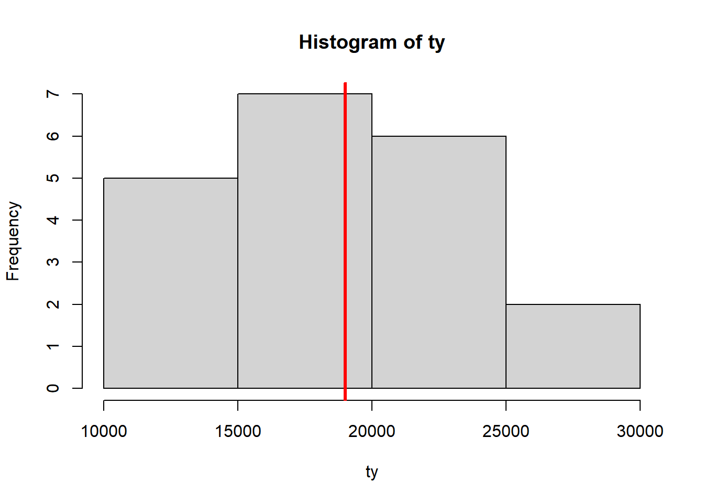
# calcular la esperanza y la varianza
uy<-sum(y*(1/20)) # esperanza del estimador de la media
sum((y-uy)^2*(1/20)) # varianza de la media muestral## [1] 711111.1\[E[\hat{\theta}]=\sum_{Rs} \hat{\theta_s} P(\hat{\theta}=\hat{\theta_s})\]
\[V(\hat{\theta})=E[(\hat{\theta}-E[\hat{\theta}])^2]=\sum_{s}(\hat{\theta_s}-E[\hat{\theta}])^2*P(\hat{\theta}=\hat{\theta})\]
Nota, Si \(E[\hat{\theta}]=\theta\) decimos que el estimador \(\hat{\theta}\) es un estimador insesgado (sin sesgo)
El estimador de la media muestral, es un estimador insesgado de la media poblacional.
Para el estimador del total;
Tomar en cuenta que el valor del parámetro del total poblacional es: \(t_y=\sum_U y_i=19000\)
ty<-apply(s,2,sum)*(6/3) #Distribución muestral para el estimador del total
hist(ty)
abline(v=sum(Y),col="red",lwd=3)
pty<-sum(ty*(1/20)) # esperanza
sum((ty-pty)^2*(1/20)) # varianza de la media muestral## [1] 25600000\[E[\hat{t}_y]=E[N*\bar{Y}]=N E[\bar{Y}]=N*u_y=N*\frac{\sum_U y_i}{N}=\sum_U {y_i}=t_y\] Repetir los cálculos para un muestreo con reposición. Muestras probables \(6^3=N^n=216\).
Y<-round(rnorm(25,30,5))
s<-combn(Y,10)
y<-apply(s,2,sum)/10
hist(y)
abline(v=mean(Y),col="red",lwd=2)2.4 Distribución muestral para la media
Recordar que para una población (\(U\)) con alguna variable \(X\) de tipo cuantitativa se puede obtener el parámetro de la media, definido como:
\[\mu_x=\frac{\sum_U x_i}{N}\]
Esta variable \(X\) en la población por lo tanto tiene su media \(\mu_x\) y también tiene su varianza, denotada por
\[V(X)=\sigma_x^2=\frac{\sum_U (x_i-\mu_x)^2}{N}\]
Teorema:
Sean \(X_1,X_2,\ldots,X_n\) variables aleatorias para una muestra de tamaño \(n\) extraida de la población \(U\), donde estas \(X_i\) independientes e idénticamente distribuidas (iid) como: \(X_i\sim .(E[X_i]=\mu_x,V(X_i)=\sigma_x^2)\), entonces, si:
\[\bar{X}=\frac{\sum_s x_i}{n}\]
Tenemos que
\[E[\bar{X}]=\mu_x\]
\[V(\bar{X})=\sigma^2_{\bar{x}}=\frac{\sigma^2_x}{n}\]
Demostración,
\[E[\bar{X}]=E\left[\frac{\sum_s x_i}{n}\right]=\frac{1}{n}E[x_1+x_2+\ldots+x_n]=\frac{1}{n}\left(E[x_1]+E[x_2]+\ldots+E[x_n] \right)=\] \[=\frac{1}{n}(\mu_x+\mu_x+\ldots+\mu_x)=\frac{n \mu_x}{n}=\mu_x\]
Si, \(X\) e \(Y\) son independientes \(Cov(X,Y)=0\).
\[V(X+Y)=V(X)+V(Y)\]
\[V(\bar{X})=V\left(\frac{\sum_s x_i}{n}\right)=\frac{1}{n^2}V(x_1+x_2+\ldots+x_n)=\frac{1}{n^2}\{V(x_1)+\ldots+V(x_n)\}=\] \[=\frac{1}{n^2}(\sigma^2_x+\sigma^2_x+\ldots+\sigma^2_x)=\frac{n \sigma_x^2}{n^2}=\frac{\sigma^2_x}{n}\] Nota: Cuando no es posible tener acceso al valor de \(\sigma^2_x\) se puede estimar este parámetro, mediante la muestra usando en su lugar a la varianza muestral:
\[\hat{S}^2_x=\frac{\sum_s (x_i-\bar{x})^2}{n-1}\]
2.5 Teorema del límite central
Teorema:
Si \(\bar{X}\) es la media de una muestra aleatoria de tamaño \(n\). Tomada de una población \(U\) con media \(\mu_x\) y varianza finita \(\sigma^2_x\). Entonces la forma límite de la distribución de:
\[Z=\frac{\bar{X}-E[\bar{X}]}{\sqrt{V(\bar{X})}}=\frac{\bar{X}-\mu_x}{\frac{\sigma_x}{\sqrt{n}}}\] a medida que \(n \rightarrow \infty\), podemos asegurar que \(Z\sim N(0,1)\), en este marco se puede decir a medida que \(n\) es más grande:
\[\bar{X}\sim N\left(\mu_x,\frac{\sigma^2_x}{n}\right)\]
Nota: esta idea de \(n\) grande se usa tradicionalmente el valor de \(n>30\), hay textos que plantean \(n=20\).
Simulación del teorema del límite central:
N<-1000000
x<-round(runif(N,18,60),0)
hist(x)
n<-100
choose(N,n)## [1] Inf#simular 10000 muestras distintas de tamaño n y calcular su media.
xbar<-NULL
for(i in 1:10000){
s<-sample(x,n)
xbar[i]<-mean(s)
print(i)
}## [1] 1
## [1] 2
## [1] 3
## [1] 4
## [1] 5
## [1] 6
## [1] 7
## [1] 8
## [1] 9
## [1] 10
## [1] 11
## [1] 12
## [1] 13
## [1] 14
## [1] 15
## [1] 16
## [1] 17
## [1] 18
## [1] 19
## [1] 20
## [1] 21
## [1] 22
## [1] 23
## [1] 24
## [1] 25
## [1] 26
## [1] 27
## [1] 28
## [1] 29
## [1] 30
## [1] 31
## [1] 32
## [1] 33
## [1] 34
## [1] 35
## [1] 36
## [1] 37
## [1] 38
## [1] 39
## [1] 40
## [1] 41
## [1] 42
## [1] 43
## [1] 44
## [1] 45
## [1] 46
## [1] 47
## [1] 48
## [1] 49
## [1] 50
## [1] 51
## [1] 52
## [1] 53
## [1] 54
## [1] 55
## [1] 56
## [1] 57
## [1] 58
## [1] 59
## [1] 60
## [1] 61
## [1] 62
## [1] 63
## [1] 64
## [1] 65
## [1] 66
## [1] 67
## [1] 68
## [1] 69
## [1] 70
## [1] 71
## [1] 72
## [1] 73
## [1] 74
## [1] 75
## [1] 76
## [1] 77
## [1] 78
## [1] 79
## [1] 80
## [1] 81
## [1] 82
## [1] 83
## [1] 84
## [1] 85
## [1] 86
## [1] 87
## [1] 88
## [1] 89
## [1] 90
## [1] 91
## [1] 92
## [1] 93
## [1] 94
## [1] 95
## [1] 96
## [1] 97
## [1] 98
## [1] 99
## [1] 100
## [1] 101
## [1] 102
## [1] 103
## [1] 104
## [1] 105
## [1] 106
## [1] 107
## [1] 108
## [1] 109
## [1] 110
## [1] 111
## [1] 112
## [1] 113
## [1] 114
## [1] 115
## [1] 116
## [1] 117
## [1] 118
## [1] 119
## [1] 120
## [1] 121
## [1] 122
## [1] 123
## [1] 124
## [1] 125
## [1] 126
## [1] 127
## [1] 128
## [1] 129
## [1] 130
## [1] 131
## [1] 132
## [1] 133
## [1] 134
## [1] 135
## [1] 136
## [1] 137
## [1] 138
## [1] 139
## [1] 140
## [1] 141
## [1] 142
## [1] 143
## [1] 144
## [1] 145
## [1] 146
## [1] 147
## [1] 148
## [1] 149
## [1] 150
## [1] 151
## [1] 152
## [1] 153
## [1] 154
## [1] 155
## [1] 156
## [1] 157
## [1] 158
## [1] 159
## [1] 160
## [1] 161
## [1] 162
## [1] 163
## [1] 164
## [1] 165
## [1] 166
## [1] 167
## [1] 168
## [1] 169
## [1] 170
## [1] 171
## [1] 172
## [1] 173
## [1] 174
## [1] 175
## [1] 176
## [1] 177
## [1] 178
## [1] 179
## [1] 180
## [1] 181
## [1] 182
## [1] 183
## [1] 184
## [1] 185
## [1] 186
## [1] 187
## [1] 188
## [1] 189
## [1] 190
## [1] 191
## [1] 192
## [1] 193
## [1] 194
## [1] 195
## [1] 196
## [1] 197
## [1] 198
## [1] 199
## [1] 200
## [1] 201
## [1] 202
## [1] 203
## [1] 204
## [1] 205
## [1] 206
## [1] 207
## [1] 208
## [1] 209
## [1] 210
## [1] 211
## [1] 212
## [1] 213
## [1] 214
## [1] 215
## [1] 216
## [1] 217
## [1] 218
## [1] 219
## [1] 220
## [1] 221
## [1] 222
## [1] 223
## [1] 224
## [1] 225
## [1] 226
## [1] 227
## [1] 228
## [1] 229
## [1] 230
## [1] 231
## [1] 232
## [1] 233
## [1] 234
## [1] 235
## [1] 236
## [1] 237
## [1] 238
## [1] 239
## [1] 240
## [1] 241
## [1] 242
## [1] 243
## [1] 244
## [1] 245
## [1] 246
## [1] 247
## [1] 248
## [1] 249
## [1] 250
## [1] 251
## [1] 252
## [1] 253
## [1] 254
## [1] 255
## [1] 256
## [1] 257
## [1] 258
## [1] 259
## [1] 260
## [1] 261
## [1] 262
## [1] 263
## [1] 264
## [1] 265
## [1] 266
## [1] 267
## [1] 268
## [1] 269
## [1] 270
## [1] 271
## [1] 272
## [1] 273
## [1] 274
## [1] 275
## [1] 276
## [1] 277
## [1] 278
## [1] 279
## [1] 280
## [1] 281
## [1] 282
## [1] 283
## [1] 284
## [1] 285
## [1] 286
## [1] 287
## [1] 288
## [1] 289
## [1] 290
## [1] 291
## [1] 292
## [1] 293
## [1] 294
## [1] 295
## [1] 296
## [1] 297
## [1] 298
## [1] 299
## [1] 300
## [1] 301
## [1] 302
## [1] 303
## [1] 304
## [1] 305
## [1] 306
## [1] 307
## [1] 308
## [1] 309
## [1] 310
## [1] 311
## [1] 312
## [1] 313
## [1] 314
## [1] 315
## [1] 316
## [1] 317
## [1] 318
## [1] 319
## [1] 320
## [1] 321
## [1] 322
## [1] 323
## [1] 324
## [1] 325
## [1] 326
## [1] 327
## [1] 328
## [1] 329
## [1] 330
## [1] 331
## [1] 332
## [1] 333
## [1] 334
## [1] 335
## [1] 336
## [1] 337
## [1] 338
## [1] 339
## [1] 340
## [1] 341
## [1] 342
## [1] 343
## [1] 344
## [1] 345
## [1] 346
## [1] 347
## [1] 348
## [1] 349
## [1] 350
## [1] 351
## [1] 352
## [1] 353
## [1] 354
## [1] 355
## [1] 356
## [1] 357
## [1] 358
## [1] 359
## [1] 360
## [1] 361
## [1] 362
## [1] 363
## [1] 364
## [1] 365
## [1] 366
## [1] 367
## [1] 368
## [1] 369
## [1] 370
## [1] 371
## [1] 372
## [1] 373
## [1] 374
## [1] 375
## [1] 376
## [1] 377
## [1] 378
## [1] 379
## [1] 380
## [1] 381
## [1] 382
## [1] 383
## [1] 384
## [1] 385
## [1] 386
## [1] 387
## [1] 388
## [1] 389
## [1] 390
## [1] 391
## [1] 392
## [1] 393
## [1] 394
## [1] 395
## [1] 396
## [1] 397
## [1] 398
## [1] 399
## [1] 400
## [1] 401
## [1] 402
## [1] 403
## [1] 404
## [1] 405
## [1] 406
## [1] 407
## [1] 408
## [1] 409
## [1] 410
## [1] 411
## [1] 412
## [1] 413
## [1] 414
## [1] 415
## [1] 416
## [1] 417
## [1] 418
## [1] 419
## [1] 420
## [1] 421
## [1] 422
## [1] 423
## [1] 424
## [1] 425
## [1] 426
## [1] 427
## [1] 428
## [1] 429
## [1] 430
## [1] 431
## [1] 432
## [1] 433
## [1] 434
## [1] 435
## [1] 436
## [1] 437
## [1] 438
## [1] 439
## [1] 440
## [1] 441
## [1] 442
## [1] 443
## [1] 444
## [1] 445
## [1] 446
## [1] 447
## [1] 448
## [1] 449
## [1] 450
## [1] 451
## [1] 452
## [1] 453
## [1] 454
## [1] 455
## [1] 456
## [1] 457
## [1] 458
## [1] 459
## [1] 460
## [1] 461
## [1] 462
## [1] 463
## [1] 464
## [1] 465
## [1] 466
## [1] 467
## [1] 468
## [1] 469
## [1] 470
## [1] 471
## [1] 472
## [1] 473
## [1] 474
## [1] 475
## [1] 476
## [1] 477
## [1] 478
## [1] 479
## [1] 480
## [1] 481
## [1] 482
## [1] 483
## [1] 484
## [1] 485
## [1] 486
## [1] 487
## [1] 488
## [1] 489
## [1] 490
## [1] 491
## [1] 492
## [1] 493
## [1] 494
## [1] 495
## [1] 496
## [1] 497
## [1] 498
## [1] 499
## [1] 500
## [1] 501
## [1] 502
## [1] 503
## [1] 504
## [1] 505
## [1] 506
## [1] 507
## [1] 508
## [1] 509
## [1] 510
## [1] 511
## [1] 512
## [1] 513
## [1] 514
## [1] 515
## [1] 516
## [1] 517
## [1] 518
## [1] 519
## [1] 520
## [1] 521
## [1] 522
## [1] 523
## [1] 524
## [1] 525
## [1] 526
## [1] 527
## [1] 528
## [1] 529
## [1] 530
## [1] 531
## [1] 532
## [1] 533
## [1] 534
## [1] 535
## [1] 536
## [1] 537
## [1] 538
## [1] 539
## [1] 540
## [1] 541
## [1] 542
## [1] 543
## [1] 544
## [1] 545
## [1] 546
## [1] 547
## [1] 548
## [1] 549
## [1] 550
## [1] 551
## [1] 552
## [1] 553
## [1] 554
## [1] 555
## [1] 556
## [1] 557
## [1] 558
## [1] 559
## [1] 560
## [1] 561
## [1] 562
## [1] 563
## [1] 564
## [1] 565
## [1] 566
## [1] 567
## [1] 568
## [1] 569
## [1] 570
## [1] 571
## [1] 572
## [1] 573
## [1] 574
## [1] 575
## [1] 576
## [1] 577
## [1] 578
## [1] 579
## [1] 580
## [1] 581
## [1] 582
## [1] 583
## [1] 584
## [1] 585
## [1] 586
## [1] 587
## [1] 588
## [1] 589
## [1] 590
## [1] 591
## [1] 592
## [1] 593
## [1] 594
## [1] 595
## [1] 596
## [1] 597
## [1] 598
## [1] 599
## [1] 600
## [1] 601
## [1] 602
## [1] 603
## [1] 604
## [1] 605
## [1] 606
## [1] 607
## [1] 608
## [1] 609
## [1] 610
## [1] 611
## [1] 612
## [1] 613
## [1] 614
## [1] 615
## [1] 616
## [1] 617
## [1] 618
## [1] 619
## [1] 620
## [1] 621
## [1] 622
## [1] 623
## [1] 624
## [1] 625
## [1] 626
## [1] 627
## [1] 628
## [1] 629
## [1] 630
## [1] 631
## [1] 632
## [1] 633
## [1] 634
## [1] 635
## [1] 636
## [1] 637
## [1] 638
## [1] 639
## [1] 640
## [1] 641
## [1] 642
## [1] 643
## [1] 644
## [1] 645
## [1] 646
## [1] 647
## [1] 648
## [1] 649
## [1] 650
## [1] 651
## [1] 652
## [1] 653
## [1] 654
## [1] 655
## [1] 656
## [1] 657
## [1] 658
## [1] 659
## [1] 660
## [1] 661
## [1] 662
## [1] 663
## [1] 664
## [1] 665
## [1] 666
## [1] 667
## [1] 668
## [1] 669
## [1] 670
## [1] 671
## [1] 672
## [1] 673
## [1] 674
## [1] 675
## [1] 676
## [1] 677
## [1] 678
## [1] 679
## [1] 680
## [1] 681
## [1] 682
## [1] 683
## [1] 684
## [1] 685
## [1] 686
## [1] 687
## [1] 688
## [1] 689
## [1] 690
## [1] 691
## [1] 692
## [1] 693
## [1] 694
## [1] 695
## [1] 696
## [1] 697
## [1] 698
## [1] 699
## [1] 700
## [1] 701
## [1] 702
## [1] 703
## [1] 704
## [1] 705
## [1] 706
## [1] 707
## [1] 708
## [1] 709
## [1] 710
## [1] 711
## [1] 712
## [1] 713
## [1] 714
## [1] 715
## [1] 716
## [1] 717
## [1] 718
## [1] 719
## [1] 720
## [1] 721
## [1] 722
## [1] 723
## [1] 724
## [1] 725
## [1] 726
## [1] 727
## [1] 728
## [1] 729
## [1] 730
## [1] 731
## [1] 732
## [1] 733
## [1] 734
## [1] 735
## [1] 736
## [1] 737
## [1] 738
## [1] 739
## [1] 740
## [1] 741
## [1] 742
## [1] 743
## [1] 744
## [1] 745
## [1] 746
## [1] 747
## [1] 748
## [1] 749
## [1] 750
## [1] 751
## [1] 752
## [1] 753
## [1] 754
## [1] 755
## [1] 756
## [1] 757
## [1] 758
## [1] 759
## [1] 760
## [1] 761
## [1] 762
## [1] 763
## [1] 764
## [1] 765
## [1] 766
## [1] 767
## [1] 768
## [1] 769
## [1] 770
## [1] 771
## [1] 772
## [1] 773
## [1] 774
## [1] 775
## [1] 776
## [1] 777
## [1] 778
## [1] 779
## [1] 780
## [1] 781
## [1] 782
## [1] 783
## [1] 784
## [1] 785
## [1] 786
## [1] 787
## [1] 788
## [1] 789
## [1] 790
## [1] 791
## [1] 792
## [1] 793
## [1] 794
## [1] 795
## [1] 796
## [1] 797
## [1] 798
## [1] 799
## [1] 800
## [1] 801
## [1] 802
## [1] 803
## [1] 804
## [1] 805
## [1] 806
## [1] 807
## [1] 808
## [1] 809
## [1] 810
## [1] 811
## [1] 812
## [1] 813
## [1] 814
## [1] 815
## [1] 816
## [1] 817
## [1] 818
## [1] 819
## [1] 820
## [1] 821
## [1] 822
## [1] 823
## [1] 824
## [1] 825
## [1] 826
## [1] 827
## [1] 828
## [1] 829
## [1] 830
## [1] 831
## [1] 832
## [1] 833
## [1] 834
## [1] 835
## [1] 836
## [1] 837
## [1] 838
## [1] 839
## [1] 840
## [1] 841
## [1] 842
## [1] 843
## [1] 844
## [1] 845
## [1] 846
## [1] 847
## [1] 848
## [1] 849
## [1] 850
## [1] 851
## [1] 852
## [1] 853
## [1] 854
## [1] 855
## [1] 856
## [1] 857
## [1] 858
## [1] 859
## [1] 860
## [1] 861
## [1] 862
## [1] 863
## [1] 864
## [1] 865
## [1] 866
## [1] 867
## [1] 868
## [1] 869
## [1] 870
## [1] 871
## [1] 872
## [1] 873
## [1] 874
## [1] 875
## [1] 876
## [1] 877
## [1] 878
## [1] 879
## [1] 880
## [1] 881
## [1] 882
## [1] 883
## [1] 884
## [1] 885
## [1] 886
## [1] 887
## [1] 888
## [1] 889
## [1] 890
## [1] 891
## [1] 892
## [1] 893
## [1] 894
## [1] 895
## [1] 896
## [1] 897
## [1] 898
## [1] 899
## [1] 900
## [1] 901
## [1] 902
## [1] 903
## [1] 904
## [1] 905
## [1] 906
## [1] 907
## [1] 908
## [1] 909
## [1] 910
## [1] 911
## [1] 912
## [1] 913
## [1] 914
## [1] 915
## [1] 916
## [1] 917
## [1] 918
## [1] 919
## [1] 920
## [1] 921
## [1] 922
## [1] 923
## [1] 924
## [1] 925
## [1] 926
## [1] 927
## [1] 928
## [1] 929
## [1] 930
## [1] 931
## [1] 932
## [1] 933
## [1] 934
## [1] 935
## [1] 936
## [1] 937
## [1] 938
## [1] 939
## [1] 940
## [1] 941
## [1] 942
## [1] 943
## [1] 944
## [1] 945
## [1] 946
## [1] 947
## [1] 948
## [1] 949
## [1] 950
## [1] 951
## [1] 952
## [1] 953
## [1] 954
## [1] 955
## [1] 956
## [1] 957
## [1] 958
## [1] 959
## [1] 960
## [1] 961
## [1] 962
## [1] 963
## [1] 964
## [1] 965
## [1] 966
## [1] 967
## [1] 968
## [1] 969
## [1] 970
## [1] 971
## [1] 972
## [1] 973
## [1] 974
## [1] 975
## [1] 976
## [1] 977
## [1] 978
## [1] 979
## [1] 980
## [1] 981
## [1] 982
## [1] 983
## [1] 984
## [1] 985
## [1] 986
## [1] 987
## [1] 988
## [1] 989
## [1] 990
## [1] 991
## [1] 992
## [1] 993
## [1] 994
## [1] 995
## [1] 996
## [1] 997
## [1] 998
## [1] 999
## [1] 1000
## [1] 1001
## [1] 1002
## [1] 1003
## [1] 1004
## [1] 1005
## [1] 1006
## [1] 1007
## [1] 1008
## [1] 1009
## [1] 1010
## [1] 1011
## [1] 1012
## [1] 1013
## [1] 1014
## [1] 1015
## [1] 1016
## [1] 1017
## [1] 1018
## [1] 1019
## [1] 1020
## [1] 1021
## [1] 1022
## [1] 1023
## [1] 1024
## [1] 1025
## [1] 1026
## [1] 1027
## [1] 1028
## [1] 1029
## [1] 1030
## [1] 1031
## [1] 1032
## [1] 1033
## [1] 1034
## [1] 1035
## [1] 1036
## [1] 1037
## [1] 1038
## [1] 1039
## [1] 1040
## [1] 1041
## [1] 1042
## [1] 1043
## [1] 1044
## [1] 1045
## [1] 1046
## [1] 1047
## [1] 1048
## [1] 1049
## [1] 1050
## [1] 1051
## [1] 1052
## [1] 1053
## [1] 1054
## [1] 1055
## [1] 1056
## [1] 1057
## [1] 1058
## [1] 1059
## [1] 1060
## [1] 1061
## [1] 1062
## [1] 1063
## [1] 1064
## [1] 1065
## [1] 1066
## [1] 1067
## [1] 1068
## [1] 1069
## [1] 1070
## [1] 1071
## [1] 1072
## [1] 1073
## [1] 1074
## [1] 1075
## [1] 1076
## [1] 1077
## [1] 1078
## [1] 1079
## [1] 1080
## [1] 1081
## [1] 1082
## [1] 1083
## [1] 1084
## [1] 1085
## [1] 1086
## [1] 1087
## [1] 1088
## [1] 1089
## [1] 1090
## [1] 1091
## [1] 1092
## [1] 1093
## [1] 1094
## [1] 1095
## [1] 1096
## [1] 1097
## [1] 1098
## [1] 1099
## [1] 1100
## [1] 1101
## [1] 1102
## [1] 1103
## [1] 1104
## [1] 1105
## [1] 1106
## [1] 1107
## [1] 1108
## [1] 1109
## [1] 1110
## [1] 1111
## [1] 1112
## [1] 1113
## [1] 1114
## [1] 1115
## [1] 1116
## [1] 1117
## [1] 1118
## [1] 1119
## [1] 1120
## [1] 1121
## [1] 1122
## [1] 1123
## [1] 1124
## [1] 1125
## [1] 1126
## [1] 1127
## [1] 1128
## [1] 1129
## [1] 1130
## [1] 1131
## [1] 1132
## [1] 1133
## [1] 1134
## [1] 1135
## [1] 1136
## [1] 1137
## [1] 1138
## [1] 1139
## [1] 1140
## [1] 1141
## [1] 1142
## [1] 1143
## [1] 1144
## [1] 1145
## [1] 1146
## [1] 1147
## [1] 1148
## [1] 1149
## [1] 1150
## [1] 1151
## [1] 1152
## [1] 1153
## [1] 1154
## [1] 1155
## [1] 1156
## [1] 1157
## [1] 1158
## [1] 1159
## [1] 1160
## [1] 1161
## [1] 1162
## [1] 1163
## [1] 1164
## [1] 1165
## [1] 1166
## [1] 1167
## [1] 1168
## [1] 1169
## [1] 1170
## [1] 1171
## [1] 1172
## [1] 1173
## [1] 1174
## [1] 1175
## [1] 1176
## [1] 1177
## [1] 1178
## [1] 1179
## [1] 1180
## [1] 1181
## [1] 1182
## [1] 1183
## [1] 1184
## [1] 1185
## [1] 1186
## [1] 1187
## [1] 1188
## [1] 1189
## [1] 1190
## [1] 1191
## [1] 1192
## [1] 1193
## [1] 1194
## [1] 1195
## [1] 1196
## [1] 1197
## [1] 1198
## [1] 1199
## [1] 1200
## [1] 1201
## [1] 1202
## [1] 1203
## [1] 1204
## [1] 1205
## [1] 1206
## [1] 1207
## [1] 1208
## [1] 1209
## [1] 1210
## [1] 1211
## [1] 1212
## [1] 1213
## [1] 1214
## [1] 1215
## [1] 1216
## [1] 1217
## [1] 1218
## [1] 1219
## [1] 1220
## [1] 1221
## [1] 1222
## [1] 1223
## [1] 1224
## [1] 1225
## [1] 1226
## [1] 1227
## [1] 1228
## [1] 1229
## [1] 1230
## [1] 1231
## [1] 1232
## [1] 1233
## [1] 1234
## [1] 1235
## [1] 1236
## [1] 1237
## [1] 1238
## [1] 1239
## [1] 1240
## [1] 1241
## [1] 1242
## [1] 1243
## [1] 1244
## [1] 1245
## [1] 1246
## [1] 1247
## [1] 1248
## [1] 1249
## [1] 1250
## [1] 1251
## [1] 1252
## [1] 1253
## [1] 1254
## [1] 1255
## [1] 1256
## [1] 1257
## [1] 1258
## [1] 1259
## [1] 1260
## [1] 1261
## [1] 1262
## [1] 1263
## [1] 1264
## [1] 1265
## [1] 1266
## [1] 1267
## [1] 1268
## [1] 1269
## [1] 1270
## [1] 1271
## [1] 1272
## [1] 1273
## [1] 1274
## [1] 1275
## [1] 1276
## [1] 1277
## [1] 1278
## [1] 1279
## [1] 1280
## [1] 1281
## [1] 1282
## [1] 1283
## [1] 1284
## [1] 1285
## [1] 1286
## [1] 1287
## [1] 1288
## [1] 1289
## [1] 1290
## [1] 1291
## [1] 1292
## [1] 1293
## [1] 1294
## [1] 1295
## [1] 1296
## [1] 1297
## [1] 1298
## [1] 1299
## [1] 1300
## [1] 1301
## [1] 1302
## [1] 1303
## [1] 1304
## [1] 1305
## [1] 1306
## [1] 1307
## [1] 1308
## [1] 1309
## [1] 1310
## [1] 1311
## [1] 1312
## [1] 1313
## [1] 1314
## [1] 1315
## [1] 1316
## [1] 1317
## [1] 1318
## [1] 1319
## [1] 1320
## [1] 1321
## [1] 1322
## [1] 1323
## [1] 1324
## [1] 1325
## [1] 1326
## [1] 1327
## [1] 1328
## [1] 1329
## [1] 1330
## [1] 1331
## [1] 1332
## [1] 1333
## [1] 1334
## [1] 1335
## [1] 1336
## [1] 1337
## [1] 1338
## [1] 1339
## [1] 1340
## [1] 1341
## [1] 1342
## [1] 1343
## [1] 1344
## [1] 1345
## [1] 1346
## [1] 1347
## [1] 1348
## [1] 1349
## [1] 1350
## [1] 1351
## [1] 1352
## [1] 1353
## [1] 1354
## [1] 1355
## [1] 1356
## [1] 1357
## [1] 1358
## [1] 1359
## [1] 1360
## [1] 1361
## [1] 1362
## [1] 1363
## [1] 1364
## [1] 1365
## [1] 1366
## [1] 1367
## [1] 1368
## [1] 1369
## [1] 1370
## [1] 1371
## [1] 1372
## [1] 1373
## [1] 1374
## [1] 1375
## [1] 1376
## [1] 1377
## [1] 1378
## [1] 1379
## [1] 1380
## [1] 1381
## [1] 1382
## [1] 1383
## [1] 1384
## [1] 1385
## [1] 1386
## [1] 1387
## [1] 1388
## [1] 1389
## [1] 1390
## [1] 1391
## [1] 1392
## [1] 1393
## [1] 1394
## [1] 1395
## [1] 1396
## [1] 1397
## [1] 1398
## [1] 1399
## [1] 1400
## [1] 1401
## [1] 1402
## [1] 1403
## [1] 1404
## [1] 1405
## [1] 1406
## [1] 1407
## [1] 1408
## [1] 1409
## [1] 1410
## [1] 1411
## [1] 1412
## [1] 1413
## [1] 1414
## [1] 1415
## [1] 1416
## [1] 1417
## [1] 1418
## [1] 1419
## [1] 1420
## [1] 1421
## [1] 1422
## [1] 1423
## [1] 1424
## [1] 1425
## [1] 1426
## [1] 1427
## [1] 1428
## [1] 1429
## [1] 1430
## [1] 1431
## [1] 1432
## [1] 1433
## [1] 1434
## [1] 1435
## [1] 1436
## [1] 1437
## [1] 1438
## [1] 1439
## [1] 1440
## [1] 1441
## [1] 1442
## [1] 1443
## [1] 1444
## [1] 1445
## [1] 1446
## [1] 1447
## [1] 1448
## [1] 1449
## [1] 1450
## [1] 1451
## [1] 1452
## [1] 1453
## [1] 1454
## [1] 1455
## [1] 1456
## [1] 1457
## [1] 1458
## [1] 1459
## [1] 1460
## [1] 1461
## [1] 1462
## [1] 1463
## [1] 1464
## [1] 1465
## [1] 1466
## [1] 1467
## [1] 1468
## [1] 1469
## [1] 1470
## [1] 1471
## [1] 1472
## [1] 1473
## [1] 1474
## [1] 1475
## [1] 1476
## [1] 1477
## [1] 1478
## [1] 1479
## [1] 1480
## [1] 1481
## [1] 1482
## [1] 1483
## [1] 1484
## [1] 1485
## [1] 1486
## [1] 1487
## [1] 1488
## [1] 1489
## [1] 1490
## [1] 1491
## [1] 1492
## [1] 1493
## [1] 1494
## [1] 1495
## [1] 1496
## [1] 1497
## [1] 1498
## [1] 1499
## [1] 1500
## [1] 1501
## [1] 1502
## [1] 1503
## [1] 1504
## [1] 1505
## [1] 1506
## [1] 1507
## [1] 1508
## [1] 1509
## [1] 1510
## [1] 1511
## [1] 1512
## [1] 1513
## [1] 1514
## [1] 1515
## [1] 1516
## [1] 1517
## [1] 1518
## [1] 1519
## [1] 1520
## [1] 1521
## [1] 1522
## [1] 1523
## [1] 1524
## [1] 1525
## [1] 1526
## [1] 1527
## [1] 1528
## [1] 1529
## [1] 1530
## [1] 1531
## [1] 1532
## [1] 1533
## [1] 1534
## [1] 1535
## [1] 1536
## [1] 1537
## [1] 1538
## [1] 1539
## [1] 1540
## [1] 1541
## [1] 1542
## [1] 1543
## [1] 1544
## [1] 1545
## [1] 1546
## [1] 1547
## [1] 1548
## [1] 1549
## [1] 1550
## [1] 1551
## [1] 1552
## [1] 1553
## [1] 1554
## [1] 1555
## [1] 1556
## [1] 1557
## [1] 1558
## [1] 1559
## [1] 1560
## [1] 1561
## [1] 1562
## [1] 1563
## [1] 1564
## [1] 1565
## [1] 1566
## [1] 1567
## [1] 1568
## [1] 1569
## [1] 1570
## [1] 1571
## [1] 1572
## [1] 1573
## [1] 1574
## [1] 1575
## [1] 1576
## [1] 1577
## [1] 1578
## [1] 1579
## [1] 1580
## [1] 1581
## [1] 1582
## [1] 1583
## [1] 1584
## [1] 1585
## [1] 1586
## [1] 1587
## [1] 1588
## [1] 1589
## [1] 1590
## [1] 1591
## [1] 1592
## [1] 1593
## [1] 1594
## [1] 1595
## [1] 1596
## [1] 1597
## [1] 1598
## [1] 1599
## [1] 1600
## [1] 1601
## [1] 1602
## [1] 1603
## [1] 1604
## [1] 1605
## [1] 1606
## [1] 1607
## [1] 1608
## [1] 1609
## [1] 1610
## [1] 1611
## [1] 1612
## [1] 1613
## [1] 1614
## [1] 1615
## [1] 1616
## [1] 1617
## [1] 1618
## [1] 1619
## [1] 1620
## [1] 1621
## [1] 1622
## [1] 1623
## [1] 1624
## [1] 1625
## [1] 1626
## [1] 1627
## [1] 1628
## [1] 1629
## [1] 1630
## [1] 1631
## [1] 1632
## [1] 1633
## [1] 1634
## [1] 1635
## [1] 1636
## [1] 1637
## [1] 1638
## [1] 1639
## [1] 1640
## [1] 1641
## [1] 1642
## [1] 1643
## [1] 1644
## [1] 1645
## [1] 1646
## [1] 1647
## [1] 1648
## [1] 1649
## [1] 1650
## [1] 1651
## [1] 1652
## [1] 1653
## [1] 1654
## [1] 1655
## [1] 1656
## [1] 1657
## [1] 1658
## [1] 1659
## [1] 1660
## [1] 1661
## [1] 1662
## [1] 1663
## [1] 1664
## [1] 1665
## [1] 1666
## [1] 1667
## [1] 1668
## [1] 1669
## [1] 1670
## [1] 1671
## [1] 1672
## [1] 1673
## [1] 1674
## [1] 1675
## [1] 1676
## [1] 1677
## [1] 1678
## [1] 1679
## [1] 1680
## [1] 1681
## [1] 1682
## [1] 1683
## [1] 1684
## [1] 1685
## [1] 1686
## [1] 1687
## [1] 1688
## [1] 1689
## [1] 1690
## [1] 1691
## [1] 1692
## [1] 1693
## [1] 1694
## [1] 1695
## [1] 1696
## [1] 1697
## [1] 1698
## [1] 1699
## [1] 1700
## [1] 1701
## [1] 1702
## [1] 1703
## [1] 1704
## [1] 1705
## [1] 1706
## [1] 1707
## [1] 1708
## [1] 1709
## [1] 1710
## [1] 1711
## [1] 1712
## [1] 1713
## [1] 1714
## [1] 1715
## [1] 1716
## [1] 1717
## [1] 1718
## [1] 1719
## [1] 1720
## [1] 1721
## [1] 1722
## [1] 1723
## [1] 1724
## [1] 1725
## [1] 1726
## [1] 1727
## [1] 1728
## [1] 1729
## [1] 1730
## [1] 1731
## [1] 1732
## [1] 1733
## [1] 1734
## [1] 1735
## [1] 1736
## [1] 1737
## [1] 1738
## [1] 1739
## [1] 1740
## [1] 1741
## [1] 1742
## [1] 1743
## [1] 1744
## [1] 1745
## [1] 1746
## [1] 1747
## [1] 1748
## [1] 1749
## [1] 1750
## [1] 1751
## [1] 1752
## [1] 1753
## [1] 1754
## [1] 1755
## [1] 1756
## [1] 1757
## [1] 1758
## [1] 1759
## [1] 1760
## [1] 1761
## [1] 1762
## [1] 1763
## [1] 1764
## [1] 1765
## [1] 1766
## [1] 1767
## [1] 1768
## [1] 1769
## [1] 1770
## [1] 1771
## [1] 1772
## [1] 1773
## [1] 1774
## [1] 1775
## [1] 1776
## [1] 1777
## [1] 1778
## [1] 1779
## [1] 1780
## [1] 1781
## [1] 1782
## [1] 1783
## [1] 1784
## [1] 1785
## [1] 1786
## [1] 1787
## [1] 1788
## [1] 1789
## [1] 1790
## [1] 1791
## [1] 1792
## [1] 1793
## [1] 1794
## [1] 1795
## [1] 1796
## [1] 1797
## [1] 1798
## [1] 1799
## [1] 1800
## [1] 1801
## [1] 1802
## [1] 1803
## [1] 1804
## [1] 1805
## [1] 1806
## [1] 1807
## [1] 1808
## [1] 1809
## [1] 1810
## [1] 1811
## [1] 1812
## [1] 1813
## [1] 1814
## [1] 1815
## [1] 1816
## [1] 1817
## [1] 1818
## [1] 1819
## [1] 1820
## [1] 1821
## [1] 1822
## [1] 1823
## [1] 1824
## [1] 1825
## [1] 1826
## [1] 1827
## [1] 1828
## [1] 1829
## [1] 1830
## [1] 1831
## [1] 1832
## [1] 1833
## [1] 1834
## [1] 1835
## [1] 1836
## [1] 1837
## [1] 1838
## [1] 1839
## [1] 1840
## [1] 1841
## [1] 1842
## [1] 1843
## [1] 1844
## [1] 1845
## [1] 1846
## [1] 1847
## [1] 1848
## [1] 1849
## [1] 1850
## [1] 1851
## [1] 1852
## [1] 1853
## [1] 1854
## [1] 1855
## [1] 1856
## [1] 1857
## [1] 1858
## [1] 1859
## [1] 1860
## [1] 1861
## [1] 1862
## [1] 1863
## [1] 1864
## [1] 1865
## [1] 1866
## [1] 1867
## [1] 1868
## [1] 1869
## [1] 1870
## [1] 1871
## [1] 1872
## [1] 1873
## [1] 1874
## [1] 1875
## [1] 1876
## [1] 1877
## [1] 1878
## [1] 1879
## [1] 1880
## [1] 1881
## [1] 1882
## [1] 1883
## [1] 1884
## [1] 1885
## [1] 1886
## [1] 1887
## [1] 1888
## [1] 1889
## [1] 1890
## [1] 1891
## [1] 1892
## [1] 1893
## [1] 1894
## [1] 1895
## [1] 1896
## [1] 1897
## [1] 1898
## [1] 1899
## [1] 1900
## [1] 1901
## [1] 1902
## [1] 1903
## [1] 1904
## [1] 1905
## [1] 1906
## [1] 1907
## [1] 1908
## [1] 1909
## [1] 1910
## [1] 1911
## [1] 1912
## [1] 1913
## [1] 1914
## [1] 1915
## [1] 1916
## [1] 1917
## [1] 1918
## [1] 1919
## [1] 1920
## [1] 1921
## [1] 1922
## [1] 1923
## [1] 1924
## [1] 1925
## [1] 1926
## [1] 1927
## [1] 1928
## [1] 1929
## [1] 1930
## [1] 1931
## [1] 1932
## [1] 1933
## [1] 1934
## [1] 1935
## [1] 1936
## [1] 1937
## [1] 1938
## [1] 1939
## [1] 1940
## [1] 1941
## [1] 1942
## [1] 1943
## [1] 1944
## [1] 1945
## [1] 1946
## [1] 1947
## [1] 1948
## [1] 1949
## [1] 1950
## [1] 1951
## [1] 1952
## [1] 1953
## [1] 1954
## [1] 1955
## [1] 1956
## [1] 1957
## [1] 1958
## [1] 1959
## [1] 1960
## [1] 1961
## [1] 1962
## [1] 1963
## [1] 1964
## [1] 1965
## [1] 1966
## [1] 1967
## [1] 1968
## [1] 1969
## [1] 1970
## [1] 1971
## [1] 1972
## [1] 1973
## [1] 1974
## [1] 1975
## [1] 1976
## [1] 1977
## [1] 1978
## [1] 1979
## [1] 1980
## [1] 1981
## [1] 1982
## [1] 1983
## [1] 1984
## [1] 1985
## [1] 1986
## [1] 1987
## [1] 1988
## [1] 1989
## [1] 1990
## [1] 1991
## [1] 1992
## [1] 1993
## [1] 1994
## [1] 1995
## [1] 1996
## [1] 1997
## [1] 1998
## [1] 1999
## [1] 2000
## [1] 2001
## [1] 2002
## [1] 2003
## [1] 2004
## [1] 2005
## [1] 2006
## [1] 2007
## [1] 2008
## [1] 2009
## [1] 2010
## [1] 2011
## [1] 2012
## [1] 2013
## [1] 2014
## [1] 2015
## [1] 2016
## [1] 2017
## [1] 2018
## [1] 2019
## [1] 2020
## [1] 2021
## [1] 2022
## [1] 2023
## [1] 2024
## [1] 2025
## [1] 2026
## [1] 2027
## [1] 2028
## [1] 2029
## [1] 2030
## [1] 2031
## [1] 2032
## [1] 2033
## [1] 2034
## [1] 2035
## [1] 2036
## [1] 2037
## [1] 2038
## [1] 2039
## [1] 2040
## [1] 2041
## [1] 2042
## [1] 2043
## [1] 2044
## [1] 2045
## [1] 2046
## [1] 2047
## [1] 2048
## [1] 2049
## [1] 2050
## [1] 2051
## [1] 2052
## [1] 2053
## [1] 2054
## [1] 2055
## [1] 2056
## [1] 2057
## [1] 2058
## [1] 2059
## [1] 2060
## [1] 2061
## [1] 2062
## [1] 2063
## [1] 2064
## [1] 2065
## [1] 2066
## [1] 2067
## [1] 2068
## [1] 2069
## [1] 2070
## [1] 2071
## [1] 2072
## [1] 2073
## [1] 2074
## [1] 2075
## [1] 2076
## [1] 2077
## [1] 2078
## [1] 2079
## [1] 2080
## [1] 2081
## [1] 2082
## [1] 2083
## [1] 2084
## [1] 2085
## [1] 2086
## [1] 2087
## [1] 2088
## [1] 2089
## [1] 2090
## [1] 2091
## [1] 2092
## [1] 2093
## [1] 2094
## [1] 2095
## [1] 2096
## [1] 2097
## [1] 2098
## [1] 2099
## [1] 2100
## [1] 2101
## [1] 2102
## [1] 2103
## [1] 2104
## [1] 2105
## [1] 2106
## [1] 2107
## [1] 2108
## [1] 2109
## [1] 2110
## [1] 2111
## [1] 2112
## [1] 2113
## [1] 2114
## [1] 2115
## [1] 2116
## [1] 2117
## [1] 2118
## [1] 2119
## [1] 2120
## [1] 2121
## [1] 2122
## [1] 2123
## [1] 2124
## [1] 2125
## [1] 2126
## [1] 2127
## [1] 2128
## [1] 2129
## [1] 2130
## [1] 2131
## [1] 2132
## [1] 2133
## [1] 2134
## [1] 2135
## [1] 2136
## [1] 2137
## [1] 2138
## [1] 2139
## [1] 2140
## [1] 2141
## [1] 2142
## [1] 2143
## [1] 2144
## [1] 2145
## [1] 2146
## [1] 2147
## [1] 2148
## [1] 2149
## [1] 2150
## [1] 2151
## [1] 2152
## [1] 2153
## [1] 2154
## [1] 2155
## [1] 2156
## [1] 2157
## [1] 2158
## [1] 2159
## [1] 2160
## [1] 2161
## [1] 2162
## [1] 2163
## [1] 2164
## [1] 2165
## [1] 2166
## [1] 2167
## [1] 2168
## [1] 2169
## [1] 2170
## [1] 2171
## [1] 2172
## [1] 2173
## [1] 2174
## [1] 2175
## [1] 2176
## [1] 2177
## [1] 2178
## [1] 2179
## [1] 2180
## [1] 2181
## [1] 2182
## [1] 2183
## [1] 2184
## [1] 2185
## [1] 2186
## [1] 2187
## [1] 2188
## [1] 2189
## [1] 2190
## [1] 2191
## [1] 2192
## [1] 2193
## [1] 2194
## [1] 2195
## [1] 2196
## [1] 2197
## [1] 2198
## [1] 2199
## [1] 2200
## [1] 2201
## [1] 2202
## [1] 2203
## [1] 2204
## [1] 2205
## [1] 2206
## [1] 2207
## [1] 2208
## [1] 2209
## [1] 2210
## [1] 2211
## [1] 2212
## [1] 2213
## [1] 2214
## [1] 2215
## [1] 2216
## [1] 2217
## [1] 2218
## [1] 2219
## [1] 2220
## [1] 2221
## [1] 2222
## [1] 2223
## [1] 2224
## [1] 2225
## [1] 2226
## [1] 2227
## [1] 2228
## [1] 2229
## [1] 2230
## [1] 2231
## [1] 2232
## [1] 2233
## [1] 2234
## [1] 2235
## [1] 2236
## [1] 2237
## [1] 2238
## [1] 2239
## [1] 2240
## [1] 2241
## [1] 2242
## [1] 2243
## [1] 2244
## [1] 2245
## [1] 2246
## [1] 2247
## [1] 2248
## [1] 2249
## [1] 2250
## [1] 2251
## [1] 2252
## [1] 2253
## [1] 2254
## [1] 2255
## [1] 2256
## [1] 2257
## [1] 2258
## [1] 2259
## [1] 2260
## [1] 2261
## [1] 2262
## [1] 2263
## [1] 2264
## [1] 2265
## [1] 2266
## [1] 2267
## [1] 2268
## [1] 2269
## [1] 2270
## [1] 2271
## [1] 2272
## [1] 2273
## [1] 2274
## [1] 2275
## [1] 2276
## [1] 2277
## [1] 2278
## [1] 2279
## [1] 2280
## [1] 2281
## [1] 2282
## [1] 2283
## [1] 2284
## [1] 2285
## [1] 2286
## [1] 2287
## [1] 2288
## [1] 2289
## [1] 2290
## [1] 2291
## [1] 2292
## [1] 2293
## [1] 2294
## [1] 2295
## [1] 2296
## [1] 2297
## [1] 2298
## [1] 2299
## [1] 2300
## [1] 2301
## [1] 2302
## [1] 2303
## [1] 2304
## [1] 2305
## [1] 2306
## [1] 2307
## [1] 2308
## [1] 2309
## [1] 2310
## [1] 2311
## [1] 2312
## [1] 2313
## [1] 2314
## [1] 2315
## [1] 2316
## [1] 2317
## [1] 2318
## [1] 2319
## [1] 2320
## [1] 2321
## [1] 2322
## [1] 2323
## [1] 2324
## [1] 2325
## [1] 2326
## [1] 2327
## [1] 2328
## [1] 2329
## [1] 2330
## [1] 2331
## [1] 2332
## [1] 2333
## [1] 2334
## [1] 2335
## [1] 2336
## [1] 2337
## [1] 2338
## [1] 2339
## [1] 2340
## [1] 2341
## [1] 2342
## [1] 2343
## [1] 2344
## [1] 2345
## [1] 2346
## [1] 2347
## [1] 2348
## [1] 2349
## [1] 2350
## [1] 2351
## [1] 2352
## [1] 2353
## [1] 2354
## [1] 2355
## [1] 2356
## [1] 2357
## [1] 2358
## [1] 2359
## [1] 2360
## [1] 2361
## [1] 2362
## [1] 2363
## [1] 2364
## [1] 2365
## [1] 2366
## [1] 2367
## [1] 2368
## [1] 2369
## [1] 2370
## [1] 2371
## [1] 2372
## [1] 2373
## [1] 2374
## [1] 2375
## [1] 2376
## [1] 2377
## [1] 2378
## [1] 2379
## [1] 2380
## [1] 2381
## [1] 2382
## [1] 2383
## [1] 2384
## [1] 2385
## [1] 2386
## [1] 2387
## [1] 2388
## [1] 2389
## [1] 2390
## [1] 2391
## [1] 2392
## [1] 2393
## [1] 2394
## [1] 2395
## [1] 2396
## [1] 2397
## [1] 2398
## [1] 2399
## [1] 2400
## [1] 2401
## [1] 2402
## [1] 2403
## [1] 2404
## [1] 2405
## [1] 2406
## [1] 2407
## [1] 2408
## [1] 2409
## [1] 2410
## [1] 2411
## [1] 2412
## [1] 2413
## [1] 2414
## [1] 2415
## [1] 2416
## [1] 2417
## [1] 2418
## [1] 2419
## [1] 2420
## [1] 2421
## [1] 2422
## [1] 2423
## [1] 2424
## [1] 2425
## [1] 2426
## [1] 2427
## [1] 2428
## [1] 2429
## [1] 2430
## [1] 2431
## [1] 2432
## [1] 2433
## [1] 2434
## [1] 2435
## [1] 2436
## [1] 2437
## [1] 2438
## [1] 2439
## [1] 2440
## [1] 2441
## [1] 2442
## [1] 2443
## [1] 2444
## [1] 2445
## [1] 2446
## [1] 2447
## [1] 2448
## [1] 2449
## [1] 2450
## [1] 2451
## [1] 2452
## [1] 2453
## [1] 2454
## [1] 2455
## [1] 2456
## [1] 2457
## [1] 2458
## [1] 2459
## [1] 2460
## [1] 2461
## [1] 2462
## [1] 2463
## [1] 2464
## [1] 2465
## [1] 2466
## [1] 2467
## [1] 2468
## [1] 2469
## [1] 2470
## [1] 2471
## [1] 2472
## [1] 2473
## [1] 2474
## [1] 2475
## [1] 2476
## [1] 2477
## [1] 2478
## [1] 2479
## [1] 2480
## [1] 2481
## [1] 2482
## [1] 2483
## [1] 2484
## [1] 2485
## [1] 2486
## [1] 2487
## [1] 2488
## [1] 2489
## [1] 2490
## [1] 2491
## [1] 2492
## [1] 2493
## [1] 2494
## [1] 2495
## [1] 2496
## [1] 2497
## [1] 2498
## [1] 2499
## [1] 2500
## [1] 2501
## [1] 2502
## [1] 2503
## [1] 2504
## [1] 2505
## [1] 2506
## [1] 2507
## [1] 2508
## [1] 2509
## [1] 2510
## [1] 2511
## [1] 2512
## [1] 2513
## [1] 2514
## [1] 2515
## [1] 2516
## [1] 2517
## [1] 2518
## [1] 2519
## [1] 2520
## [1] 2521
## [1] 2522
## [1] 2523
## [1] 2524
## [1] 2525
## [1] 2526
## [1] 2527
## [1] 2528
## [1] 2529
## [1] 2530
## [1] 2531
## [1] 2532
## [1] 2533
## [1] 2534
## [1] 2535
## [1] 2536
## [1] 2537
## [1] 2538
## [1] 2539
## [1] 2540
## [1] 2541
## [1] 2542
## [1] 2543
## [1] 2544
## [1] 2545
## [1] 2546
## [1] 2547
## [1] 2548
## [1] 2549
## [1] 2550
## [1] 2551
## [1] 2552
## [1] 2553
## [1] 2554
## [1] 2555
## [1] 2556
## [1] 2557
## [1] 2558
## [1] 2559
## [1] 2560
## [1] 2561
## [1] 2562
## [1] 2563
## [1] 2564
## [1] 2565
## [1] 2566
## [1] 2567
## [1] 2568
## [1] 2569
## [1] 2570
## [1] 2571
## [1] 2572
## [1] 2573
## [1] 2574
## [1] 2575
## [1] 2576
## [1] 2577
## [1] 2578
## [1] 2579
## [1] 2580
## [1] 2581
## [1] 2582
## [1] 2583
## [1] 2584
## [1] 2585
## [1] 2586
## [1] 2587
## [1] 2588
## [1] 2589
## [1] 2590
## [1] 2591
## [1] 2592
## [1] 2593
## [1] 2594
## [1] 2595
## [1] 2596
## [1] 2597
## [1] 2598
## [1] 2599
## [1] 2600
## [1] 2601
## [1] 2602
## [1] 2603
## [1] 2604
## [1] 2605
## [1] 2606
## [1] 2607
## [1] 2608
## [1] 2609
## [1] 2610
## [1] 2611
## [1] 2612
## [1] 2613
## [1] 2614
## [1] 2615
## [1] 2616
## [1] 2617
## [1] 2618
## [1] 2619
## [1] 2620
## [1] 2621
## [1] 2622
## [1] 2623
## [1] 2624
## [1] 2625
## [1] 2626
## [1] 2627
## [1] 2628
## [1] 2629
## [1] 2630
## [1] 2631
## [1] 2632
## [1] 2633
## [1] 2634
## [1] 2635
## [1] 2636
## [1] 2637
## [1] 2638
## [1] 2639
## [1] 2640
## [1] 2641
## [1] 2642
## [1] 2643
## [1] 2644
## [1] 2645
## [1] 2646
## [1] 2647
## [1] 2648
## [1] 2649
## [1] 2650
## [1] 2651
## [1] 2652
## [1] 2653
## [1] 2654
## [1] 2655
## [1] 2656
## [1] 2657
## [1] 2658
## [1] 2659
## [1] 2660
## [1] 2661
## [1] 2662
## [1] 2663
## [1] 2664
## [1] 2665
## [1] 2666
## [1] 2667
## [1] 2668
## [1] 2669
## [1] 2670
## [1] 2671
## [1] 2672
## [1] 2673
## [1] 2674
## [1] 2675
## [1] 2676
## [1] 2677
## [1] 2678
## [1] 2679
## [1] 2680
## [1] 2681
## [1] 2682
## [1] 2683
## [1] 2684
## [1] 2685
## [1] 2686
## [1] 2687
## [1] 2688
## [1] 2689
## [1] 2690
## [1] 2691
## [1] 2692
## [1] 2693
## [1] 2694
## [1] 2695
## [1] 2696
## [1] 2697
## [1] 2698
## [1] 2699
## [1] 2700
## [1] 2701
## [1] 2702
## [1] 2703
## [1] 2704
## [1] 2705
## [1] 2706
## [1] 2707
## [1] 2708
## [1] 2709
## [1] 2710
## [1] 2711
## [1] 2712
## [1] 2713
## [1] 2714
## [1] 2715
## [1] 2716
## [1] 2717
## [1] 2718
## [1] 2719
## [1] 2720
## [1] 2721
## [1] 2722
## [1] 2723
## [1] 2724
## [1] 2725
## [1] 2726
## [1] 2727
## [1] 2728
## [1] 2729
## [1] 2730
## [1] 2731
## [1] 2732
## [1] 2733
## [1] 2734
## [1] 2735
## [1] 2736
## [1] 2737
## [1] 2738
## [1] 2739
## [1] 2740
## [1] 2741
## [1] 2742
## [1] 2743
## [1] 2744
## [1] 2745
## [1] 2746
## [1] 2747
## [1] 2748
## [1] 2749
## [1] 2750
## [1] 2751
## [1] 2752
## [1] 2753
## [1] 2754
## [1] 2755
## [1] 2756
## [1] 2757
## [1] 2758
## [1] 2759
## [1] 2760
## [1] 2761
## [1] 2762
## [1] 2763
## [1] 2764
## [1] 2765
## [1] 2766
## [1] 2767
## [1] 2768
## [1] 2769
## [1] 2770
## [1] 2771
## [1] 2772
## [1] 2773
## [1] 2774
## [1] 2775
## [1] 2776
## [1] 2777
## [1] 2778
## [1] 2779
## [1] 2780
## [1] 2781
## [1] 2782
## [1] 2783
## [1] 2784
## [1] 2785
## [1] 2786
## [1] 2787
## [1] 2788
## [1] 2789
## [1] 2790
## [1] 2791
## [1] 2792
## [1] 2793
## [1] 2794
## [1] 2795
## [1] 2796
## [1] 2797
## [1] 2798
## [1] 2799
## [1] 2800
## [1] 2801
## [1] 2802
## [1] 2803
## [1] 2804
## [1] 2805
## [1] 2806
## [1] 2807
## [1] 2808
## [1] 2809
## [1] 2810
## [1] 2811
## [1] 2812
## [1] 2813
## [1] 2814
## [1] 2815
## [1] 2816
## [1] 2817
## [1] 2818
## [1] 2819
## [1] 2820
## [1] 2821
## [1] 2822
## [1] 2823
## [1] 2824
## [1] 2825
## [1] 2826
## [1] 2827
## [1] 2828
## [1] 2829
## [1] 2830
## [1] 2831
## [1] 2832
## [1] 2833
## [1] 2834
## [1] 2835
## [1] 2836
## [1] 2837
## [1] 2838
## [1] 2839
## [1] 2840
## [1] 2841
## [1] 2842
## [1] 2843
## [1] 2844
## [1] 2845
## [1] 2846
## [1] 2847
## [1] 2848
## [1] 2849
## [1] 2850
## [1] 2851
## [1] 2852
## [1] 2853
## [1] 2854
## [1] 2855
## [1] 2856
## [1] 2857
## [1] 2858
## [1] 2859
## [1] 2860
## [1] 2861
## [1] 2862
## [1] 2863
## [1] 2864
## [1] 2865
## [1] 2866
## [1] 2867
## [1] 2868
## [1] 2869
## [1] 2870
## [1] 2871
## [1] 2872
## [1] 2873
## [1] 2874
## [1] 2875
## [1] 2876
## [1] 2877
## [1] 2878
## [1] 2879
## [1] 2880
## [1] 2881
## [1] 2882
## [1] 2883
## [1] 2884
## [1] 2885
## [1] 2886
## [1] 2887
## [1] 2888
## [1] 2889
## [1] 2890
## [1] 2891
## [1] 2892
## [1] 2893
## [1] 2894
## [1] 2895
## [1] 2896
## [1] 2897
## [1] 2898
## [1] 2899
## [1] 2900
## [1] 2901
## [1] 2902
## [1] 2903
## [1] 2904
## [1] 2905
## [1] 2906
## [1] 2907
## [1] 2908
## [1] 2909
## [1] 2910
## [1] 2911
## [1] 2912
## [1] 2913
## [1] 2914
## [1] 2915
## [1] 2916
## [1] 2917
## [1] 2918
## [1] 2919
## [1] 2920
## [1] 2921
## [1] 2922
## [1] 2923
## [1] 2924
## [1] 2925
## [1] 2926
## [1] 2927
## [1] 2928
## [1] 2929
## [1] 2930
## [1] 2931
## [1] 2932
## [1] 2933
## [1] 2934
## [1] 2935
## [1] 2936
## [1] 2937
## [1] 2938
## [1] 2939
## [1] 2940
## [1] 2941
## [1] 2942
## [1] 2943
## [1] 2944
## [1] 2945
## [1] 2946
## [1] 2947
## [1] 2948
## [1] 2949
## [1] 2950
## [1] 2951
## [1] 2952
## [1] 2953
## [1] 2954
## [1] 2955
## [1] 2956
## [1] 2957
## [1] 2958
## [1] 2959
## [1] 2960
## [1] 2961
## [1] 2962
## [1] 2963
## [1] 2964
## [1] 2965
## [1] 2966
## [1] 2967
## [1] 2968
## [1] 2969
## [1] 2970
## [1] 2971
## [1] 2972
## [1] 2973
## [1] 2974
## [1] 2975
## [1] 2976
## [1] 2977
## [1] 2978
## [1] 2979
## [1] 2980
## [1] 2981
## [1] 2982
## [1] 2983
## [1] 2984
## [1] 2985
## [1] 2986
## [1] 2987
## [1] 2988
## [1] 2989
## [1] 2990
## [1] 2991
## [1] 2992
## [1] 2993
## [1] 2994
## [1] 2995
## [1] 2996
## [1] 2997
## [1] 2998
## [1] 2999
## [1] 3000
## [1] 3001
## [1] 3002
## [1] 3003
## [1] 3004
## [1] 3005
## [1] 3006
## [1] 3007
## [1] 3008
## [1] 3009
## [1] 3010
## [1] 3011
## [1] 3012
## [1] 3013
## [1] 3014
## [1] 3015
## [1] 3016
## [1] 3017
## [1] 3018
## [1] 3019
## [1] 3020
## [1] 3021
## [1] 3022
## [1] 3023
## [1] 3024
## [1] 3025
## [1] 3026
## [1] 3027
## [1] 3028
## [1] 3029
## [1] 3030
## [1] 3031
## [1] 3032
## [1] 3033
## [1] 3034
## [1] 3035
## [1] 3036
## [1] 3037
## [1] 3038
## [1] 3039
## [1] 3040
## [1] 3041
## [1] 3042
## [1] 3043
## [1] 3044
## [1] 3045
## [1] 3046
## [1] 3047
## [1] 3048
## [1] 3049
## [1] 3050
## [1] 3051
## [1] 3052
## [1] 3053
## [1] 3054
## [1] 3055
## [1] 3056
## [1] 3057
## [1] 3058
## [1] 3059
## [1] 3060
## [1] 3061
## [1] 3062
## [1] 3063
## [1] 3064
## [1] 3065
## [1] 3066
## [1] 3067
## [1] 3068
## [1] 3069
## [1] 3070
## [1] 3071
## [1] 3072
## [1] 3073
## [1] 3074
## [1] 3075
## [1] 3076
## [1] 3077
## [1] 3078
## [1] 3079
## [1] 3080
## [1] 3081
## [1] 3082
## [1] 3083
## [1] 3084
## [1] 3085
## [1] 3086
## [1] 3087
## [1] 3088
## [1] 3089
## [1] 3090
## [1] 3091
## [1] 3092
## [1] 3093
## [1] 3094
## [1] 3095
## [1] 3096
## [1] 3097
## [1] 3098
## [1] 3099
## [1] 3100
## [1] 3101
## [1] 3102
## [1] 3103
## [1] 3104
## [1] 3105
## [1] 3106
## [1] 3107
## [1] 3108
## [1] 3109
## [1] 3110
## [1] 3111
## [1] 3112
## [1] 3113
## [1] 3114
## [1] 3115
## [1] 3116
## [1] 3117
## [1] 3118
## [1] 3119
## [1] 3120
## [1] 3121
## [1] 3122
## [1] 3123
## [1] 3124
## [1] 3125
## [1] 3126
## [1] 3127
## [1] 3128
## [1] 3129
## [1] 3130
## [1] 3131
## [1] 3132
## [1] 3133
## [1] 3134
## [1] 3135
## [1] 3136
## [1] 3137
## [1] 3138
## [1] 3139
## [1] 3140
## [1] 3141
## [1] 3142
## [1] 3143
## [1] 3144
## [1] 3145
## [1] 3146
## [1] 3147
## [1] 3148
## [1] 3149
## [1] 3150
## [1] 3151
## [1] 3152
## [1] 3153
## [1] 3154
## [1] 3155
## [1] 3156
## [1] 3157
## [1] 3158
## [1] 3159
## [1] 3160
## [1] 3161
## [1] 3162
## [1] 3163
## [1] 3164
## [1] 3165
## [1] 3166
## [1] 3167
## [1] 3168
## [1] 3169
## [1] 3170
## [1] 3171
## [1] 3172
## [1] 3173
## [1] 3174
## [1] 3175
## [1] 3176
## [1] 3177
## [1] 3178
## [1] 3179
## [1] 3180
## [1] 3181
## [1] 3182
## [1] 3183
## [1] 3184
## [1] 3185
## [1] 3186
## [1] 3187
## [1] 3188
## [1] 3189
## [1] 3190
## [1] 3191
## [1] 3192
## [1] 3193
## [1] 3194
## [1] 3195
## [1] 3196
## [1] 3197
## [1] 3198
## [1] 3199
## [1] 3200
## [1] 3201
## [1] 3202
## [1] 3203
## [1] 3204
## [1] 3205
## [1] 3206
## [1] 3207
## [1] 3208
## [1] 3209
## [1] 3210
## [1] 3211
## [1] 3212
## [1] 3213
## [1] 3214
## [1] 3215
## [1] 3216
## [1] 3217
## [1] 3218
## [1] 3219
## [1] 3220
## [1] 3221
## [1] 3222
## [1] 3223
## [1] 3224
## [1] 3225
## [1] 3226
## [1] 3227
## [1] 3228
## [1] 3229
## [1] 3230
## [1] 3231
## [1] 3232
## [1] 3233
## [1] 3234
## [1] 3235
## [1] 3236
## [1] 3237
## [1] 3238
## [1] 3239
## [1] 3240
## [1] 3241
## [1] 3242
## [1] 3243
## [1] 3244
## [1] 3245
## [1] 3246
## [1] 3247
## [1] 3248
## [1] 3249
## [1] 3250
## [1] 3251
## [1] 3252
## [1] 3253
## [1] 3254
## [1] 3255
## [1] 3256
## [1] 3257
## [1] 3258
## [1] 3259
## [1] 3260
## [1] 3261
## [1] 3262
## [1] 3263
## [1] 3264
## [1] 3265
## [1] 3266
## [1] 3267
## [1] 3268
## [1] 3269
## [1] 3270
## [1] 3271
## [1] 3272
## [1] 3273
## [1] 3274
## [1] 3275
## [1] 3276
## [1] 3277
## [1] 3278
## [1] 3279
## [1] 3280
## [1] 3281
## [1] 3282
## [1] 3283
## [1] 3284
## [1] 3285
## [1] 3286
## [1] 3287
## [1] 3288
## [1] 3289
## [1] 3290
## [1] 3291
## [1] 3292
## [1] 3293
## [1] 3294
## [1] 3295
## [1] 3296
## [1] 3297
## [1] 3298
## [1] 3299
## [1] 3300
## [1] 3301
## [1] 3302
## [1] 3303
## [1] 3304
## [1] 3305
## [1] 3306
## [1] 3307
## [1] 3308
## [1] 3309
## [1] 3310
## [1] 3311
## [1] 3312
## [1] 3313
## [1] 3314
## [1] 3315
## [1] 3316
## [1] 3317
## [1] 3318
## [1] 3319
## [1] 3320
## [1] 3321
## [1] 3322
## [1] 3323
## [1] 3324
## [1] 3325
## [1] 3326
## [1] 3327
## [1] 3328
## [1] 3329
## [1] 3330
## [1] 3331
## [1] 3332
## [1] 3333
## [1] 3334
## [1] 3335
## [1] 3336
## [1] 3337
## [1] 3338
## [1] 3339
## [1] 3340
## [1] 3341
## [1] 3342
## [1] 3343
## [1] 3344
## [1] 3345
## [1] 3346
## [1] 3347
## [1] 3348
## [1] 3349
## [1] 3350
## [1] 3351
## [1] 3352
## [1] 3353
## [1] 3354
## [1] 3355
## [1] 3356
## [1] 3357
## [1] 3358
## [1] 3359
## [1] 3360
## [1] 3361
## [1] 3362
## [1] 3363
## [1] 3364
## [1] 3365
## [1] 3366
## [1] 3367
## [1] 3368
## [1] 3369
## [1] 3370
## [1] 3371
## [1] 3372
## [1] 3373
## [1] 3374
## [1] 3375
## [1] 3376
## [1] 3377
## [1] 3378
## [1] 3379
## [1] 3380
## [1] 3381
## [1] 3382
## [1] 3383
## [1] 3384
## [1] 3385
## [1] 3386
## [1] 3387
## [1] 3388
## [1] 3389
## [1] 3390
## [1] 3391
## [1] 3392
## [1] 3393
## [1] 3394
## [1] 3395
## [1] 3396
## [1] 3397
## [1] 3398
## [1] 3399
## [1] 3400
## [1] 3401
## [1] 3402
## [1] 3403
## [1] 3404
## [1] 3405
## [1] 3406
## [1] 3407
## [1] 3408
## [1] 3409
## [1] 3410
## [1] 3411
## [1] 3412
## [1] 3413
## [1] 3414
## [1] 3415
## [1] 3416
## [1] 3417
## [1] 3418
## [1] 3419
## [1] 3420
## [1] 3421
## [1] 3422
## [1] 3423
## [1] 3424
## [1] 3425
## [1] 3426
## [1] 3427
## [1] 3428
## [1] 3429
## [1] 3430
## [1] 3431
## [1] 3432
## [1] 3433
## [1] 3434
## [1] 3435
## [1] 3436
## [1] 3437
## [1] 3438
## [1] 3439
## [1] 3440
## [1] 3441
## [1] 3442
## [1] 3443
## [1] 3444
## [1] 3445
## [1] 3446
## [1] 3447
## [1] 3448
## [1] 3449
## [1] 3450
## [1] 3451
## [1] 3452
## [1] 3453
## [1] 3454
## [1] 3455
## [1] 3456
## [1] 3457
## [1] 3458
## [1] 3459
## [1] 3460
## [1] 3461
## [1] 3462
## [1] 3463
## [1] 3464
## [1] 3465
## [1] 3466
## [1] 3467
## [1] 3468
## [1] 3469
## [1] 3470
## [1] 3471
## [1] 3472
## [1] 3473
## [1] 3474
## [1] 3475
## [1] 3476
## [1] 3477
## [1] 3478
## [1] 3479
## [1] 3480
## [1] 3481
## [1] 3482
## [1] 3483
## [1] 3484
## [1] 3485
## [1] 3486
## [1] 3487
## [1] 3488
## [1] 3489
## [1] 3490
## [1] 3491
## [1] 3492
## [1] 3493
## [1] 3494
## [1] 3495
## [1] 3496
## [1] 3497
## [1] 3498
## [1] 3499
## [1] 3500
## [1] 3501
## [1] 3502
## [1] 3503
## [1] 3504
## [1] 3505
## [1] 3506
## [1] 3507
## [1] 3508
## [1] 3509
## [1] 3510
## [1] 3511
## [1] 3512
## [1] 3513
## [1] 3514
## [1] 3515
## [1] 3516
## [1] 3517
## [1] 3518
## [1] 3519
## [1] 3520
## [1] 3521
## [1] 3522
## [1] 3523
## [1] 3524
## [1] 3525
## [1] 3526
## [1] 3527
## [1] 3528
## [1] 3529
## [1] 3530
## [1] 3531
## [1] 3532
## [1] 3533
## [1] 3534
## [1] 3535
## [1] 3536
## [1] 3537
## [1] 3538
## [1] 3539
## [1] 3540
## [1] 3541
## [1] 3542
## [1] 3543
## [1] 3544
## [1] 3545
## [1] 3546
## [1] 3547
## [1] 3548
## [1] 3549
## [1] 3550
## [1] 3551
## [1] 3552
## [1] 3553
## [1] 3554
## [1] 3555
## [1] 3556
## [1] 3557
## [1] 3558
## [1] 3559
## [1] 3560
## [1] 3561
## [1] 3562
## [1] 3563
## [1] 3564
## [1] 3565
## [1] 3566
## [1] 3567
## [1] 3568
## [1] 3569
## [1] 3570
## [1] 3571
## [1] 3572
## [1] 3573
## [1] 3574
## [1] 3575
## [1] 3576
## [1] 3577
## [1] 3578
## [1] 3579
## [1] 3580
## [1] 3581
## [1] 3582
## [1] 3583
## [1] 3584
## [1] 3585
## [1] 3586
## [1] 3587
## [1] 3588
## [1] 3589
## [1] 3590
## [1] 3591
## [1] 3592
## [1] 3593
## [1] 3594
## [1] 3595
## [1] 3596
## [1] 3597
## [1] 3598
## [1] 3599
## [1] 3600
## [1] 3601
## [1] 3602
## [1] 3603
## [1] 3604
## [1] 3605
## [1] 3606
## [1] 3607
## [1] 3608
## [1] 3609
## [1] 3610
## [1] 3611
## [1] 3612
## [1] 3613
## [1] 3614
## [1] 3615
## [1] 3616
## [1] 3617
## [1] 3618
## [1] 3619
## [1] 3620
## [1] 3621
## [1] 3622
## [1] 3623
## [1] 3624
## [1] 3625
## [1] 3626
## [1] 3627
## [1] 3628
## [1] 3629
## [1] 3630
## [1] 3631
## [1] 3632
## [1] 3633
## [1] 3634
## [1] 3635
## [1] 3636
## [1] 3637
## [1] 3638
## [1] 3639
## [1] 3640
## [1] 3641
## [1] 3642
## [1] 3643
## [1] 3644
## [1] 3645
## [1] 3646
## [1] 3647
## [1] 3648
## [1] 3649
## [1] 3650
## [1] 3651
## [1] 3652
## [1] 3653
## [1] 3654
## [1] 3655
## [1] 3656
## [1] 3657
## [1] 3658
## [1] 3659
## [1] 3660
## [1] 3661
## [1] 3662
## [1] 3663
## [1] 3664
## [1] 3665
## [1] 3666
## [1] 3667
## [1] 3668
## [1] 3669
## [1] 3670
## [1] 3671
## [1] 3672
## [1] 3673
## [1] 3674
## [1] 3675
## [1] 3676
## [1] 3677
## [1] 3678
## [1] 3679
## [1] 3680
## [1] 3681
## [1] 3682
## [1] 3683
## [1] 3684
## [1] 3685
## [1] 3686
## [1] 3687
## [1] 3688
## [1] 3689
## [1] 3690
## [1] 3691
## [1] 3692
## [1] 3693
## [1] 3694
## [1] 3695
## [1] 3696
## [1] 3697
## [1] 3698
## [1] 3699
## [1] 3700
## [1] 3701
## [1] 3702
## [1] 3703
## [1] 3704
## [1] 3705
## [1] 3706
## [1] 3707
## [1] 3708
## [1] 3709
## [1] 3710
## [1] 3711
## [1] 3712
## [1] 3713
## [1] 3714
## [1] 3715
## [1] 3716
## [1] 3717
## [1] 3718
## [1] 3719
## [1] 3720
## [1] 3721
## [1] 3722
## [1] 3723
## [1] 3724
## [1] 3725
## [1] 3726
## [1] 3727
## [1] 3728
## [1] 3729
## [1] 3730
## [1] 3731
## [1] 3732
## [1] 3733
## [1] 3734
## [1] 3735
## [1] 3736
## [1] 3737
## [1] 3738
## [1] 3739
## [1] 3740
## [1] 3741
## [1] 3742
## [1] 3743
## [1] 3744
## [1] 3745
## [1] 3746
## [1] 3747
## [1] 3748
## [1] 3749
## [1] 3750
## [1] 3751
## [1] 3752
## [1] 3753
## [1] 3754
## [1] 3755
## [1] 3756
## [1] 3757
## [1] 3758
## [1] 3759
## [1] 3760
## [1] 3761
## [1] 3762
## [1] 3763
## [1] 3764
## [1] 3765
## [1] 3766
## [1] 3767
## [1] 3768
## [1] 3769
## [1] 3770
## [1] 3771
## [1] 3772
## [1] 3773
## [1] 3774
## [1] 3775
## [1] 3776
## [1] 3777
## [1] 3778
## [1] 3779
## [1] 3780
## [1] 3781
## [1] 3782
## [1] 3783
## [1] 3784
## [1] 3785
## [1] 3786
## [1] 3787
## [1] 3788
## [1] 3789
## [1] 3790
## [1] 3791
## [1] 3792
## [1] 3793
## [1] 3794
## [1] 3795
## [1] 3796
## [1] 3797
## [1] 3798
## [1] 3799
## [1] 3800
## [1] 3801
## [1] 3802
## [1] 3803
## [1] 3804
## [1] 3805
## [1] 3806
## [1] 3807
## [1] 3808
## [1] 3809
## [1] 3810
## [1] 3811
## [1] 3812
## [1] 3813
## [1] 3814
## [1] 3815
## [1] 3816
## [1] 3817
## [1] 3818
## [1] 3819
## [1] 3820
## [1] 3821
## [1] 3822
## [1] 3823
## [1] 3824
## [1] 3825
## [1] 3826
## [1] 3827
## [1] 3828
## [1] 3829
## [1] 3830
## [1] 3831
## [1] 3832
## [1] 3833
## [1] 3834
## [1] 3835
## [1] 3836
## [1] 3837
## [1] 3838
## [1] 3839
## [1] 3840
## [1] 3841
## [1] 3842
## [1] 3843
## [1] 3844
## [1] 3845
## [1] 3846
## [1] 3847
## [1] 3848
## [1] 3849
## [1] 3850
## [1] 3851
## [1] 3852
## [1] 3853
## [1] 3854
## [1] 3855
## [1] 3856
## [1] 3857
## [1] 3858
## [1] 3859
## [1] 3860
## [1] 3861
## [1] 3862
## [1] 3863
## [1] 3864
## [1] 3865
## [1] 3866
## [1] 3867
## [1] 3868
## [1] 3869
## [1] 3870
## [1] 3871
## [1] 3872
## [1] 3873
## [1] 3874
## [1] 3875
## [1] 3876
## [1] 3877
## [1] 3878
## [1] 3879
## [1] 3880
## [1] 3881
## [1] 3882
## [1] 3883
## [1] 3884
## [1] 3885
## [1] 3886
## [1] 3887
## [1] 3888
## [1] 3889
## [1] 3890
## [1] 3891
## [1] 3892
## [1] 3893
## [1] 3894
## [1] 3895
## [1] 3896
## [1] 3897
## [1] 3898
## [1] 3899
## [1] 3900
## [1] 3901
## [1] 3902
## [1] 3903
## [1] 3904
## [1] 3905
## [1] 3906
## [1] 3907
## [1] 3908
## [1] 3909
## [1] 3910
## [1] 3911
## [1] 3912
## [1] 3913
## [1] 3914
## [1] 3915
## [1] 3916
## [1] 3917
## [1] 3918
## [1] 3919
## [1] 3920
## [1] 3921
## [1] 3922
## [1] 3923
## [1] 3924
## [1] 3925
## [1] 3926
## [1] 3927
## [1] 3928
## [1] 3929
## [1] 3930
## [1] 3931
## [1] 3932
## [1] 3933
## [1] 3934
## [1] 3935
## [1] 3936
## [1] 3937
## [1] 3938
## [1] 3939
## [1] 3940
## [1] 3941
## [1] 3942
## [1] 3943
## [1] 3944
## [1] 3945
## [1] 3946
## [1] 3947
## [1] 3948
## [1] 3949
## [1] 3950
## [1] 3951
## [1] 3952
## [1] 3953
## [1] 3954
## [1] 3955
## [1] 3956
## [1] 3957
## [1] 3958
## [1] 3959
## [1] 3960
## [1] 3961
## [1] 3962
## [1] 3963
## [1] 3964
## [1] 3965
## [1] 3966
## [1] 3967
## [1] 3968
## [1] 3969
## [1] 3970
## [1] 3971
## [1] 3972
## [1] 3973
## [1] 3974
## [1] 3975
## [1] 3976
## [1] 3977
## [1] 3978
## [1] 3979
## [1] 3980
## [1] 3981
## [1] 3982
## [1] 3983
## [1] 3984
## [1] 3985
## [1] 3986
## [1] 3987
## [1] 3988
## [1] 3989
## [1] 3990
## [1] 3991
## [1] 3992
## [1] 3993
## [1] 3994
## [1] 3995
## [1] 3996
## [1] 3997
## [1] 3998
## [1] 3999
## [1] 4000
## [1] 4001
## [1] 4002
## [1] 4003
## [1] 4004
## [1] 4005
## [1] 4006
## [1] 4007
## [1] 4008
## [1] 4009
## [1] 4010
## [1] 4011
## [1] 4012
## [1] 4013
## [1] 4014
## [1] 4015
## [1] 4016
## [1] 4017
## [1] 4018
## [1] 4019
## [1] 4020
## [1] 4021
## [1] 4022
## [1] 4023
## [1] 4024
## [1] 4025
## [1] 4026
## [1] 4027
## [1] 4028
## [1] 4029
## [1] 4030
## [1] 4031
## [1] 4032
## [1] 4033
## [1] 4034
## [1] 4035
## [1] 4036
## [1] 4037
## [1] 4038
## [1] 4039
## [1] 4040
## [1] 4041
## [1] 4042
## [1] 4043
## [1] 4044
## [1] 4045
## [1] 4046
## [1] 4047
## [1] 4048
## [1] 4049
## [1] 4050
## [1] 4051
## [1] 4052
## [1] 4053
## [1] 4054
## [1] 4055
## [1] 4056
## [1] 4057
## [1] 4058
## [1] 4059
## [1] 4060
## [1] 4061
## [1] 4062
## [1] 4063
## [1] 4064
## [1] 4065
## [1] 4066
## [1] 4067
## [1] 4068
## [1] 4069
## [1] 4070
## [1] 4071
## [1] 4072
## [1] 4073
## [1] 4074
## [1] 4075
## [1] 4076
## [1] 4077
## [1] 4078
## [1] 4079
## [1] 4080
## [1] 4081
## [1] 4082
## [1] 4083
## [1] 4084
## [1] 4085
## [1] 4086
## [1] 4087
## [1] 4088
## [1] 4089
## [1] 4090
## [1] 4091
## [1] 4092
## [1] 4093
## [1] 4094
## [1] 4095
## [1] 4096
## [1] 4097
## [1] 4098
## [1] 4099
## [1] 4100
## [1] 4101
## [1] 4102
## [1] 4103
## [1] 4104
## [1] 4105
## [1] 4106
## [1] 4107
## [1] 4108
## [1] 4109
## [1] 4110
## [1] 4111
## [1] 4112
## [1] 4113
## [1] 4114
## [1] 4115
## [1] 4116
## [1] 4117
## [1] 4118
## [1] 4119
## [1] 4120
## [1] 4121
## [1] 4122
## [1] 4123
## [1] 4124
## [1] 4125
## [1] 4126
## [1] 4127
## [1] 4128
## [1] 4129
## [1] 4130
## [1] 4131
## [1] 4132
## [1] 4133
## [1] 4134
## [1] 4135
## [1] 4136
## [1] 4137
## [1] 4138
## [1] 4139
## [1] 4140
## [1] 4141
## [1] 4142
## [1] 4143
## [1] 4144
## [1] 4145
## [1] 4146
## [1] 4147
## [1] 4148
## [1] 4149
## [1] 4150
## [1] 4151
## [1] 4152
## [1] 4153
## [1] 4154
## [1] 4155
## [1] 4156
## [1] 4157
## [1] 4158
## [1] 4159
## [1] 4160
## [1] 4161
## [1] 4162
## [1] 4163
## [1] 4164
## [1] 4165
## [1] 4166
## [1] 4167
## [1] 4168
## [1] 4169
## [1] 4170
## [1] 4171
## [1] 4172
## [1] 4173
## [1] 4174
## [1] 4175
## [1] 4176
## [1] 4177
## [1] 4178
## [1] 4179
## [1] 4180
## [1] 4181
## [1] 4182
## [1] 4183
## [1] 4184
## [1] 4185
## [1] 4186
## [1] 4187
## [1] 4188
## [1] 4189
## [1] 4190
## [1] 4191
## [1] 4192
## [1] 4193
## [1] 4194
## [1] 4195
## [1] 4196
## [1] 4197
## [1] 4198
## [1] 4199
## [1] 4200
## [1] 4201
## [1] 4202
## [1] 4203
## [1] 4204
## [1] 4205
## [1] 4206
## [1] 4207
## [1] 4208
## [1] 4209
## [1] 4210
## [1] 4211
## [1] 4212
## [1] 4213
## [1] 4214
## [1] 4215
## [1] 4216
## [1] 4217
## [1] 4218
## [1] 4219
## [1] 4220
## [1] 4221
## [1] 4222
## [1] 4223
## [1] 4224
## [1] 4225
## [1] 4226
## [1] 4227
## [1] 4228
## [1] 4229
## [1] 4230
## [1] 4231
## [1] 4232
## [1] 4233
## [1] 4234
## [1] 4235
## [1] 4236
## [1] 4237
## [1] 4238
## [1] 4239
## [1] 4240
## [1] 4241
## [1] 4242
## [1] 4243
## [1] 4244
## [1] 4245
## [1] 4246
## [1] 4247
## [1] 4248
## [1] 4249
## [1] 4250
## [1] 4251
## [1] 4252
## [1] 4253
## [1] 4254
## [1] 4255
## [1] 4256
## [1] 4257
## [1] 4258
## [1] 4259
## [1] 4260
## [1] 4261
## [1] 4262
## [1] 4263
## [1] 4264
## [1] 4265
## [1] 4266
## [1] 4267
## [1] 4268
## [1] 4269
## [1] 4270
## [1] 4271
## [1] 4272
## [1] 4273
## [1] 4274
## [1] 4275
## [1] 4276
## [1] 4277
## [1] 4278
## [1] 4279
## [1] 4280
## [1] 4281
## [1] 4282
## [1] 4283
## [1] 4284
## [1] 4285
## [1] 4286
## [1] 4287
## [1] 4288
## [1] 4289
## [1] 4290
## [1] 4291
## [1] 4292
## [1] 4293
## [1] 4294
## [1] 4295
## [1] 4296
## [1] 4297
## [1] 4298
## [1] 4299
## [1] 4300
## [1] 4301
## [1] 4302
## [1] 4303
## [1] 4304
## [1] 4305
## [1] 4306
## [1] 4307
## [1] 4308
## [1] 4309
## [1] 4310
## [1] 4311
## [1] 4312
## [1] 4313
## [1] 4314
## [1] 4315
## [1] 4316
## [1] 4317
## [1] 4318
## [1] 4319
## [1] 4320
## [1] 4321
## [1] 4322
## [1] 4323
## [1] 4324
## [1] 4325
## [1] 4326
## [1] 4327
## [1] 4328
## [1] 4329
## [1] 4330
## [1] 4331
## [1] 4332
## [1] 4333
## [1] 4334
## [1] 4335
## [1] 4336
## [1] 4337
## [1] 4338
## [1] 4339
## [1] 4340
## [1] 4341
## [1] 4342
## [1] 4343
## [1] 4344
## [1] 4345
## [1] 4346
## [1] 4347
## [1] 4348
## [1] 4349
## [1] 4350
## [1] 4351
## [1] 4352
## [1] 4353
## [1] 4354
## [1] 4355
## [1] 4356
## [1] 4357
## [1] 4358
## [1] 4359
## [1] 4360
## [1] 4361
## [1] 4362
## [1] 4363
## [1] 4364
## [1] 4365
## [1] 4366
## [1] 4367
## [1] 4368
## [1] 4369
## [1] 4370
## [1] 4371
## [1] 4372
## [1] 4373
## [1] 4374
## [1] 4375
## [1] 4376
## [1] 4377
## [1] 4378
## [1] 4379
## [1] 4380
## [1] 4381
## [1] 4382
## [1] 4383
## [1] 4384
## [1] 4385
## [1] 4386
## [1] 4387
## [1] 4388
## [1] 4389
## [1] 4390
## [1] 4391
## [1] 4392
## [1] 4393
## [1] 4394
## [1] 4395
## [1] 4396
## [1] 4397
## [1] 4398
## [1] 4399
## [1] 4400
## [1] 4401
## [1] 4402
## [1] 4403
## [1] 4404
## [1] 4405
## [1] 4406
## [1] 4407
## [1] 4408
## [1] 4409
## [1] 4410
## [1] 4411
## [1] 4412
## [1] 4413
## [1] 4414
## [1] 4415
## [1] 4416
## [1] 4417
## [1] 4418
## [1] 4419
## [1] 4420
## [1] 4421
## [1] 4422
## [1] 4423
## [1] 4424
## [1] 4425
## [1] 4426
## [1] 4427
## [1] 4428
## [1] 4429
## [1] 4430
## [1] 4431
## [1] 4432
## [1] 4433
## [1] 4434
## [1] 4435
## [1] 4436
## [1] 4437
## [1] 4438
## [1] 4439
## [1] 4440
## [1] 4441
## [1] 4442
## [1] 4443
## [1] 4444
## [1] 4445
## [1] 4446
## [1] 4447
## [1] 4448
## [1] 4449
## [1] 4450
## [1] 4451
## [1] 4452
## [1] 4453
## [1] 4454
## [1] 4455
## [1] 4456
## [1] 4457
## [1] 4458
## [1] 4459
## [1] 4460
## [1] 4461
## [1] 4462
## [1] 4463
## [1] 4464
## [1] 4465
## [1] 4466
## [1] 4467
## [1] 4468
## [1] 4469
## [1] 4470
## [1] 4471
## [1] 4472
## [1] 4473
## [1] 4474
## [1] 4475
## [1] 4476
## [1] 4477
## [1] 4478
## [1] 4479
## [1] 4480
## [1] 4481
## [1] 4482
## [1] 4483
## [1] 4484
## [1] 4485
## [1] 4486
## [1] 4487
## [1] 4488
## [1] 4489
## [1] 4490
## [1] 4491
## [1] 4492
## [1] 4493
## [1] 4494
## [1] 4495
## [1] 4496
## [1] 4497
## [1] 4498
## [1] 4499
## [1] 4500
## [1] 4501
## [1] 4502
## [1] 4503
## [1] 4504
## [1] 4505
## [1] 4506
## [1] 4507
## [1] 4508
## [1] 4509
## [1] 4510
## [1] 4511
## [1] 4512
## [1] 4513
## [1] 4514
## [1] 4515
## [1] 4516
## [1] 4517
## [1] 4518
## [1] 4519
## [1] 4520
## [1] 4521
## [1] 4522
## [1] 4523
## [1] 4524
## [1] 4525
## [1] 4526
## [1] 4527
## [1] 4528
## [1] 4529
## [1] 4530
## [1] 4531
## [1] 4532
## [1] 4533
## [1] 4534
## [1] 4535
## [1] 4536
## [1] 4537
## [1] 4538
## [1] 4539
## [1] 4540
## [1] 4541
## [1] 4542
## [1] 4543
## [1] 4544
## [1] 4545
## [1] 4546
## [1] 4547
## [1] 4548
## [1] 4549
## [1] 4550
## [1] 4551
## [1] 4552
## [1] 4553
## [1] 4554
## [1] 4555
## [1] 4556
## [1] 4557
## [1] 4558
## [1] 4559
## [1] 4560
## [1] 4561
## [1] 4562
## [1] 4563
## [1] 4564
## [1] 4565
## [1] 4566
## [1] 4567
## [1] 4568
## [1] 4569
## [1] 4570
## [1] 4571
## [1] 4572
## [1] 4573
## [1] 4574
## [1] 4575
## [1] 4576
## [1] 4577
## [1] 4578
## [1] 4579
## [1] 4580
## [1] 4581
## [1] 4582
## [1] 4583
## [1] 4584
## [1] 4585
## [1] 4586
## [1] 4587
## [1] 4588
## [1] 4589
## [1] 4590
## [1] 4591
## [1] 4592
## [1] 4593
## [1] 4594
## [1] 4595
## [1] 4596
## [1] 4597
## [1] 4598
## [1] 4599
## [1] 4600
## [1] 4601
## [1] 4602
## [1] 4603
## [1] 4604
## [1] 4605
## [1] 4606
## [1] 4607
## [1] 4608
## [1] 4609
## [1] 4610
## [1] 4611
## [1] 4612
## [1] 4613
## [1] 4614
## [1] 4615
## [1] 4616
## [1] 4617
## [1] 4618
## [1] 4619
## [1] 4620
## [1] 4621
## [1] 4622
## [1] 4623
## [1] 4624
## [1] 4625
## [1] 4626
## [1] 4627
## [1] 4628
## [1] 4629
## [1] 4630
## [1] 4631
## [1] 4632
## [1] 4633
## [1] 4634
## [1] 4635
## [1] 4636
## [1] 4637
## [1] 4638
## [1] 4639
## [1] 4640
## [1] 4641
## [1] 4642
## [1] 4643
## [1] 4644
## [1] 4645
## [1] 4646
## [1] 4647
## [1] 4648
## [1] 4649
## [1] 4650
## [1] 4651
## [1] 4652
## [1] 4653
## [1] 4654
## [1] 4655
## [1] 4656
## [1] 4657
## [1] 4658
## [1] 4659
## [1] 4660
## [1] 4661
## [1] 4662
## [1] 4663
## [1] 4664
## [1] 4665
## [1] 4666
## [1] 4667
## [1] 4668
## [1] 4669
## [1] 4670
## [1] 4671
## [1] 4672
## [1] 4673
## [1] 4674
## [1] 4675
## [1] 4676
## [1] 4677
## [1] 4678
## [1] 4679
## [1] 4680
## [1] 4681
## [1] 4682
## [1] 4683
## [1] 4684
## [1] 4685
## [1] 4686
## [1] 4687
## [1] 4688
## [1] 4689
## [1] 4690
## [1] 4691
## [1] 4692
## [1] 4693
## [1] 4694
## [1] 4695
## [1] 4696
## [1] 4697
## [1] 4698
## [1] 4699
## [1] 4700
## [1] 4701
## [1] 4702
## [1] 4703
## [1] 4704
## [1] 4705
## [1] 4706
## [1] 4707
## [1] 4708
## [1] 4709
## [1] 4710
## [1] 4711
## [1] 4712
## [1] 4713
## [1] 4714
## [1] 4715
## [1] 4716
## [1] 4717
## [1] 4718
## [1] 4719
## [1] 4720
## [1] 4721
## [1] 4722
## [1] 4723
## [1] 4724
## [1] 4725
## [1] 4726
## [1] 4727
## [1] 4728
## [1] 4729
## [1] 4730
## [1] 4731
## [1] 4732
## [1] 4733
## [1] 4734
## [1] 4735
## [1] 4736
## [1] 4737
## [1] 4738
## [1] 4739
## [1] 4740
## [1] 4741
## [1] 4742
## [1] 4743
## [1] 4744
## [1] 4745
## [1] 4746
## [1] 4747
## [1] 4748
## [1] 4749
## [1] 4750
## [1] 4751
## [1] 4752
## [1] 4753
## [1] 4754
## [1] 4755
## [1] 4756
## [1] 4757
## [1] 4758
## [1] 4759
## [1] 4760
## [1] 4761
## [1] 4762
## [1] 4763
## [1] 4764
## [1] 4765
## [1] 4766
## [1] 4767
## [1] 4768
## [1] 4769
## [1] 4770
## [1] 4771
## [1] 4772
## [1] 4773
## [1] 4774
## [1] 4775
## [1] 4776
## [1] 4777
## [1] 4778
## [1] 4779
## [1] 4780
## [1] 4781
## [1] 4782
## [1] 4783
## [1] 4784
## [1] 4785
## [1] 4786
## [1] 4787
## [1] 4788
## [1] 4789
## [1] 4790
## [1] 4791
## [1] 4792
## [1] 4793
## [1] 4794
## [1] 4795
## [1] 4796
## [1] 4797
## [1] 4798
## [1] 4799
## [1] 4800
## [1] 4801
## [1] 4802
## [1] 4803
## [1] 4804
## [1] 4805
## [1] 4806
## [1] 4807
## [1] 4808
## [1] 4809
## [1] 4810
## [1] 4811
## [1] 4812
## [1] 4813
## [1] 4814
## [1] 4815
## [1] 4816
## [1] 4817
## [1] 4818
## [1] 4819
## [1] 4820
## [1] 4821
## [1] 4822
## [1] 4823
## [1] 4824
## [1] 4825
## [1] 4826
## [1] 4827
## [1] 4828
## [1] 4829
## [1] 4830
## [1] 4831
## [1] 4832
## [1] 4833
## [1] 4834
## [1] 4835
## [1] 4836
## [1] 4837
## [1] 4838
## [1] 4839
## [1] 4840
## [1] 4841
## [1] 4842
## [1] 4843
## [1] 4844
## [1] 4845
## [1] 4846
## [1] 4847
## [1] 4848
## [1] 4849
## [1] 4850
## [1] 4851
## [1] 4852
## [1] 4853
## [1] 4854
## [1] 4855
## [1] 4856
## [1] 4857
## [1] 4858
## [1] 4859
## [1] 4860
## [1] 4861
## [1] 4862
## [1] 4863
## [1] 4864
## [1] 4865
## [1] 4866
## [1] 4867
## [1] 4868
## [1] 4869
## [1] 4870
## [1] 4871
## [1] 4872
## [1] 4873
## [1] 4874
## [1] 4875
## [1] 4876
## [1] 4877
## [1] 4878
## [1] 4879
## [1] 4880
## [1] 4881
## [1] 4882
## [1] 4883
## [1] 4884
## [1] 4885
## [1] 4886
## [1] 4887
## [1] 4888
## [1] 4889
## [1] 4890
## [1] 4891
## [1] 4892
## [1] 4893
## [1] 4894
## [1] 4895
## [1] 4896
## [1] 4897
## [1] 4898
## [1] 4899
## [1] 4900
## [1] 4901
## [1] 4902
## [1] 4903
## [1] 4904
## [1] 4905
## [1] 4906
## [1] 4907
## [1] 4908
## [1] 4909
## [1] 4910
## [1] 4911
## [1] 4912
## [1] 4913
## [1] 4914
## [1] 4915
## [1] 4916
## [1] 4917
## [1] 4918
## [1] 4919
## [1] 4920
## [1] 4921
## [1] 4922
## [1] 4923
## [1] 4924
## [1] 4925
## [1] 4926
## [1] 4927
## [1] 4928
## [1] 4929
## [1] 4930
## [1] 4931
## [1] 4932
## [1] 4933
## [1] 4934
## [1] 4935
## [1] 4936
## [1] 4937
## [1] 4938
## [1] 4939
## [1] 4940
## [1] 4941
## [1] 4942
## [1] 4943
## [1] 4944
## [1] 4945
## [1] 4946
## [1] 4947
## [1] 4948
## [1] 4949
## [1] 4950
## [1] 4951
## [1] 4952
## [1] 4953
## [1] 4954
## [1] 4955
## [1] 4956
## [1] 4957
## [1] 4958
## [1] 4959
## [1] 4960
## [1] 4961
## [1] 4962
## [1] 4963
## [1] 4964
## [1] 4965
## [1] 4966
## [1] 4967
## [1] 4968
## [1] 4969
## [1] 4970
## [1] 4971
## [1] 4972
## [1] 4973
## [1] 4974
## [1] 4975
## [1] 4976
## [1] 4977
## [1] 4978
## [1] 4979
## [1] 4980
## [1] 4981
## [1] 4982
## [1] 4983
## [1] 4984
## [1] 4985
## [1] 4986
## [1] 4987
## [1] 4988
## [1] 4989
## [1] 4990
## [1] 4991
## [1] 4992
## [1] 4993
## [1] 4994
## [1] 4995
## [1] 4996
## [1] 4997
## [1] 4998
## [1] 4999
## [1] 5000
## [1] 5001
## [1] 5002
## [1] 5003
## [1] 5004
## [1] 5005
## [1] 5006
## [1] 5007
## [1] 5008
## [1] 5009
## [1] 5010
## [1] 5011
## [1] 5012
## [1] 5013
## [1] 5014
## [1] 5015
## [1] 5016
## [1] 5017
## [1] 5018
## [1] 5019
## [1] 5020
## [1] 5021
## [1] 5022
## [1] 5023
## [1] 5024
## [1] 5025
## [1] 5026
## [1] 5027
## [1] 5028
## [1] 5029
## [1] 5030
## [1] 5031
## [1] 5032
## [1] 5033
## [1] 5034
## [1] 5035
## [1] 5036
## [1] 5037
## [1] 5038
## [1] 5039
## [1] 5040
## [1] 5041
## [1] 5042
## [1] 5043
## [1] 5044
## [1] 5045
## [1] 5046
## [1] 5047
## [1] 5048
## [1] 5049
## [1] 5050
## [1] 5051
## [1] 5052
## [1] 5053
## [1] 5054
## [1] 5055
## [1] 5056
## [1] 5057
## [1] 5058
## [1] 5059
## [1] 5060
## [1] 5061
## [1] 5062
## [1] 5063
## [1] 5064
## [1] 5065
## [1] 5066
## [1] 5067
## [1] 5068
## [1] 5069
## [1] 5070
## [1] 5071
## [1] 5072
## [1] 5073
## [1] 5074
## [1] 5075
## [1] 5076
## [1] 5077
## [1] 5078
## [1] 5079
## [1] 5080
## [1] 5081
## [1] 5082
## [1] 5083
## [1] 5084
## [1] 5085
## [1] 5086
## [1] 5087
## [1] 5088
## [1] 5089
## [1] 5090
## [1] 5091
## [1] 5092
## [1] 5093
## [1] 5094
## [1] 5095
## [1] 5096
## [1] 5097
## [1] 5098
## [1] 5099
## [1] 5100
## [1] 5101
## [1] 5102
## [1] 5103
## [1] 5104
## [1] 5105
## [1] 5106
## [1] 5107
## [1] 5108
## [1] 5109
## [1] 5110
## [1] 5111
## [1] 5112
## [1] 5113
## [1] 5114
## [1] 5115
## [1] 5116
## [1] 5117
## [1] 5118
## [1] 5119
## [1] 5120
## [1] 5121
## [1] 5122
## [1] 5123
## [1] 5124
## [1] 5125
## [1] 5126
## [1] 5127
## [1] 5128
## [1] 5129
## [1] 5130
## [1] 5131
## [1] 5132
## [1] 5133
## [1] 5134
## [1] 5135
## [1] 5136
## [1] 5137
## [1] 5138
## [1] 5139
## [1] 5140
## [1] 5141
## [1] 5142
## [1] 5143
## [1] 5144
## [1] 5145
## [1] 5146
## [1] 5147
## [1] 5148
## [1] 5149
## [1] 5150
## [1] 5151
## [1] 5152
## [1] 5153
## [1] 5154
## [1] 5155
## [1] 5156
## [1] 5157
## [1] 5158
## [1] 5159
## [1] 5160
## [1] 5161
## [1] 5162
## [1] 5163
## [1] 5164
## [1] 5165
## [1] 5166
## [1] 5167
## [1] 5168
## [1] 5169
## [1] 5170
## [1] 5171
## [1] 5172
## [1] 5173
## [1] 5174
## [1] 5175
## [1] 5176
## [1] 5177
## [1] 5178
## [1] 5179
## [1] 5180
## [1] 5181
## [1] 5182
## [1] 5183
## [1] 5184
## [1] 5185
## [1] 5186
## [1] 5187
## [1] 5188
## [1] 5189
## [1] 5190
## [1] 5191
## [1] 5192
## [1] 5193
## [1] 5194
## [1] 5195
## [1] 5196
## [1] 5197
## [1] 5198
## [1] 5199
## [1] 5200
## [1] 5201
## [1] 5202
## [1] 5203
## [1] 5204
## [1] 5205
## [1] 5206
## [1] 5207
## [1] 5208
## [1] 5209
## [1] 5210
## [1] 5211
## [1] 5212
## [1] 5213
## [1] 5214
## [1] 5215
## [1] 5216
## [1] 5217
## [1] 5218
## [1] 5219
## [1] 5220
## [1] 5221
## [1] 5222
## [1] 5223
## [1] 5224
## [1] 5225
## [1] 5226
## [1] 5227
## [1] 5228
## [1] 5229
## [1] 5230
## [1] 5231
## [1] 5232
## [1] 5233
## [1] 5234
## [1] 5235
## [1] 5236
## [1] 5237
## [1] 5238
## [1] 5239
## [1] 5240
## [1] 5241
## [1] 5242
## [1] 5243
## [1] 5244
## [1] 5245
## [1] 5246
## [1] 5247
## [1] 5248
## [1] 5249
## [1] 5250
## [1] 5251
## [1] 5252
## [1] 5253
## [1] 5254
## [1] 5255
## [1] 5256
## [1] 5257
## [1] 5258
## [1] 5259
## [1] 5260
## [1] 5261
## [1] 5262
## [1] 5263
## [1] 5264
## [1] 5265
## [1] 5266
## [1] 5267
## [1] 5268
## [1] 5269
## [1] 5270
## [1] 5271
## [1] 5272
## [1] 5273
## [1] 5274
## [1] 5275
## [1] 5276
## [1] 5277
## [1] 5278
## [1] 5279
## [1] 5280
## [1] 5281
## [1] 5282
## [1] 5283
## [1] 5284
## [1] 5285
## [1] 5286
## [1] 5287
## [1] 5288
## [1] 5289
## [1] 5290
## [1] 5291
## [1] 5292
## [1] 5293
## [1] 5294
## [1] 5295
## [1] 5296
## [1] 5297
## [1] 5298
## [1] 5299
## [1] 5300
## [1] 5301
## [1] 5302
## [1] 5303
## [1] 5304
## [1] 5305
## [1] 5306
## [1] 5307
## [1] 5308
## [1] 5309
## [1] 5310
## [1] 5311
## [1] 5312
## [1] 5313
## [1] 5314
## [1] 5315
## [1] 5316
## [1] 5317
## [1] 5318
## [1] 5319
## [1] 5320
## [1] 5321
## [1] 5322
## [1] 5323
## [1] 5324
## [1] 5325
## [1] 5326
## [1] 5327
## [1] 5328
## [1] 5329
## [1] 5330
## [1] 5331
## [1] 5332
## [1] 5333
## [1] 5334
## [1] 5335
## [1] 5336
## [1] 5337
## [1] 5338
## [1] 5339
## [1] 5340
## [1] 5341
## [1] 5342
## [1] 5343
## [1] 5344
## [1] 5345
## [1] 5346
## [1] 5347
## [1] 5348
## [1] 5349
## [1] 5350
## [1] 5351
## [1] 5352
## [1] 5353
## [1] 5354
## [1] 5355
## [1] 5356
## [1] 5357
## [1] 5358
## [1] 5359
## [1] 5360
## [1] 5361
## [1] 5362
## [1] 5363
## [1] 5364
## [1] 5365
## [1] 5366
## [1] 5367
## [1] 5368
## [1] 5369
## [1] 5370
## [1] 5371
## [1] 5372
## [1] 5373
## [1] 5374
## [1] 5375
## [1] 5376
## [1] 5377
## [1] 5378
## [1] 5379
## [1] 5380
## [1] 5381
## [1] 5382
## [1] 5383
## [1] 5384
## [1] 5385
## [1] 5386
## [1] 5387
## [1] 5388
## [1] 5389
## [1] 5390
## [1] 5391
## [1] 5392
## [1] 5393
## [1] 5394
## [1] 5395
## [1] 5396
## [1] 5397
## [1] 5398
## [1] 5399
## [1] 5400
## [1] 5401
## [1] 5402
## [1] 5403
## [1] 5404
## [1] 5405
## [1] 5406
## [1] 5407
## [1] 5408
## [1] 5409
## [1] 5410
## [1] 5411
## [1] 5412
## [1] 5413
## [1] 5414
## [1] 5415
## [1] 5416
## [1] 5417
## [1] 5418
## [1] 5419
## [1] 5420
## [1] 5421
## [1] 5422
## [1] 5423
## [1] 5424
## [1] 5425
## [1] 5426
## [1] 5427
## [1] 5428
## [1] 5429
## [1] 5430
## [1] 5431
## [1] 5432
## [1] 5433
## [1] 5434
## [1] 5435
## [1] 5436
## [1] 5437
## [1] 5438
## [1] 5439
## [1] 5440
## [1] 5441
## [1] 5442
## [1] 5443
## [1] 5444
## [1] 5445
## [1] 5446
## [1] 5447
## [1] 5448
## [1] 5449
## [1] 5450
## [1] 5451
## [1] 5452
## [1] 5453
## [1] 5454
## [1] 5455
## [1] 5456
## [1] 5457
## [1] 5458
## [1] 5459
## [1] 5460
## [1] 5461
## [1] 5462
## [1] 5463
## [1] 5464
## [1] 5465
## [1] 5466
## [1] 5467
## [1] 5468
## [1] 5469
## [1] 5470
## [1] 5471
## [1] 5472
## [1] 5473
## [1] 5474
## [1] 5475
## [1] 5476
## [1] 5477
## [1] 5478
## [1] 5479
## [1] 5480
## [1] 5481
## [1] 5482
## [1] 5483
## [1] 5484
## [1] 5485
## [1] 5486
## [1] 5487
## [1] 5488
## [1] 5489
## [1] 5490
## [1] 5491
## [1] 5492
## [1] 5493
## [1] 5494
## [1] 5495
## [1] 5496
## [1] 5497
## [1] 5498
## [1] 5499
## [1] 5500
## [1] 5501
## [1] 5502
## [1] 5503
## [1] 5504
## [1] 5505
## [1] 5506
## [1] 5507
## [1] 5508
## [1] 5509
## [1] 5510
## [1] 5511
## [1] 5512
## [1] 5513
## [1] 5514
## [1] 5515
## [1] 5516
## [1] 5517
## [1] 5518
## [1] 5519
## [1] 5520
## [1] 5521
## [1] 5522
## [1] 5523
## [1] 5524
## [1] 5525
## [1] 5526
## [1] 5527
## [1] 5528
## [1] 5529
## [1] 5530
## [1] 5531
## [1] 5532
## [1] 5533
## [1] 5534
## [1] 5535
## [1] 5536
## [1] 5537
## [1] 5538
## [1] 5539
## [1] 5540
## [1] 5541
## [1] 5542
## [1] 5543
## [1] 5544
## [1] 5545
## [1] 5546
## [1] 5547
## [1] 5548
## [1] 5549
## [1] 5550
## [1] 5551
## [1] 5552
## [1] 5553
## [1] 5554
## [1] 5555
## [1] 5556
## [1] 5557
## [1] 5558
## [1] 5559
## [1] 5560
## [1] 5561
## [1] 5562
## [1] 5563
## [1] 5564
## [1] 5565
## [1] 5566
## [1] 5567
## [1] 5568
## [1] 5569
## [1] 5570
## [1] 5571
## [1] 5572
## [1] 5573
## [1] 5574
## [1] 5575
## [1] 5576
## [1] 5577
## [1] 5578
## [1] 5579
## [1] 5580
## [1] 5581
## [1] 5582
## [1] 5583
## [1] 5584
## [1] 5585
## [1] 5586
## [1] 5587
## [1] 5588
## [1] 5589
## [1] 5590
## [1] 5591
## [1] 5592
## [1] 5593
## [1] 5594
## [1] 5595
## [1] 5596
## [1] 5597
## [1] 5598
## [1] 5599
## [1] 5600
## [1] 5601
## [1] 5602
## [1] 5603
## [1] 5604
## [1] 5605
## [1] 5606
## [1] 5607
## [1] 5608
## [1] 5609
## [1] 5610
## [1] 5611
## [1] 5612
## [1] 5613
## [1] 5614
## [1] 5615
## [1] 5616
## [1] 5617
## [1] 5618
## [1] 5619
## [1] 5620
## [1] 5621
## [1] 5622
## [1] 5623
## [1] 5624
## [1] 5625
## [1] 5626
## [1] 5627
## [1] 5628
## [1] 5629
## [1] 5630
## [1] 5631
## [1] 5632
## [1] 5633
## [1] 5634
## [1] 5635
## [1] 5636
## [1] 5637
## [1] 5638
## [1] 5639
## [1] 5640
## [1] 5641
## [1] 5642
## [1] 5643
## [1] 5644
## [1] 5645
## [1] 5646
## [1] 5647
## [1] 5648
## [1] 5649
## [1] 5650
## [1] 5651
## [1] 5652
## [1] 5653
## [1] 5654
## [1] 5655
## [1] 5656
## [1] 5657
## [1] 5658
## [1] 5659
## [1] 5660
## [1] 5661
## [1] 5662
## [1] 5663
## [1] 5664
## [1] 5665
## [1] 5666
## [1] 5667
## [1] 5668
## [1] 5669
## [1] 5670
## [1] 5671
## [1] 5672
## [1] 5673
## [1] 5674
## [1] 5675
## [1] 5676
## [1] 5677
## [1] 5678
## [1] 5679
## [1] 5680
## [1] 5681
## [1] 5682
## [1] 5683
## [1] 5684
## [1] 5685
## [1] 5686
## [1] 5687
## [1] 5688
## [1] 5689
## [1] 5690
## [1] 5691
## [1] 5692
## [1] 5693
## [1] 5694
## [1] 5695
## [1] 5696
## [1] 5697
## [1] 5698
## [1] 5699
## [1] 5700
## [1] 5701
## [1] 5702
## [1] 5703
## [1] 5704
## [1] 5705
## [1] 5706
## [1] 5707
## [1] 5708
## [1] 5709
## [1] 5710
## [1] 5711
## [1] 5712
## [1] 5713
## [1] 5714
## [1] 5715
## [1] 5716
## [1] 5717
## [1] 5718
## [1] 5719
## [1] 5720
## [1] 5721
## [1] 5722
## [1] 5723
## [1] 5724
## [1] 5725
## [1] 5726
## [1] 5727
## [1] 5728
## [1] 5729
## [1] 5730
## [1] 5731
## [1] 5732
## [1] 5733
## [1] 5734
## [1] 5735
## [1] 5736
## [1] 5737
## [1] 5738
## [1] 5739
## [1] 5740
## [1] 5741
## [1] 5742
## [1] 5743
## [1] 5744
## [1] 5745
## [1] 5746
## [1] 5747
## [1] 5748
## [1] 5749
## [1] 5750
## [1] 5751
## [1] 5752
## [1] 5753
## [1] 5754
## [1] 5755
## [1] 5756
## [1] 5757
## [1] 5758
## [1] 5759
## [1] 5760
## [1] 5761
## [1] 5762
## [1] 5763
## [1] 5764
## [1] 5765
## [1] 5766
## [1] 5767
## [1] 5768
## [1] 5769
## [1] 5770
## [1] 5771
## [1] 5772
## [1] 5773
## [1] 5774
## [1] 5775
## [1] 5776
## [1] 5777
## [1] 5778
## [1] 5779
## [1] 5780
## [1] 5781
## [1] 5782
## [1] 5783
## [1] 5784
## [1] 5785
## [1] 5786
## [1] 5787
## [1] 5788
## [1] 5789
## [1] 5790
## [1] 5791
## [1] 5792
## [1] 5793
## [1] 5794
## [1] 5795
## [1] 5796
## [1] 5797
## [1] 5798
## [1] 5799
## [1] 5800
## [1] 5801
## [1] 5802
## [1] 5803
## [1] 5804
## [1] 5805
## [1] 5806
## [1] 5807
## [1] 5808
## [1] 5809
## [1] 5810
## [1] 5811
## [1] 5812
## [1] 5813
## [1] 5814
## [1] 5815
## [1] 5816
## [1] 5817
## [1] 5818
## [1] 5819
## [1] 5820
## [1] 5821
## [1] 5822
## [1] 5823
## [1] 5824
## [1] 5825
## [1] 5826
## [1] 5827
## [1] 5828
## [1] 5829
## [1] 5830
## [1] 5831
## [1] 5832
## [1] 5833
## [1] 5834
## [1] 5835
## [1] 5836
## [1] 5837
## [1] 5838
## [1] 5839
## [1] 5840
## [1] 5841
## [1] 5842
## [1] 5843
## [1] 5844
## [1] 5845
## [1] 5846
## [1] 5847
## [1] 5848
## [1] 5849
## [1] 5850
## [1] 5851
## [1] 5852
## [1] 5853
## [1] 5854
## [1] 5855
## [1] 5856
## [1] 5857
## [1] 5858
## [1] 5859
## [1] 5860
## [1] 5861
## [1] 5862
## [1] 5863
## [1] 5864
## [1] 5865
## [1] 5866
## [1] 5867
## [1] 5868
## [1] 5869
## [1] 5870
## [1] 5871
## [1] 5872
## [1] 5873
## [1] 5874
## [1] 5875
## [1] 5876
## [1] 5877
## [1] 5878
## [1] 5879
## [1] 5880
## [1] 5881
## [1] 5882
## [1] 5883
## [1] 5884
## [1] 5885
## [1] 5886
## [1] 5887
## [1] 5888
## [1] 5889
## [1] 5890
## [1] 5891
## [1] 5892
## [1] 5893
## [1] 5894
## [1] 5895
## [1] 5896
## [1] 5897
## [1] 5898
## [1] 5899
## [1] 5900
## [1] 5901
## [1] 5902
## [1] 5903
## [1] 5904
## [1] 5905
## [1] 5906
## [1] 5907
## [1] 5908
## [1] 5909
## [1] 5910
## [1] 5911
## [1] 5912
## [1] 5913
## [1] 5914
## [1] 5915
## [1] 5916
## [1] 5917
## [1] 5918
## [1] 5919
## [1] 5920
## [1] 5921
## [1] 5922
## [1] 5923
## [1] 5924
## [1] 5925
## [1] 5926
## [1] 5927
## [1] 5928
## [1] 5929
## [1] 5930
## [1] 5931
## [1] 5932
## [1] 5933
## [1] 5934
## [1] 5935
## [1] 5936
## [1] 5937
## [1] 5938
## [1] 5939
## [1] 5940
## [1] 5941
## [1] 5942
## [1] 5943
## [1] 5944
## [1] 5945
## [1] 5946
## [1] 5947
## [1] 5948
## [1] 5949
## [1] 5950
## [1] 5951
## [1] 5952
## [1] 5953
## [1] 5954
## [1] 5955
## [1] 5956
## [1] 5957
## [1] 5958
## [1] 5959
## [1] 5960
## [1] 5961
## [1] 5962
## [1] 5963
## [1] 5964
## [1] 5965
## [1] 5966
## [1] 5967
## [1] 5968
## [1] 5969
## [1] 5970
## [1] 5971
## [1] 5972
## [1] 5973
## [1] 5974
## [1] 5975
## [1] 5976
## [1] 5977
## [1] 5978
## [1] 5979
## [1] 5980
## [1] 5981
## [1] 5982
## [1] 5983
## [1] 5984
## [1] 5985
## [1] 5986
## [1] 5987
## [1] 5988
## [1] 5989
## [1] 5990
## [1] 5991
## [1] 5992
## [1] 5993
## [1] 5994
## [1] 5995
## [1] 5996
## [1] 5997
## [1] 5998
## [1] 5999
## [1] 6000
## [1] 6001
## [1] 6002
## [1] 6003
## [1] 6004
## [1] 6005
## [1] 6006
## [1] 6007
## [1] 6008
## [1] 6009
## [1] 6010
## [1] 6011
## [1] 6012
## [1] 6013
## [1] 6014
## [1] 6015
## [1] 6016
## [1] 6017
## [1] 6018
## [1] 6019
## [1] 6020
## [1] 6021
## [1] 6022
## [1] 6023
## [1] 6024
## [1] 6025
## [1] 6026
## [1] 6027
## [1] 6028
## [1] 6029
## [1] 6030
## [1] 6031
## [1] 6032
## [1] 6033
## [1] 6034
## [1] 6035
## [1] 6036
## [1] 6037
## [1] 6038
## [1] 6039
## [1] 6040
## [1] 6041
## [1] 6042
## [1] 6043
## [1] 6044
## [1] 6045
## [1] 6046
## [1] 6047
## [1] 6048
## [1] 6049
## [1] 6050
## [1] 6051
## [1] 6052
## [1] 6053
## [1] 6054
## [1] 6055
## [1] 6056
## [1] 6057
## [1] 6058
## [1] 6059
## [1] 6060
## [1] 6061
## [1] 6062
## [1] 6063
## [1] 6064
## [1] 6065
## [1] 6066
## [1] 6067
## [1] 6068
## [1] 6069
## [1] 6070
## [1] 6071
## [1] 6072
## [1] 6073
## [1] 6074
## [1] 6075
## [1] 6076
## [1] 6077
## [1] 6078
## [1] 6079
## [1] 6080
## [1] 6081
## [1] 6082
## [1] 6083
## [1] 6084
## [1] 6085
## [1] 6086
## [1] 6087
## [1] 6088
## [1] 6089
## [1] 6090
## [1] 6091
## [1] 6092
## [1] 6093
## [1] 6094
## [1] 6095
## [1] 6096
## [1] 6097
## [1] 6098
## [1] 6099
## [1] 6100
## [1] 6101
## [1] 6102
## [1] 6103
## [1] 6104
## [1] 6105
## [1] 6106
## [1] 6107
## [1] 6108
## [1] 6109
## [1] 6110
## [1] 6111
## [1] 6112
## [1] 6113
## [1] 6114
## [1] 6115
## [1] 6116
## [1] 6117
## [1] 6118
## [1] 6119
## [1] 6120
## [1] 6121
## [1] 6122
## [1] 6123
## [1] 6124
## [1] 6125
## [1] 6126
## [1] 6127
## [1] 6128
## [1] 6129
## [1] 6130
## [1] 6131
## [1] 6132
## [1] 6133
## [1] 6134
## [1] 6135
## [1] 6136
## [1] 6137
## [1] 6138
## [1] 6139
## [1] 6140
## [1] 6141
## [1] 6142
## [1] 6143
## [1] 6144
## [1] 6145
## [1] 6146
## [1] 6147
## [1] 6148
## [1] 6149
## [1] 6150
## [1] 6151
## [1] 6152
## [1] 6153
## [1] 6154
## [1] 6155
## [1] 6156
## [1] 6157
## [1] 6158
## [1] 6159
## [1] 6160
## [1] 6161
## [1] 6162
## [1] 6163
## [1] 6164
## [1] 6165
## [1] 6166
## [1] 6167
## [1] 6168
## [1] 6169
## [1] 6170
## [1] 6171
## [1] 6172
## [1] 6173
## [1] 6174
## [1] 6175
## [1] 6176
## [1] 6177
## [1] 6178
## [1] 6179
## [1] 6180
## [1] 6181
## [1] 6182
## [1] 6183
## [1] 6184
## [1] 6185
## [1] 6186
## [1] 6187
## [1] 6188
## [1] 6189
## [1] 6190
## [1] 6191
## [1] 6192
## [1] 6193
## [1] 6194
## [1] 6195
## [1] 6196
## [1] 6197
## [1] 6198
## [1] 6199
## [1] 6200
## [1] 6201
## [1] 6202
## [1] 6203
## [1] 6204
## [1] 6205
## [1] 6206
## [1] 6207
## [1] 6208
## [1] 6209
## [1] 6210
## [1] 6211
## [1] 6212
## [1] 6213
## [1] 6214
## [1] 6215
## [1] 6216
## [1] 6217
## [1] 6218
## [1] 6219
## [1] 6220
## [1] 6221
## [1] 6222
## [1] 6223
## [1] 6224
## [1] 6225
## [1] 6226
## [1] 6227
## [1] 6228
## [1] 6229
## [1] 6230
## [1] 6231
## [1] 6232
## [1] 6233
## [1] 6234
## [1] 6235
## [1] 6236
## [1] 6237
## [1] 6238
## [1] 6239
## [1] 6240
## [1] 6241
## [1] 6242
## [1] 6243
## [1] 6244
## [1] 6245
## [1] 6246
## [1] 6247
## [1] 6248
## [1] 6249
## [1] 6250
## [1] 6251
## [1] 6252
## [1] 6253
## [1] 6254
## [1] 6255
## [1] 6256
## [1] 6257
## [1] 6258
## [1] 6259
## [1] 6260
## [1] 6261
## [1] 6262
## [1] 6263
## [1] 6264
## [1] 6265
## [1] 6266
## [1] 6267
## [1] 6268
## [1] 6269
## [1] 6270
## [1] 6271
## [1] 6272
## [1] 6273
## [1] 6274
## [1] 6275
## [1] 6276
## [1] 6277
## [1] 6278
## [1] 6279
## [1] 6280
## [1] 6281
## [1] 6282
## [1] 6283
## [1] 6284
## [1] 6285
## [1] 6286
## [1] 6287
## [1] 6288
## [1] 6289
## [1] 6290
## [1] 6291
## [1] 6292
## [1] 6293
## [1] 6294
## [1] 6295
## [1] 6296
## [1] 6297
## [1] 6298
## [1] 6299
## [1] 6300
## [1] 6301
## [1] 6302
## [1] 6303
## [1] 6304
## [1] 6305
## [1] 6306
## [1] 6307
## [1] 6308
## [1] 6309
## [1] 6310
## [1] 6311
## [1] 6312
## [1] 6313
## [1] 6314
## [1] 6315
## [1] 6316
## [1] 6317
## [1] 6318
## [1] 6319
## [1] 6320
## [1] 6321
## [1] 6322
## [1] 6323
## [1] 6324
## [1] 6325
## [1] 6326
## [1] 6327
## [1] 6328
## [1] 6329
## [1] 6330
## [1] 6331
## [1] 6332
## [1] 6333
## [1] 6334
## [1] 6335
## [1] 6336
## [1] 6337
## [1] 6338
## [1] 6339
## [1] 6340
## [1] 6341
## [1] 6342
## [1] 6343
## [1] 6344
## [1] 6345
## [1] 6346
## [1] 6347
## [1] 6348
## [1] 6349
## [1] 6350
## [1] 6351
## [1] 6352
## [1] 6353
## [1] 6354
## [1] 6355
## [1] 6356
## [1] 6357
## [1] 6358
## [1] 6359
## [1] 6360
## [1] 6361
## [1] 6362
## [1] 6363
## [1] 6364
## [1] 6365
## [1] 6366
## [1] 6367
## [1] 6368
## [1] 6369
## [1] 6370
## [1] 6371
## [1] 6372
## [1] 6373
## [1] 6374
## [1] 6375
## [1] 6376
## [1] 6377
## [1] 6378
## [1] 6379
## [1] 6380
## [1] 6381
## [1] 6382
## [1] 6383
## [1] 6384
## [1] 6385
## [1] 6386
## [1] 6387
## [1] 6388
## [1] 6389
## [1] 6390
## [1] 6391
## [1] 6392
## [1] 6393
## [1] 6394
## [1] 6395
## [1] 6396
## [1] 6397
## [1] 6398
## [1] 6399
## [1] 6400
## [1] 6401
## [1] 6402
## [1] 6403
## [1] 6404
## [1] 6405
## [1] 6406
## [1] 6407
## [1] 6408
## [1] 6409
## [1] 6410
## [1] 6411
## [1] 6412
## [1] 6413
## [1] 6414
## [1] 6415
## [1] 6416
## [1] 6417
## [1] 6418
## [1] 6419
## [1] 6420
## [1] 6421
## [1] 6422
## [1] 6423
## [1] 6424
## [1] 6425
## [1] 6426
## [1] 6427
## [1] 6428
## [1] 6429
## [1] 6430
## [1] 6431
## [1] 6432
## [1] 6433
## [1] 6434
## [1] 6435
## [1] 6436
## [1] 6437
## [1] 6438
## [1] 6439
## [1] 6440
## [1] 6441
## [1] 6442
## [1] 6443
## [1] 6444
## [1] 6445
## [1] 6446
## [1] 6447
## [1] 6448
## [1] 6449
## [1] 6450
## [1] 6451
## [1] 6452
## [1] 6453
## [1] 6454
## [1] 6455
## [1] 6456
## [1] 6457
## [1] 6458
## [1] 6459
## [1] 6460
## [1] 6461
## [1] 6462
## [1] 6463
## [1] 6464
## [1] 6465
## [1] 6466
## [1] 6467
## [1] 6468
## [1] 6469
## [1] 6470
## [1] 6471
## [1] 6472
## [1] 6473
## [1] 6474
## [1] 6475
## [1] 6476
## [1] 6477
## [1] 6478
## [1] 6479
## [1] 6480
## [1] 6481
## [1] 6482
## [1] 6483
## [1] 6484
## [1] 6485
## [1] 6486
## [1] 6487
## [1] 6488
## [1] 6489
## [1] 6490
## [1] 6491
## [1] 6492
## [1] 6493
## [1] 6494
## [1] 6495
## [1] 6496
## [1] 6497
## [1] 6498
## [1] 6499
## [1] 6500
## [1] 6501
## [1] 6502
## [1] 6503
## [1] 6504
## [1] 6505
## [1] 6506
## [1] 6507
## [1] 6508
## [1] 6509
## [1] 6510
## [1] 6511
## [1] 6512
## [1] 6513
## [1] 6514
## [1] 6515
## [1] 6516
## [1] 6517
## [1] 6518
## [1] 6519
## [1] 6520
## [1] 6521
## [1] 6522
## [1] 6523
## [1] 6524
## [1] 6525
## [1] 6526
## [1] 6527
## [1] 6528
## [1] 6529
## [1] 6530
## [1] 6531
## [1] 6532
## [1] 6533
## [1] 6534
## [1] 6535
## [1] 6536
## [1] 6537
## [1] 6538
## [1] 6539
## [1] 6540
## [1] 6541
## [1] 6542
## [1] 6543
## [1] 6544
## [1] 6545
## [1] 6546
## [1] 6547
## [1] 6548
## [1] 6549
## [1] 6550
## [1] 6551
## [1] 6552
## [1] 6553
## [1] 6554
## [1] 6555
## [1] 6556
## [1] 6557
## [1] 6558
## [1] 6559
## [1] 6560
## [1] 6561
## [1] 6562
## [1] 6563
## [1] 6564
## [1] 6565
## [1] 6566
## [1] 6567
## [1] 6568
## [1] 6569
## [1] 6570
## [1] 6571
## [1] 6572
## [1] 6573
## [1] 6574
## [1] 6575
## [1] 6576
## [1] 6577
## [1] 6578
## [1] 6579
## [1] 6580
## [1] 6581
## [1] 6582
## [1] 6583
## [1] 6584
## [1] 6585
## [1] 6586
## [1] 6587
## [1] 6588
## [1] 6589
## [1] 6590
## [1] 6591
## [1] 6592
## [1] 6593
## [1] 6594
## [1] 6595
## [1] 6596
## [1] 6597
## [1] 6598
## [1] 6599
## [1] 6600
## [1] 6601
## [1] 6602
## [1] 6603
## [1] 6604
## [1] 6605
## [1] 6606
## [1] 6607
## [1] 6608
## [1] 6609
## [1] 6610
## [1] 6611
## [1] 6612
## [1] 6613
## [1] 6614
## [1] 6615
## [1] 6616
## [1] 6617
## [1] 6618
## [1] 6619
## [1] 6620
## [1] 6621
## [1] 6622
## [1] 6623
## [1] 6624
## [1] 6625
## [1] 6626
## [1] 6627
## [1] 6628
## [1] 6629
## [1] 6630
## [1] 6631
## [1] 6632
## [1] 6633
## [1] 6634
## [1] 6635
## [1] 6636
## [1] 6637
## [1] 6638
## [1] 6639
## [1] 6640
## [1] 6641
## [1] 6642
## [1] 6643
## [1] 6644
## [1] 6645
## [1] 6646
## [1] 6647
## [1] 6648
## [1] 6649
## [1] 6650
## [1] 6651
## [1] 6652
## [1] 6653
## [1] 6654
## [1] 6655
## [1] 6656
## [1] 6657
## [1] 6658
## [1] 6659
## [1] 6660
## [1] 6661
## [1] 6662
## [1] 6663
## [1] 6664
## [1] 6665
## [1] 6666
## [1] 6667
## [1] 6668
## [1] 6669
## [1] 6670
## [1] 6671
## [1] 6672
## [1] 6673
## [1] 6674
## [1] 6675
## [1] 6676
## [1] 6677
## [1] 6678
## [1] 6679
## [1] 6680
## [1] 6681
## [1] 6682
## [1] 6683
## [1] 6684
## [1] 6685
## [1] 6686
## [1] 6687
## [1] 6688
## [1] 6689
## [1] 6690
## [1] 6691
## [1] 6692
## [1] 6693
## [1] 6694
## [1] 6695
## [1] 6696
## [1] 6697
## [1] 6698
## [1] 6699
## [1] 6700
## [1] 6701
## [1] 6702
## [1] 6703
## [1] 6704
## [1] 6705
## [1] 6706
## [1] 6707
## [1] 6708
## [1] 6709
## [1] 6710
## [1] 6711
## [1] 6712
## [1] 6713
## [1] 6714
## [1] 6715
## [1] 6716
## [1] 6717
## [1] 6718
## [1] 6719
## [1] 6720
## [1] 6721
## [1] 6722
## [1] 6723
## [1] 6724
## [1] 6725
## [1] 6726
## [1] 6727
## [1] 6728
## [1] 6729
## [1] 6730
## [1] 6731
## [1] 6732
## [1] 6733
## [1] 6734
## [1] 6735
## [1] 6736
## [1] 6737
## [1] 6738
## [1] 6739
## [1] 6740
## [1] 6741
## [1] 6742
## [1] 6743
## [1] 6744
## [1] 6745
## [1] 6746
## [1] 6747
## [1] 6748
## [1] 6749
## [1] 6750
## [1] 6751
## [1] 6752
## [1] 6753
## [1] 6754
## [1] 6755
## [1] 6756
## [1] 6757
## [1] 6758
## [1] 6759
## [1] 6760
## [1] 6761
## [1] 6762
## [1] 6763
## [1] 6764
## [1] 6765
## [1] 6766
## [1] 6767
## [1] 6768
## [1] 6769
## [1] 6770
## [1] 6771
## [1] 6772
## [1] 6773
## [1] 6774
## [1] 6775
## [1] 6776
## [1] 6777
## [1] 6778
## [1] 6779
## [1] 6780
## [1] 6781
## [1] 6782
## [1] 6783
## [1] 6784
## [1] 6785
## [1] 6786
## [1] 6787
## [1] 6788
## [1] 6789
## [1] 6790
## [1] 6791
## [1] 6792
## [1] 6793
## [1] 6794
## [1] 6795
## [1] 6796
## [1] 6797
## [1] 6798
## [1] 6799
## [1] 6800
## [1] 6801
## [1] 6802
## [1] 6803
## [1] 6804
## [1] 6805
## [1] 6806
## [1] 6807
## [1] 6808
## [1] 6809
## [1] 6810
## [1] 6811
## [1] 6812
## [1] 6813
## [1] 6814
## [1] 6815
## [1] 6816
## [1] 6817
## [1] 6818
## [1] 6819
## [1] 6820
## [1] 6821
## [1] 6822
## [1] 6823
## [1] 6824
## [1] 6825
## [1] 6826
## [1] 6827
## [1] 6828
## [1] 6829
## [1] 6830
## [1] 6831
## [1] 6832
## [1] 6833
## [1] 6834
## [1] 6835
## [1] 6836
## [1] 6837
## [1] 6838
## [1] 6839
## [1] 6840
## [1] 6841
## [1] 6842
## [1] 6843
## [1] 6844
## [1] 6845
## [1] 6846
## [1] 6847
## [1] 6848
## [1] 6849
## [1] 6850
## [1] 6851
## [1] 6852
## [1] 6853
## [1] 6854
## [1] 6855
## [1] 6856
## [1] 6857
## [1] 6858
## [1] 6859
## [1] 6860
## [1] 6861
## [1] 6862
## [1] 6863
## [1] 6864
## [1] 6865
## [1] 6866
## [1] 6867
## [1] 6868
## [1] 6869
## [1] 6870
## [1] 6871
## [1] 6872
## [1] 6873
## [1] 6874
## [1] 6875
## [1] 6876
## [1] 6877
## [1] 6878
## [1] 6879
## [1] 6880
## [1] 6881
## [1] 6882
## [1] 6883
## [1] 6884
## [1] 6885
## [1] 6886
## [1] 6887
## [1] 6888
## [1] 6889
## [1] 6890
## [1] 6891
## [1] 6892
## [1] 6893
## [1] 6894
## [1] 6895
## [1] 6896
## [1] 6897
## [1] 6898
## [1] 6899
## [1] 6900
## [1] 6901
## [1] 6902
## [1] 6903
## [1] 6904
## [1] 6905
## [1] 6906
## [1] 6907
## [1] 6908
## [1] 6909
## [1] 6910
## [1] 6911
## [1] 6912
## [1] 6913
## [1] 6914
## [1] 6915
## [1] 6916
## [1] 6917
## [1] 6918
## [1] 6919
## [1] 6920
## [1] 6921
## [1] 6922
## [1] 6923
## [1] 6924
## [1] 6925
## [1] 6926
## [1] 6927
## [1] 6928
## [1] 6929
## [1] 6930
## [1] 6931
## [1] 6932
## [1] 6933
## [1] 6934
## [1] 6935
## [1] 6936
## [1] 6937
## [1] 6938
## [1] 6939
## [1] 6940
## [1] 6941
## [1] 6942
## [1] 6943
## [1] 6944
## [1] 6945
## [1] 6946
## [1] 6947
## [1] 6948
## [1] 6949
## [1] 6950
## [1] 6951
## [1] 6952
## [1] 6953
## [1] 6954
## [1] 6955
## [1] 6956
## [1] 6957
## [1] 6958
## [1] 6959
## [1] 6960
## [1] 6961
## [1] 6962
## [1] 6963
## [1] 6964
## [1] 6965
## [1] 6966
## [1] 6967
## [1] 6968
## [1] 6969
## [1] 6970
## [1] 6971
## [1] 6972
## [1] 6973
## [1] 6974
## [1] 6975
## [1] 6976
## [1] 6977
## [1] 6978
## [1] 6979
## [1] 6980
## [1] 6981
## [1] 6982
## [1] 6983
## [1] 6984
## [1] 6985
## [1] 6986
## [1] 6987
## [1] 6988
## [1] 6989
## [1] 6990
## [1] 6991
## [1] 6992
## [1] 6993
## [1] 6994
## [1] 6995
## [1] 6996
## [1] 6997
## [1] 6998
## [1] 6999
## [1] 7000
## [1] 7001
## [1] 7002
## [1] 7003
## [1] 7004
## [1] 7005
## [1] 7006
## [1] 7007
## [1] 7008
## [1] 7009
## [1] 7010
## [1] 7011
## [1] 7012
## [1] 7013
## [1] 7014
## [1] 7015
## [1] 7016
## [1] 7017
## [1] 7018
## [1] 7019
## [1] 7020
## [1] 7021
## [1] 7022
## [1] 7023
## [1] 7024
## [1] 7025
## [1] 7026
## [1] 7027
## [1] 7028
## [1] 7029
## [1] 7030
## [1] 7031
## [1] 7032
## [1] 7033
## [1] 7034
## [1] 7035
## [1] 7036
## [1] 7037
## [1] 7038
## [1] 7039
## [1] 7040
## [1] 7041
## [1] 7042
## [1] 7043
## [1] 7044
## [1] 7045
## [1] 7046
## [1] 7047
## [1] 7048
## [1] 7049
## [1] 7050
## [1] 7051
## [1] 7052
## [1] 7053
## [1] 7054
## [1] 7055
## [1] 7056
## [1] 7057
## [1] 7058
## [1] 7059
## [1] 7060
## [1] 7061
## [1] 7062
## [1] 7063
## [1] 7064
## [1] 7065
## [1] 7066
## [1] 7067
## [1] 7068
## [1] 7069
## [1] 7070
## [1] 7071
## [1] 7072
## [1] 7073
## [1] 7074
## [1] 7075
## [1] 7076
## [1] 7077
## [1] 7078
## [1] 7079
## [1] 7080
## [1] 7081
## [1] 7082
## [1] 7083
## [1] 7084
## [1] 7085
## [1] 7086
## [1] 7087
## [1] 7088
## [1] 7089
## [1] 7090
## [1] 7091
## [1] 7092
## [1] 7093
## [1] 7094
## [1] 7095
## [1] 7096
## [1] 7097
## [1] 7098
## [1] 7099
## [1] 7100
## [1] 7101
## [1] 7102
## [1] 7103
## [1] 7104
## [1] 7105
## [1] 7106
## [1] 7107
## [1] 7108
## [1] 7109
## [1] 7110
## [1] 7111
## [1] 7112
## [1] 7113
## [1] 7114
## [1] 7115
## [1] 7116
## [1] 7117
## [1] 7118
## [1] 7119
## [1] 7120
## [1] 7121
## [1] 7122
## [1] 7123
## [1] 7124
## [1] 7125
## [1] 7126
## [1] 7127
## [1] 7128
## [1] 7129
## [1] 7130
## [1] 7131
## [1] 7132
## [1] 7133
## [1] 7134
## [1] 7135
## [1] 7136
## [1] 7137
## [1] 7138
## [1] 7139
## [1] 7140
## [1] 7141
## [1] 7142
## [1] 7143
## [1] 7144
## [1] 7145
## [1] 7146
## [1] 7147
## [1] 7148
## [1] 7149
## [1] 7150
## [1] 7151
## [1] 7152
## [1] 7153
## [1] 7154
## [1] 7155
## [1] 7156
## [1] 7157
## [1] 7158
## [1] 7159
## [1] 7160
## [1] 7161
## [1] 7162
## [1] 7163
## [1] 7164
## [1] 7165
## [1] 7166
## [1] 7167
## [1] 7168
## [1] 7169
## [1] 7170
## [1] 7171
## [1] 7172
## [1] 7173
## [1] 7174
## [1] 7175
## [1] 7176
## [1] 7177
## [1] 7178
## [1] 7179
## [1] 7180
## [1] 7181
## [1] 7182
## [1] 7183
## [1] 7184
## [1] 7185
## [1] 7186
## [1] 7187
## [1] 7188
## [1] 7189
## [1] 7190
## [1] 7191
## [1] 7192
## [1] 7193
## [1] 7194
## [1] 7195
## [1] 7196
## [1] 7197
## [1] 7198
## [1] 7199
## [1] 7200
## [1] 7201
## [1] 7202
## [1] 7203
## [1] 7204
## [1] 7205
## [1] 7206
## [1] 7207
## [1] 7208
## [1] 7209
## [1] 7210
## [1] 7211
## [1] 7212
## [1] 7213
## [1] 7214
## [1] 7215
## [1] 7216
## [1] 7217
## [1] 7218
## [1] 7219
## [1] 7220
## [1] 7221
## [1] 7222
## [1] 7223
## [1] 7224
## [1] 7225
## [1] 7226
## [1] 7227
## [1] 7228
## [1] 7229
## [1] 7230
## [1] 7231
## [1] 7232
## [1] 7233
## [1] 7234
## [1] 7235
## [1] 7236
## [1] 7237
## [1] 7238
## [1] 7239
## [1] 7240
## [1] 7241
## [1] 7242
## [1] 7243
## [1] 7244
## [1] 7245
## [1] 7246
## [1] 7247
## [1] 7248
## [1] 7249
## [1] 7250
## [1] 7251
## [1] 7252
## [1] 7253
## [1] 7254
## [1] 7255
## [1] 7256
## [1] 7257
## [1] 7258
## [1] 7259
## [1] 7260
## [1] 7261
## [1] 7262
## [1] 7263
## [1] 7264
## [1] 7265
## [1] 7266
## [1] 7267
## [1] 7268
## [1] 7269
## [1] 7270
## [1] 7271
## [1] 7272
## [1] 7273
## [1] 7274
## [1] 7275
## [1] 7276
## [1] 7277
## [1] 7278
## [1] 7279
## [1] 7280
## [1] 7281
## [1] 7282
## [1] 7283
## [1] 7284
## [1] 7285
## [1] 7286
## [1] 7287
## [1] 7288
## [1] 7289
## [1] 7290
## [1] 7291
## [1] 7292
## [1] 7293
## [1] 7294
## [1] 7295
## [1] 7296
## [1] 7297
## [1] 7298
## [1] 7299
## [1] 7300
## [1] 7301
## [1] 7302
## [1] 7303
## [1] 7304
## [1] 7305
## [1] 7306
## [1] 7307
## [1] 7308
## [1] 7309
## [1] 7310
## [1] 7311
## [1] 7312
## [1] 7313
## [1] 7314
## [1] 7315
## [1] 7316
## [1] 7317
## [1] 7318
## [1] 7319
## [1] 7320
## [1] 7321
## [1] 7322
## [1] 7323
## [1] 7324
## [1] 7325
## [1] 7326
## [1] 7327
## [1] 7328
## [1] 7329
## [1] 7330
## [1] 7331
## [1] 7332
## [1] 7333
## [1] 7334
## [1] 7335
## [1] 7336
## [1] 7337
## [1] 7338
## [1] 7339
## [1] 7340
## [1] 7341
## [1] 7342
## [1] 7343
## [1] 7344
## [1] 7345
## [1] 7346
## [1] 7347
## [1] 7348
## [1] 7349
## [1] 7350
## [1] 7351
## [1] 7352
## [1] 7353
## [1] 7354
## [1] 7355
## [1] 7356
## [1] 7357
## [1] 7358
## [1] 7359
## [1] 7360
## [1] 7361
## [1] 7362
## [1] 7363
## [1] 7364
## [1] 7365
## [1] 7366
## [1] 7367
## [1] 7368
## [1] 7369
## [1] 7370
## [1] 7371
## [1] 7372
## [1] 7373
## [1] 7374
## [1] 7375
## [1] 7376
## [1] 7377
## [1] 7378
## [1] 7379
## [1] 7380
## [1] 7381
## [1] 7382
## [1] 7383
## [1] 7384
## [1] 7385
## [1] 7386
## [1] 7387
## [1] 7388
## [1] 7389
## [1] 7390
## [1] 7391
## [1] 7392
## [1] 7393
## [1] 7394
## [1] 7395
## [1] 7396
## [1] 7397
## [1] 7398
## [1] 7399
## [1] 7400
## [1] 7401
## [1] 7402
## [1] 7403
## [1] 7404
## [1] 7405
## [1] 7406
## [1] 7407
## [1] 7408
## [1] 7409
## [1] 7410
## [1] 7411
## [1] 7412
## [1] 7413
## [1] 7414
## [1] 7415
## [1] 7416
## [1] 7417
## [1] 7418
## [1] 7419
## [1] 7420
## [1] 7421
## [1] 7422
## [1] 7423
## [1] 7424
## [1] 7425
## [1] 7426
## [1] 7427
## [1] 7428
## [1] 7429
## [1] 7430
## [1] 7431
## [1] 7432
## [1] 7433
## [1] 7434
## [1] 7435
## [1] 7436
## [1] 7437
## [1] 7438
## [1] 7439
## [1] 7440
## [1] 7441
## [1] 7442
## [1] 7443
## [1] 7444
## [1] 7445
## [1] 7446
## [1] 7447
## [1] 7448
## [1] 7449
## [1] 7450
## [1] 7451
## [1] 7452
## [1] 7453
## [1] 7454
## [1] 7455
## [1] 7456
## [1] 7457
## [1] 7458
## [1] 7459
## [1] 7460
## [1] 7461
## [1] 7462
## [1] 7463
## [1] 7464
## [1] 7465
## [1] 7466
## [1] 7467
## [1] 7468
## [1] 7469
## [1] 7470
## [1] 7471
## [1] 7472
## [1] 7473
## [1] 7474
## [1] 7475
## [1] 7476
## [1] 7477
## [1] 7478
## [1] 7479
## [1] 7480
## [1] 7481
## [1] 7482
## [1] 7483
## [1] 7484
## [1] 7485
## [1] 7486
## [1] 7487
## [1] 7488
## [1] 7489
## [1] 7490
## [1] 7491
## [1] 7492
## [1] 7493
## [1] 7494
## [1] 7495
## [1] 7496
## [1] 7497
## [1] 7498
## [1] 7499
## [1] 7500
## [1] 7501
## [1] 7502
## [1] 7503
## [1] 7504
## [1] 7505
## [1] 7506
## [1] 7507
## [1] 7508
## [1] 7509
## [1] 7510
## [1] 7511
## [1] 7512
## [1] 7513
## [1] 7514
## [1] 7515
## [1] 7516
## [1] 7517
## [1] 7518
## [1] 7519
## [1] 7520
## [1] 7521
## [1] 7522
## [1] 7523
## [1] 7524
## [1] 7525
## [1] 7526
## [1] 7527
## [1] 7528
## [1] 7529
## [1] 7530
## [1] 7531
## [1] 7532
## [1] 7533
## [1] 7534
## [1] 7535
## [1] 7536
## [1] 7537
## [1] 7538
## [1] 7539
## [1] 7540
## [1] 7541
## [1] 7542
## [1] 7543
## [1] 7544
## [1] 7545
## [1] 7546
## [1] 7547
## [1] 7548
## [1] 7549
## [1] 7550
## [1] 7551
## [1] 7552
## [1] 7553
## [1] 7554
## [1] 7555
## [1] 7556
## [1] 7557
## [1] 7558
## [1] 7559
## [1] 7560
## [1] 7561
## [1] 7562
## [1] 7563
## [1] 7564
## [1] 7565
## [1] 7566
## [1] 7567
## [1] 7568
## [1] 7569
## [1] 7570
## [1] 7571
## [1] 7572
## [1] 7573
## [1] 7574
## [1] 7575
## [1] 7576
## [1] 7577
## [1] 7578
## [1] 7579
## [1] 7580
## [1] 7581
## [1] 7582
## [1] 7583
## [1] 7584
## [1] 7585
## [1] 7586
## [1] 7587
## [1] 7588
## [1] 7589
## [1] 7590
## [1] 7591
## [1] 7592
## [1] 7593
## [1] 7594
## [1] 7595
## [1] 7596
## [1] 7597
## [1] 7598
## [1] 7599
## [1] 7600
## [1] 7601
## [1] 7602
## [1] 7603
## [1] 7604
## [1] 7605
## [1] 7606
## [1] 7607
## [1] 7608
## [1] 7609
## [1] 7610
## [1] 7611
## [1] 7612
## [1] 7613
## [1] 7614
## [1] 7615
## [1] 7616
## [1] 7617
## [1] 7618
## [1] 7619
## [1] 7620
## [1] 7621
## [1] 7622
## [1] 7623
## [1] 7624
## [1] 7625
## [1] 7626
## [1] 7627
## [1] 7628
## [1] 7629
## [1] 7630
## [1] 7631
## [1] 7632
## [1] 7633
## [1] 7634
## [1] 7635
## [1] 7636
## [1] 7637
## [1] 7638
## [1] 7639
## [1] 7640
## [1] 7641
## [1] 7642
## [1] 7643
## [1] 7644
## [1] 7645
## [1] 7646
## [1] 7647
## [1] 7648
## [1] 7649
## [1] 7650
## [1] 7651
## [1] 7652
## [1] 7653
## [1] 7654
## [1] 7655
## [1] 7656
## [1] 7657
## [1] 7658
## [1] 7659
## [1] 7660
## [1] 7661
## [1] 7662
## [1] 7663
## [1] 7664
## [1] 7665
## [1] 7666
## [1] 7667
## [1] 7668
## [1] 7669
## [1] 7670
## [1] 7671
## [1] 7672
## [1] 7673
## [1] 7674
## [1] 7675
## [1] 7676
## [1] 7677
## [1] 7678
## [1] 7679
## [1] 7680
## [1] 7681
## [1] 7682
## [1] 7683
## [1] 7684
## [1] 7685
## [1] 7686
## [1] 7687
## [1] 7688
## [1] 7689
## [1] 7690
## [1] 7691
## [1] 7692
## [1] 7693
## [1] 7694
## [1] 7695
## [1] 7696
## [1] 7697
## [1] 7698
## [1] 7699
## [1] 7700
## [1] 7701
## [1] 7702
## [1] 7703
## [1] 7704
## [1] 7705
## [1] 7706
## [1] 7707
## [1] 7708
## [1] 7709
## [1] 7710
## [1] 7711
## [1] 7712
## [1] 7713
## [1] 7714
## [1] 7715
## [1] 7716
## [1] 7717
## [1] 7718
## [1] 7719
## [1] 7720
## [1] 7721
## [1] 7722
## [1] 7723
## [1] 7724
## [1] 7725
## [1] 7726
## [1] 7727
## [1] 7728
## [1] 7729
## [1] 7730
## [1] 7731
## [1] 7732
## [1] 7733
## [1] 7734
## [1] 7735
## [1] 7736
## [1] 7737
## [1] 7738
## [1] 7739
## [1] 7740
## [1] 7741
## [1] 7742
## [1] 7743
## [1] 7744
## [1] 7745
## [1] 7746
## [1] 7747
## [1] 7748
## [1] 7749
## [1] 7750
## [1] 7751
## [1] 7752
## [1] 7753
## [1] 7754
## [1] 7755
## [1] 7756
## [1] 7757
## [1] 7758
## [1] 7759
## [1] 7760
## [1] 7761
## [1] 7762
## [1] 7763
## [1] 7764
## [1] 7765
## [1] 7766
## [1] 7767
## [1] 7768
## [1] 7769
## [1] 7770
## [1] 7771
## [1] 7772
## [1] 7773
## [1] 7774
## [1] 7775
## [1] 7776
## [1] 7777
## [1] 7778
## [1] 7779
## [1] 7780
## [1] 7781
## [1] 7782
## [1] 7783
## [1] 7784
## [1] 7785
## [1] 7786
## [1] 7787
## [1] 7788
## [1] 7789
## [1] 7790
## [1] 7791
## [1] 7792
## [1] 7793
## [1] 7794
## [1] 7795
## [1] 7796
## [1] 7797
## [1] 7798
## [1] 7799
## [1] 7800
## [1] 7801
## [1] 7802
## [1] 7803
## [1] 7804
## [1] 7805
## [1] 7806
## [1] 7807
## [1] 7808
## [1] 7809
## [1] 7810
## [1] 7811
## [1] 7812
## [1] 7813
## [1] 7814
## [1] 7815
## [1] 7816
## [1] 7817
## [1] 7818
## [1] 7819
## [1] 7820
## [1] 7821
## [1] 7822
## [1] 7823
## [1] 7824
## [1] 7825
## [1] 7826
## [1] 7827
## [1] 7828
## [1] 7829
## [1] 7830
## [1] 7831
## [1] 7832
## [1] 7833
## [1] 7834
## [1] 7835
## [1] 7836
## [1] 7837
## [1] 7838
## [1] 7839
## [1] 7840
## [1] 7841
## [1] 7842
## [1] 7843
## [1] 7844
## [1] 7845
## [1] 7846
## [1] 7847
## [1] 7848
## [1] 7849
## [1] 7850
## [1] 7851
## [1] 7852
## [1] 7853
## [1] 7854
## [1] 7855
## [1] 7856
## [1] 7857
## [1] 7858
## [1] 7859
## [1] 7860
## [1] 7861
## [1] 7862
## [1] 7863
## [1] 7864
## [1] 7865
## [1] 7866
## [1] 7867
## [1] 7868
## [1] 7869
## [1] 7870
## [1] 7871
## [1] 7872
## [1] 7873
## [1] 7874
## [1] 7875
## [1] 7876
## [1] 7877
## [1] 7878
## [1] 7879
## [1] 7880
## [1] 7881
## [1] 7882
## [1] 7883
## [1] 7884
## [1] 7885
## [1] 7886
## [1] 7887
## [1] 7888
## [1] 7889
## [1] 7890
## [1] 7891
## [1] 7892
## [1] 7893
## [1] 7894
## [1] 7895
## [1] 7896
## [1] 7897
## [1] 7898
## [1] 7899
## [1] 7900
## [1] 7901
## [1] 7902
## [1] 7903
## [1] 7904
## [1] 7905
## [1] 7906
## [1] 7907
## [1] 7908
## [1] 7909
## [1] 7910
## [1] 7911
## [1] 7912
## [1] 7913
## [1] 7914
## [1] 7915
## [1] 7916
## [1] 7917
## [1] 7918
## [1] 7919
## [1] 7920
## [1] 7921
## [1] 7922
## [1] 7923
## [1] 7924
## [1] 7925
## [1] 7926
## [1] 7927
## [1] 7928
## [1] 7929
## [1] 7930
## [1] 7931
## [1] 7932
## [1] 7933
## [1] 7934
## [1] 7935
## [1] 7936
## [1] 7937
## [1] 7938
## [1] 7939
## [1] 7940
## [1] 7941
## [1] 7942
## [1] 7943
## [1] 7944
## [1] 7945
## [1] 7946
## [1] 7947
## [1] 7948
## [1] 7949
## [1] 7950
## [1] 7951
## [1] 7952
## [1] 7953
## [1] 7954
## [1] 7955
## [1] 7956
## [1] 7957
## [1] 7958
## [1] 7959
## [1] 7960
## [1] 7961
## [1] 7962
## [1] 7963
## [1] 7964
## [1] 7965
## [1] 7966
## [1] 7967
## [1] 7968
## [1] 7969
## [1] 7970
## [1] 7971
## [1] 7972
## [1] 7973
## [1] 7974
## [1] 7975
## [1] 7976
## [1] 7977
## [1] 7978
## [1] 7979
## [1] 7980
## [1] 7981
## [1] 7982
## [1] 7983
## [1] 7984
## [1] 7985
## [1] 7986
## [1] 7987
## [1] 7988
## [1] 7989
## [1] 7990
## [1] 7991
## [1] 7992
## [1] 7993
## [1] 7994
## [1] 7995
## [1] 7996
## [1] 7997
## [1] 7998
## [1] 7999
## [1] 8000
## [1] 8001
## [1] 8002
## [1] 8003
## [1] 8004
## [1] 8005
## [1] 8006
## [1] 8007
## [1] 8008
## [1] 8009
## [1] 8010
## [1] 8011
## [1] 8012
## [1] 8013
## [1] 8014
## [1] 8015
## [1] 8016
## [1] 8017
## [1] 8018
## [1] 8019
## [1] 8020
## [1] 8021
## [1] 8022
## [1] 8023
## [1] 8024
## [1] 8025
## [1] 8026
## [1] 8027
## [1] 8028
## [1] 8029
## [1] 8030
## [1] 8031
## [1] 8032
## [1] 8033
## [1] 8034
## [1] 8035
## [1] 8036
## [1] 8037
## [1] 8038
## [1] 8039
## [1] 8040
## [1] 8041
## [1] 8042
## [1] 8043
## [1] 8044
## [1] 8045
## [1] 8046
## [1] 8047
## [1] 8048
## [1] 8049
## [1] 8050
## [1] 8051
## [1] 8052
## [1] 8053
## [1] 8054
## [1] 8055
## [1] 8056
## [1] 8057
## [1] 8058
## [1] 8059
## [1] 8060
## [1] 8061
## [1] 8062
## [1] 8063
## [1] 8064
## [1] 8065
## [1] 8066
## [1] 8067
## [1] 8068
## [1] 8069
## [1] 8070
## [1] 8071
## [1] 8072
## [1] 8073
## [1] 8074
## [1] 8075
## [1] 8076
## [1] 8077
## [1] 8078
## [1] 8079
## [1] 8080
## [1] 8081
## [1] 8082
## [1] 8083
## [1] 8084
## [1] 8085
## [1] 8086
## [1] 8087
## [1] 8088
## [1] 8089
## [1] 8090
## [1] 8091
## [1] 8092
## [1] 8093
## [1] 8094
## [1] 8095
## [1] 8096
## [1] 8097
## [1] 8098
## [1] 8099
## [1] 8100
## [1] 8101
## [1] 8102
## [1] 8103
## [1] 8104
## [1] 8105
## [1] 8106
## [1] 8107
## [1] 8108
## [1] 8109
## [1] 8110
## [1] 8111
## [1] 8112
## [1] 8113
## [1] 8114
## [1] 8115
## [1] 8116
## [1] 8117
## [1] 8118
## [1] 8119
## [1] 8120
## [1] 8121
## [1] 8122
## [1] 8123
## [1] 8124
## [1] 8125
## [1] 8126
## [1] 8127
## [1] 8128
## [1] 8129
## [1] 8130
## [1] 8131
## [1] 8132
## [1] 8133
## [1] 8134
## [1] 8135
## [1] 8136
## [1] 8137
## [1] 8138
## [1] 8139
## [1] 8140
## [1] 8141
## [1] 8142
## [1] 8143
## [1] 8144
## [1] 8145
## [1] 8146
## [1] 8147
## [1] 8148
## [1] 8149
## [1] 8150
## [1] 8151
## [1] 8152
## [1] 8153
## [1] 8154
## [1] 8155
## [1] 8156
## [1] 8157
## [1] 8158
## [1] 8159
## [1] 8160
## [1] 8161
## [1] 8162
## [1] 8163
## [1] 8164
## [1] 8165
## [1] 8166
## [1] 8167
## [1] 8168
## [1] 8169
## [1] 8170
## [1] 8171
## [1] 8172
## [1] 8173
## [1] 8174
## [1] 8175
## [1] 8176
## [1] 8177
## [1] 8178
## [1] 8179
## [1] 8180
## [1] 8181
## [1] 8182
## [1] 8183
## [1] 8184
## [1] 8185
## [1] 8186
## [1] 8187
## [1] 8188
## [1] 8189
## [1] 8190
## [1] 8191
## [1] 8192
## [1] 8193
## [1] 8194
## [1] 8195
## [1] 8196
## [1] 8197
## [1] 8198
## [1] 8199
## [1] 8200
## [1] 8201
## [1] 8202
## [1] 8203
## [1] 8204
## [1] 8205
## [1] 8206
## [1] 8207
## [1] 8208
## [1] 8209
## [1] 8210
## [1] 8211
## [1] 8212
## [1] 8213
## [1] 8214
## [1] 8215
## [1] 8216
## [1] 8217
## [1] 8218
## [1] 8219
## [1] 8220
## [1] 8221
## [1] 8222
## [1] 8223
## [1] 8224
## [1] 8225
## [1] 8226
## [1] 8227
## [1] 8228
## [1] 8229
## [1] 8230
## [1] 8231
## [1] 8232
## [1] 8233
## [1] 8234
## [1] 8235
## [1] 8236
## [1] 8237
## [1] 8238
## [1] 8239
## [1] 8240
## [1] 8241
## [1] 8242
## [1] 8243
## [1] 8244
## [1] 8245
## [1] 8246
## [1] 8247
## [1] 8248
## [1] 8249
## [1] 8250
## [1] 8251
## [1] 8252
## [1] 8253
## [1] 8254
## [1] 8255
## [1] 8256
## [1] 8257
## [1] 8258
## [1] 8259
## [1] 8260
## [1] 8261
## [1] 8262
## [1] 8263
## [1] 8264
## [1] 8265
## [1] 8266
## [1] 8267
## [1] 8268
## [1] 8269
## [1] 8270
## [1] 8271
## [1] 8272
## [1] 8273
## [1] 8274
## [1] 8275
## [1] 8276
## [1] 8277
## [1] 8278
## [1] 8279
## [1] 8280
## [1] 8281
## [1] 8282
## [1] 8283
## [1] 8284
## [1] 8285
## [1] 8286
## [1] 8287
## [1] 8288
## [1] 8289
## [1] 8290
## [1] 8291
## [1] 8292
## [1] 8293
## [1] 8294
## [1] 8295
## [1] 8296
## [1] 8297
## [1] 8298
## [1] 8299
## [1] 8300
## [1] 8301
## [1] 8302
## [1] 8303
## [1] 8304
## [1] 8305
## [1] 8306
## [1] 8307
## [1] 8308
## [1] 8309
## [1] 8310
## [1] 8311
## [1] 8312
## [1] 8313
## [1] 8314
## [1] 8315
## [1] 8316
## [1] 8317
## [1] 8318
## [1] 8319
## [1] 8320
## [1] 8321
## [1] 8322
## [1] 8323
## [1] 8324
## [1] 8325
## [1] 8326
## [1] 8327
## [1] 8328
## [1] 8329
## [1] 8330
## [1] 8331
## [1] 8332
## [1] 8333
## [1] 8334
## [1] 8335
## [1] 8336
## [1] 8337
## [1] 8338
## [1] 8339
## [1] 8340
## [1] 8341
## [1] 8342
## [1] 8343
## [1] 8344
## [1] 8345
## [1] 8346
## [1] 8347
## [1] 8348
## [1] 8349
## [1] 8350
## [1] 8351
## [1] 8352
## [1] 8353
## [1] 8354
## [1] 8355
## [1] 8356
## [1] 8357
## [1] 8358
## [1] 8359
## [1] 8360
## [1] 8361
## [1] 8362
## [1] 8363
## [1] 8364
## [1] 8365
## [1] 8366
## [1] 8367
## [1] 8368
## [1] 8369
## [1] 8370
## [1] 8371
## [1] 8372
## [1] 8373
## [1] 8374
## [1] 8375
## [1] 8376
## [1] 8377
## [1] 8378
## [1] 8379
## [1] 8380
## [1] 8381
## [1] 8382
## [1] 8383
## [1] 8384
## [1] 8385
## [1] 8386
## [1] 8387
## [1] 8388
## [1] 8389
## [1] 8390
## [1] 8391
## [1] 8392
## [1] 8393
## [1] 8394
## [1] 8395
## [1] 8396
## [1] 8397
## [1] 8398
## [1] 8399
## [1] 8400
## [1] 8401
## [1] 8402
## [1] 8403
## [1] 8404
## [1] 8405
## [1] 8406
## [1] 8407
## [1] 8408
## [1] 8409
## [1] 8410
## [1] 8411
## [1] 8412
## [1] 8413
## [1] 8414
## [1] 8415
## [1] 8416
## [1] 8417
## [1] 8418
## [1] 8419
## [1] 8420
## [1] 8421
## [1] 8422
## [1] 8423
## [1] 8424
## [1] 8425
## [1] 8426
## [1] 8427
## [1] 8428
## [1] 8429
## [1] 8430
## [1] 8431
## [1] 8432
## [1] 8433
## [1] 8434
## [1] 8435
## [1] 8436
## [1] 8437
## [1] 8438
## [1] 8439
## [1] 8440
## [1] 8441
## [1] 8442
## [1] 8443
## [1] 8444
## [1] 8445
## [1] 8446
## [1] 8447
## [1] 8448
## [1] 8449
## [1] 8450
## [1] 8451
## [1] 8452
## [1] 8453
## [1] 8454
## [1] 8455
## [1] 8456
## [1] 8457
## [1] 8458
## [1] 8459
## [1] 8460
## [1] 8461
## [1] 8462
## [1] 8463
## [1] 8464
## [1] 8465
## [1] 8466
## [1] 8467
## [1] 8468
## [1] 8469
## [1] 8470
## [1] 8471
## [1] 8472
## [1] 8473
## [1] 8474
## [1] 8475
## [1] 8476
## [1] 8477
## [1] 8478
## [1] 8479
## [1] 8480
## [1] 8481
## [1] 8482
## [1] 8483
## [1] 8484
## [1] 8485
## [1] 8486
## [1] 8487
## [1] 8488
## [1] 8489
## [1] 8490
## [1] 8491
## [1] 8492
## [1] 8493
## [1] 8494
## [1] 8495
## [1] 8496
## [1] 8497
## [1] 8498
## [1] 8499
## [1] 8500
## [1] 8501
## [1] 8502
## [1] 8503
## [1] 8504
## [1] 8505
## [1] 8506
## [1] 8507
## [1] 8508
## [1] 8509
## [1] 8510
## [1] 8511
## [1] 8512
## [1] 8513
## [1] 8514
## [1] 8515
## [1] 8516
## [1] 8517
## [1] 8518
## [1] 8519
## [1] 8520
## [1] 8521
## [1] 8522
## [1] 8523
## [1] 8524
## [1] 8525
## [1] 8526
## [1] 8527
## [1] 8528
## [1] 8529
## [1] 8530
## [1] 8531
## [1] 8532
## [1] 8533
## [1] 8534
## [1] 8535
## [1] 8536
## [1] 8537
## [1] 8538
## [1] 8539
## [1] 8540
## [1] 8541
## [1] 8542
## [1] 8543
## [1] 8544
## [1] 8545
## [1] 8546
## [1] 8547
## [1] 8548
## [1] 8549
## [1] 8550
## [1] 8551
## [1] 8552
## [1] 8553
## [1] 8554
## [1] 8555
## [1] 8556
## [1] 8557
## [1] 8558
## [1] 8559
## [1] 8560
## [1] 8561
## [1] 8562
## [1] 8563
## [1] 8564
## [1] 8565
## [1] 8566
## [1] 8567
## [1] 8568
## [1] 8569
## [1] 8570
## [1] 8571
## [1] 8572
## [1] 8573
## [1] 8574
## [1] 8575
## [1] 8576
## [1] 8577
## [1] 8578
## [1] 8579
## [1] 8580
## [1] 8581
## [1] 8582
## [1] 8583
## [1] 8584
## [1] 8585
## [1] 8586
## [1] 8587
## [1] 8588
## [1] 8589
## [1] 8590
## [1] 8591
## [1] 8592
## [1] 8593
## [1] 8594
## [1] 8595
## [1] 8596
## [1] 8597
## [1] 8598
## [1] 8599
## [1] 8600
## [1] 8601
## [1] 8602
## [1] 8603
## [1] 8604
## [1] 8605
## [1] 8606
## [1] 8607
## [1] 8608
## [1] 8609
## [1] 8610
## [1] 8611
## [1] 8612
## [1] 8613
## [1] 8614
## [1] 8615
## [1] 8616
## [1] 8617
## [1] 8618
## [1] 8619
## [1] 8620
## [1] 8621
## [1] 8622
## [1] 8623
## [1] 8624
## [1] 8625
## [1] 8626
## [1] 8627
## [1] 8628
## [1] 8629
## [1] 8630
## [1] 8631
## [1] 8632
## [1] 8633
## [1] 8634
## [1] 8635
## [1] 8636
## [1] 8637
## [1] 8638
## [1] 8639
## [1] 8640
## [1] 8641
## [1] 8642
## [1] 8643
## [1] 8644
## [1] 8645
## [1] 8646
## [1] 8647
## [1] 8648
## [1] 8649
## [1] 8650
## [1] 8651
## [1] 8652
## [1] 8653
## [1] 8654
## [1] 8655
## [1] 8656
## [1] 8657
## [1] 8658
## [1] 8659
## [1] 8660
## [1] 8661
## [1] 8662
## [1] 8663
## [1] 8664
## [1] 8665
## [1] 8666
## [1] 8667
## [1] 8668
## [1] 8669
## [1] 8670
## [1] 8671
## [1] 8672
## [1] 8673
## [1] 8674
## [1] 8675
## [1] 8676
## [1] 8677
## [1] 8678
## [1] 8679
## [1] 8680
## [1] 8681
## [1] 8682
## [1] 8683
## [1] 8684
## [1] 8685
## [1] 8686
## [1] 8687
## [1] 8688
## [1] 8689
## [1] 8690
## [1] 8691
## [1] 8692
## [1] 8693
## [1] 8694
## [1] 8695
## [1] 8696
## [1] 8697
## [1] 8698
## [1] 8699
## [1] 8700
## [1] 8701
## [1] 8702
## [1] 8703
## [1] 8704
## [1] 8705
## [1] 8706
## [1] 8707
## [1] 8708
## [1] 8709
## [1] 8710
## [1] 8711
## [1] 8712
## [1] 8713
## [1] 8714
## [1] 8715
## [1] 8716
## [1] 8717
## [1] 8718
## [1] 8719
## [1] 8720
## [1] 8721
## [1] 8722
## [1] 8723
## [1] 8724
## [1] 8725
## [1] 8726
## [1] 8727
## [1] 8728
## [1] 8729
## [1] 8730
## [1] 8731
## [1] 8732
## [1] 8733
## [1] 8734
## [1] 8735
## [1] 8736
## [1] 8737
## [1] 8738
## [1] 8739
## [1] 8740
## [1] 8741
## [1] 8742
## [1] 8743
## [1] 8744
## [1] 8745
## [1] 8746
## [1] 8747
## [1] 8748
## [1] 8749
## [1] 8750
## [1] 8751
## [1] 8752
## [1] 8753
## [1] 8754
## [1] 8755
## [1] 8756
## [1] 8757
## [1] 8758
## [1] 8759
## [1] 8760
## [1] 8761
## [1] 8762
## [1] 8763
## [1] 8764
## [1] 8765
## [1] 8766
## [1] 8767
## [1] 8768
## [1] 8769
## [1] 8770
## [1] 8771
## [1] 8772
## [1] 8773
## [1] 8774
## [1] 8775
## [1] 8776
## [1] 8777
## [1] 8778
## [1] 8779
## [1] 8780
## [1] 8781
## [1] 8782
## [1] 8783
## [1] 8784
## [1] 8785
## [1] 8786
## [1] 8787
## [1] 8788
## [1] 8789
## [1] 8790
## [1] 8791
## [1] 8792
## [1] 8793
## [1] 8794
## [1] 8795
## [1] 8796
## [1] 8797
## [1] 8798
## [1] 8799
## [1] 8800
## [1] 8801
## [1] 8802
## [1] 8803
## [1] 8804
## [1] 8805
## [1] 8806
## [1] 8807
## [1] 8808
## [1] 8809
## [1] 8810
## [1] 8811
## [1] 8812
## [1] 8813
## [1] 8814
## [1] 8815
## [1] 8816
## [1] 8817
## [1] 8818
## [1] 8819
## [1] 8820
## [1] 8821
## [1] 8822
## [1] 8823
## [1] 8824
## [1] 8825
## [1] 8826
## [1] 8827
## [1] 8828
## [1] 8829
## [1] 8830
## [1] 8831
## [1] 8832
## [1] 8833
## [1] 8834
## [1] 8835
## [1] 8836
## [1] 8837
## [1] 8838
## [1] 8839
## [1] 8840
## [1] 8841
## [1] 8842
## [1] 8843
## [1] 8844
## [1] 8845
## [1] 8846
## [1] 8847
## [1] 8848
## [1] 8849
## [1] 8850
## [1] 8851
## [1] 8852
## [1] 8853
## [1] 8854
## [1] 8855
## [1] 8856
## [1] 8857
## [1] 8858
## [1] 8859
## [1] 8860
## [1] 8861
## [1] 8862
## [1] 8863
## [1] 8864
## [1] 8865
## [1] 8866
## [1] 8867
## [1] 8868
## [1] 8869
## [1] 8870
## [1] 8871
## [1] 8872
## [1] 8873
## [1] 8874
## [1] 8875
## [1] 8876
## [1] 8877
## [1] 8878
## [1] 8879
## [1] 8880
## [1] 8881
## [1] 8882
## [1] 8883
## [1] 8884
## [1] 8885
## [1] 8886
## [1] 8887
## [1] 8888
## [1] 8889
## [1] 8890
## [1] 8891
## [1] 8892
## [1] 8893
## [1] 8894
## [1] 8895
## [1] 8896
## [1] 8897
## [1] 8898
## [1] 8899
## [1] 8900
## [1] 8901
## [1] 8902
## [1] 8903
## [1] 8904
## [1] 8905
## [1] 8906
## [1] 8907
## [1] 8908
## [1] 8909
## [1] 8910
## [1] 8911
## [1] 8912
## [1] 8913
## [1] 8914
## [1] 8915
## [1] 8916
## [1] 8917
## [1] 8918
## [1] 8919
## [1] 8920
## [1] 8921
## [1] 8922
## [1] 8923
## [1] 8924
## [1] 8925
## [1] 8926
## [1] 8927
## [1] 8928
## [1] 8929
## [1] 8930
## [1] 8931
## [1] 8932
## [1] 8933
## [1] 8934
## [1] 8935
## [1] 8936
## [1] 8937
## [1] 8938
## [1] 8939
## [1] 8940
## [1] 8941
## [1] 8942
## [1] 8943
## [1] 8944
## [1] 8945
## [1] 8946
## [1] 8947
## [1] 8948
## [1] 8949
## [1] 8950
## [1] 8951
## [1] 8952
## [1] 8953
## [1] 8954
## [1] 8955
## [1] 8956
## [1] 8957
## [1] 8958
## [1] 8959
## [1] 8960
## [1] 8961
## [1] 8962
## [1] 8963
## [1] 8964
## [1] 8965
## [1] 8966
## [1] 8967
## [1] 8968
## [1] 8969
## [1] 8970
## [1] 8971
## [1] 8972
## [1] 8973
## [1] 8974
## [1] 8975
## [1] 8976
## [1] 8977
## [1] 8978
## [1] 8979
## [1] 8980
## [1] 8981
## [1] 8982
## [1] 8983
## [1] 8984
## [1] 8985
## [1] 8986
## [1] 8987
## [1] 8988
## [1] 8989
## [1] 8990
## [1] 8991
## [1] 8992
## [1] 8993
## [1] 8994
## [1] 8995
## [1] 8996
## [1] 8997
## [1] 8998
## [1] 8999
## [1] 9000
## [1] 9001
## [1] 9002
## [1] 9003
## [1] 9004
## [1] 9005
## [1] 9006
## [1] 9007
## [1] 9008
## [1] 9009
## [1] 9010
## [1] 9011
## [1] 9012
## [1] 9013
## [1] 9014
## [1] 9015
## [1] 9016
## [1] 9017
## [1] 9018
## [1] 9019
## [1] 9020
## [1] 9021
## [1] 9022
## [1] 9023
## [1] 9024
## [1] 9025
## [1] 9026
## [1] 9027
## [1] 9028
## [1] 9029
## [1] 9030
## [1] 9031
## [1] 9032
## [1] 9033
## [1] 9034
## [1] 9035
## [1] 9036
## [1] 9037
## [1] 9038
## [1] 9039
## [1] 9040
## [1] 9041
## [1] 9042
## [1] 9043
## [1] 9044
## [1] 9045
## [1] 9046
## [1] 9047
## [1] 9048
## [1] 9049
## [1] 9050
## [1] 9051
## [1] 9052
## [1] 9053
## [1] 9054
## [1] 9055
## [1] 9056
## [1] 9057
## [1] 9058
## [1] 9059
## [1] 9060
## [1] 9061
## [1] 9062
## [1] 9063
## [1] 9064
## [1] 9065
## [1] 9066
## [1] 9067
## [1] 9068
## [1] 9069
## [1] 9070
## [1] 9071
## [1] 9072
## [1] 9073
## [1] 9074
## [1] 9075
## [1] 9076
## [1] 9077
## [1] 9078
## [1] 9079
## [1] 9080
## [1] 9081
## [1] 9082
## [1] 9083
## [1] 9084
## [1] 9085
## [1] 9086
## [1] 9087
## [1] 9088
## [1] 9089
## [1] 9090
## [1] 9091
## [1] 9092
## [1] 9093
## [1] 9094
## [1] 9095
## [1] 9096
## [1] 9097
## [1] 9098
## [1] 9099
## [1] 9100
## [1] 9101
## [1] 9102
## [1] 9103
## [1] 9104
## [1] 9105
## [1] 9106
## [1] 9107
## [1] 9108
## [1] 9109
## [1] 9110
## [1] 9111
## [1] 9112
## [1] 9113
## [1] 9114
## [1] 9115
## [1] 9116
## [1] 9117
## [1] 9118
## [1] 9119
## [1] 9120
## [1] 9121
## [1] 9122
## [1] 9123
## [1] 9124
## [1] 9125
## [1] 9126
## [1] 9127
## [1] 9128
## [1] 9129
## [1] 9130
## [1] 9131
## [1] 9132
## [1] 9133
## [1] 9134
## [1] 9135
## [1] 9136
## [1] 9137
## [1] 9138
## [1] 9139
## [1] 9140
## [1] 9141
## [1] 9142
## [1] 9143
## [1] 9144
## [1] 9145
## [1] 9146
## [1] 9147
## [1] 9148
## [1] 9149
## [1] 9150
## [1] 9151
## [1] 9152
## [1] 9153
## [1] 9154
## [1] 9155
## [1] 9156
## [1] 9157
## [1] 9158
## [1] 9159
## [1] 9160
## [1] 9161
## [1] 9162
## [1] 9163
## [1] 9164
## [1] 9165
## [1] 9166
## [1] 9167
## [1] 9168
## [1] 9169
## [1] 9170
## [1] 9171
## [1] 9172
## [1] 9173
## [1] 9174
## [1] 9175
## [1] 9176
## [1] 9177
## [1] 9178
## [1] 9179
## [1] 9180
## [1] 9181
## [1] 9182
## [1] 9183
## [1] 9184
## [1] 9185
## [1] 9186
## [1] 9187
## [1] 9188
## [1] 9189
## [1] 9190
## [1] 9191
## [1] 9192
## [1] 9193
## [1] 9194
## [1] 9195
## [1] 9196
## [1] 9197
## [1] 9198
## [1] 9199
## [1] 9200
## [1] 9201
## [1] 9202
## [1] 9203
## [1] 9204
## [1] 9205
## [1] 9206
## [1] 9207
## [1] 9208
## [1] 9209
## [1] 9210
## [1] 9211
## [1] 9212
## [1] 9213
## [1] 9214
## [1] 9215
## [1] 9216
## [1] 9217
## [1] 9218
## [1] 9219
## [1] 9220
## [1] 9221
## [1] 9222
## [1] 9223
## [1] 9224
## [1] 9225
## [1] 9226
## [1] 9227
## [1] 9228
## [1] 9229
## [1] 9230
## [1] 9231
## [1] 9232
## [1] 9233
## [1] 9234
## [1] 9235
## [1] 9236
## [1] 9237
## [1] 9238
## [1] 9239
## [1] 9240
## [1] 9241
## [1] 9242
## [1] 9243
## [1] 9244
## [1] 9245
## [1] 9246
## [1] 9247
## [1] 9248
## [1] 9249
## [1] 9250
## [1] 9251
## [1] 9252
## [1] 9253
## [1] 9254
## [1] 9255
## [1] 9256
## [1] 9257
## [1] 9258
## [1] 9259
## [1] 9260
## [1] 9261
## [1] 9262
## [1] 9263
## [1] 9264
## [1] 9265
## [1] 9266
## [1] 9267
## [1] 9268
## [1] 9269
## [1] 9270
## [1] 9271
## [1] 9272
## [1] 9273
## [1] 9274
## [1] 9275
## [1] 9276
## [1] 9277
## [1] 9278
## [1] 9279
## [1] 9280
## [1] 9281
## [1] 9282
## [1] 9283
## [1] 9284
## [1] 9285
## [1] 9286
## [1] 9287
## [1] 9288
## [1] 9289
## [1] 9290
## [1] 9291
## [1] 9292
## [1] 9293
## [1] 9294
## [1] 9295
## [1] 9296
## [1] 9297
## [1] 9298
## [1] 9299
## [1] 9300
## [1] 9301
## [1] 9302
## [1] 9303
## [1] 9304
## [1] 9305
## [1] 9306
## [1] 9307
## [1] 9308
## [1] 9309
## [1] 9310
## [1] 9311
## [1] 9312
## [1] 9313
## [1] 9314
## [1] 9315
## [1] 9316
## [1] 9317
## [1] 9318
## [1] 9319
## [1] 9320
## [1] 9321
## [1] 9322
## [1] 9323
## [1] 9324
## [1] 9325
## [1] 9326
## [1] 9327
## [1] 9328
## [1] 9329
## [1] 9330
## [1] 9331
## [1] 9332
## [1] 9333
## [1] 9334
## [1] 9335
## [1] 9336
## [1] 9337
## [1] 9338
## [1] 9339
## [1] 9340
## [1] 9341
## [1] 9342
## [1] 9343
## [1] 9344
## [1] 9345
## [1] 9346
## [1] 9347
## [1] 9348
## [1] 9349
## [1] 9350
## [1] 9351
## [1] 9352
## [1] 9353
## [1] 9354
## [1] 9355
## [1] 9356
## [1] 9357
## [1] 9358
## [1] 9359
## [1] 9360
## [1] 9361
## [1] 9362
## [1] 9363
## [1] 9364
## [1] 9365
## [1] 9366
## [1] 9367
## [1] 9368
## [1] 9369
## [1] 9370
## [1] 9371
## [1] 9372
## [1] 9373
## [1] 9374
## [1] 9375
## [1] 9376
## [1] 9377
## [1] 9378
## [1] 9379
## [1] 9380
## [1] 9381
## [1] 9382
## [1] 9383
## [1] 9384
## [1] 9385
## [1] 9386
## [1] 9387
## [1] 9388
## [1] 9389
## [1] 9390
## [1] 9391
## [1] 9392
## [1] 9393
## [1] 9394
## [1] 9395
## [1] 9396
## [1] 9397
## [1] 9398
## [1] 9399
## [1] 9400
## [1] 9401
## [1] 9402
## [1] 9403
## [1] 9404
## [1] 9405
## [1] 9406
## [1] 9407
## [1] 9408
## [1] 9409
## [1] 9410
## [1] 9411
## [1] 9412
## [1] 9413
## [1] 9414
## [1] 9415
## [1] 9416
## [1] 9417
## [1] 9418
## [1] 9419
## [1] 9420
## [1] 9421
## [1] 9422
## [1] 9423
## [1] 9424
## [1] 9425
## [1] 9426
## [1] 9427
## [1] 9428
## [1] 9429
## [1] 9430
## [1] 9431
## [1] 9432
## [1] 9433
## [1] 9434
## [1] 9435
## [1] 9436
## [1] 9437
## [1] 9438
## [1] 9439
## [1] 9440
## [1] 9441
## [1] 9442
## [1] 9443
## [1] 9444
## [1] 9445
## [1] 9446
## [1] 9447
## [1] 9448
## [1] 9449
## [1] 9450
## [1] 9451
## [1] 9452
## [1] 9453
## [1] 9454
## [1] 9455
## [1] 9456
## [1] 9457
## [1] 9458
## [1] 9459
## [1] 9460
## [1] 9461
## [1] 9462
## [1] 9463
## [1] 9464
## [1] 9465
## [1] 9466
## [1] 9467
## [1] 9468
## [1] 9469
## [1] 9470
## [1] 9471
## [1] 9472
## [1] 9473
## [1] 9474
## [1] 9475
## [1] 9476
## [1] 9477
## [1] 9478
## [1] 9479
## [1] 9480
## [1] 9481
## [1] 9482
## [1] 9483
## [1] 9484
## [1] 9485
## [1] 9486
## [1] 9487
## [1] 9488
## [1] 9489
## [1] 9490
## [1] 9491
## [1] 9492
## [1] 9493
## [1] 9494
## [1] 9495
## [1] 9496
## [1] 9497
## [1] 9498
## [1] 9499
## [1] 9500
## [1] 9501
## [1] 9502
## [1] 9503
## [1] 9504
## [1] 9505
## [1] 9506
## [1] 9507
## [1] 9508
## [1] 9509
## [1] 9510
## [1] 9511
## [1] 9512
## [1] 9513
## [1] 9514
## [1] 9515
## [1] 9516
## [1] 9517
## [1] 9518
## [1] 9519
## [1] 9520
## [1] 9521
## [1] 9522
## [1] 9523
## [1] 9524
## [1] 9525
## [1] 9526
## [1] 9527
## [1] 9528
## [1] 9529
## [1] 9530
## [1] 9531
## [1] 9532
## [1] 9533
## [1] 9534
## [1] 9535
## [1] 9536
## [1] 9537
## [1] 9538
## [1] 9539
## [1] 9540
## [1] 9541
## [1] 9542
## [1] 9543
## [1] 9544
## [1] 9545
## [1] 9546
## [1] 9547
## [1] 9548
## [1] 9549
## [1] 9550
## [1] 9551
## [1] 9552
## [1] 9553
## [1] 9554
## [1] 9555
## [1] 9556
## [1] 9557
## [1] 9558
## [1] 9559
## [1] 9560
## [1] 9561
## [1] 9562
## [1] 9563
## [1] 9564
## [1] 9565
## [1] 9566
## [1] 9567
## [1] 9568
## [1] 9569
## [1] 9570
## [1] 9571
## [1] 9572
## [1] 9573
## [1] 9574
## [1] 9575
## [1] 9576
## [1] 9577
## [1] 9578
## [1] 9579
## [1] 9580
## [1] 9581
## [1] 9582
## [1] 9583
## [1] 9584
## [1] 9585
## [1] 9586
## [1] 9587
## [1] 9588
## [1] 9589
## [1] 9590
## [1] 9591
## [1] 9592
## [1] 9593
## [1] 9594
## [1] 9595
## [1] 9596
## [1] 9597
## [1] 9598
## [1] 9599
## [1] 9600
## [1] 9601
## [1] 9602
## [1] 9603
## [1] 9604
## [1] 9605
## [1] 9606
## [1] 9607
## [1] 9608
## [1] 9609
## [1] 9610
## [1] 9611
## [1] 9612
## [1] 9613
## [1] 9614
## [1] 9615
## [1] 9616
## [1] 9617
## [1] 9618
## [1] 9619
## [1] 9620
## [1] 9621
## [1] 9622
## [1] 9623
## [1] 9624
## [1] 9625
## [1] 9626
## [1] 9627
## [1] 9628
## [1] 9629
## [1] 9630
## [1] 9631
## [1] 9632
## [1] 9633
## [1] 9634
## [1] 9635
## [1] 9636
## [1] 9637
## [1] 9638
## [1] 9639
## [1] 9640
## [1] 9641
## [1] 9642
## [1] 9643
## [1] 9644
## [1] 9645
## [1] 9646
## [1] 9647
## [1] 9648
## [1] 9649
## [1] 9650
## [1] 9651
## [1] 9652
## [1] 9653
## [1] 9654
## [1] 9655
## [1] 9656
## [1] 9657
## [1] 9658
## [1] 9659
## [1] 9660
## [1] 9661
## [1] 9662
## [1] 9663
## [1] 9664
## [1] 9665
## [1] 9666
## [1] 9667
## [1] 9668
## [1] 9669
## [1] 9670
## [1] 9671
## [1] 9672
## [1] 9673
## [1] 9674
## [1] 9675
## [1] 9676
## [1] 9677
## [1] 9678
## [1] 9679
## [1] 9680
## [1] 9681
## [1] 9682
## [1] 9683
## [1] 9684
## [1] 9685
## [1] 9686
## [1] 9687
## [1] 9688
## [1] 9689
## [1] 9690
## [1] 9691
## [1] 9692
## [1] 9693
## [1] 9694
## [1] 9695
## [1] 9696
## [1] 9697
## [1] 9698
## [1] 9699
## [1] 9700
## [1] 9701
## [1] 9702
## [1] 9703
## [1] 9704
## [1] 9705
## [1] 9706
## [1] 9707
## [1] 9708
## [1] 9709
## [1] 9710
## [1] 9711
## [1] 9712
## [1] 9713
## [1] 9714
## [1] 9715
## [1] 9716
## [1] 9717
## [1] 9718
## [1] 9719
## [1] 9720
## [1] 9721
## [1] 9722
## [1] 9723
## [1] 9724
## [1] 9725
## [1] 9726
## [1] 9727
## [1] 9728
## [1] 9729
## [1] 9730
## [1] 9731
## [1] 9732
## [1] 9733
## [1] 9734
## [1] 9735
## [1] 9736
## [1] 9737
## [1] 9738
## [1] 9739
## [1] 9740
## [1] 9741
## [1] 9742
## [1] 9743
## [1] 9744
## [1] 9745
## [1] 9746
## [1] 9747
## [1] 9748
## [1] 9749
## [1] 9750
## [1] 9751
## [1] 9752
## [1] 9753
## [1] 9754
## [1] 9755
## [1] 9756
## [1] 9757
## [1] 9758
## [1] 9759
## [1] 9760
## [1] 9761
## [1] 9762
## [1] 9763
## [1] 9764
## [1] 9765
## [1] 9766
## [1] 9767
## [1] 9768
## [1] 9769
## [1] 9770
## [1] 9771
## [1] 9772
## [1] 9773
## [1] 9774
## [1] 9775
## [1] 9776
## [1] 9777
## [1] 9778
## [1] 9779
## [1] 9780
## [1] 9781
## [1] 9782
## [1] 9783
## [1] 9784
## [1] 9785
## [1] 9786
## [1] 9787
## [1] 9788
## [1] 9789
## [1] 9790
## [1] 9791
## [1] 9792
## [1] 9793
## [1] 9794
## [1] 9795
## [1] 9796
## [1] 9797
## [1] 9798
## [1] 9799
## [1] 9800
## [1] 9801
## [1] 9802
## [1] 9803
## [1] 9804
## [1] 9805
## [1] 9806
## [1] 9807
## [1] 9808
## [1] 9809
## [1] 9810
## [1] 9811
## [1] 9812
## [1] 9813
## [1] 9814
## [1] 9815
## [1] 9816
## [1] 9817
## [1] 9818
## [1] 9819
## [1] 9820
## [1] 9821
## [1] 9822
## [1] 9823
## [1] 9824
## [1] 9825
## [1] 9826
## [1] 9827
## [1] 9828
## [1] 9829
## [1] 9830
## [1] 9831
## [1] 9832
## [1] 9833
## [1] 9834
## [1] 9835
## [1] 9836
## [1] 9837
## [1] 9838
## [1] 9839
## [1] 9840
## [1] 9841
## [1] 9842
## [1] 9843
## [1] 9844
## [1] 9845
## [1] 9846
## [1] 9847
## [1] 9848
## [1] 9849
## [1] 9850
## [1] 9851
## [1] 9852
## [1] 9853
## [1] 9854
## [1] 9855
## [1] 9856
## [1] 9857
## [1] 9858
## [1] 9859
## [1] 9860
## [1] 9861
## [1] 9862
## [1] 9863
## [1] 9864
## [1] 9865
## [1] 9866
## [1] 9867
## [1] 9868
## [1] 9869
## [1] 9870
## [1] 9871
## [1] 9872
## [1] 9873
## [1] 9874
## [1] 9875
## [1] 9876
## [1] 9877
## [1] 9878
## [1] 9879
## [1] 9880
## [1] 9881
## [1] 9882
## [1] 9883
## [1] 9884
## [1] 9885
## [1] 9886
## [1] 9887
## [1] 9888
## [1] 9889
## [1] 9890
## [1] 9891
## [1] 9892
## [1] 9893
## [1] 9894
## [1] 9895
## [1] 9896
## [1] 9897
## [1] 9898
## [1] 9899
## [1] 9900
## [1] 9901
## [1] 9902
## [1] 9903
## [1] 9904
## [1] 9905
## [1] 9906
## [1] 9907
## [1] 9908
## [1] 9909
## [1] 9910
## [1] 9911
## [1] 9912
## [1] 9913
## [1] 9914
## [1] 9915
## [1] 9916
## [1] 9917
## [1] 9918
## [1] 9919
## [1] 9920
## [1] 9921
## [1] 9922
## [1] 9923
## [1] 9924
## [1] 9925
## [1] 9926
## [1] 9927
## [1] 9928
## [1] 9929
## [1] 9930
## [1] 9931
## [1] 9932
## [1] 9933
## [1] 9934
## [1] 9935
## [1] 9936
## [1] 9937
## [1] 9938
## [1] 9939
## [1] 9940
## [1] 9941
## [1] 9942
## [1] 9943
## [1] 9944
## [1] 9945
## [1] 9946
## [1] 9947
## [1] 9948
## [1] 9949
## [1] 9950
## [1] 9951
## [1] 9952
## [1] 9953
## [1] 9954
## [1] 9955
## [1] 9956
## [1] 9957
## [1] 9958
## [1] 9959
## [1] 9960
## [1] 9961
## [1] 9962
## [1] 9963
## [1] 9964
## [1] 9965
## [1] 9966
## [1] 9967
## [1] 9968
## [1] 9969
## [1] 9970
## [1] 9971
## [1] 9972
## [1] 9973
## [1] 9974
## [1] 9975
## [1] 9976
## [1] 9977
## [1] 9978
## [1] 9979
## [1] 9980
## [1] 9981
## [1] 9982
## [1] 9983
## [1] 9984
## [1] 9985
## [1] 9986
## [1] 9987
## [1] 9988
## [1] 9989
## [1] 9990
## [1] 9991
## [1] 9992
## [1] 9993
## [1] 9994
## [1] 9995
## [1] 9996
## [1] 9997
## [1] 9998
## [1] 9999
## [1] 10000hist(xbar)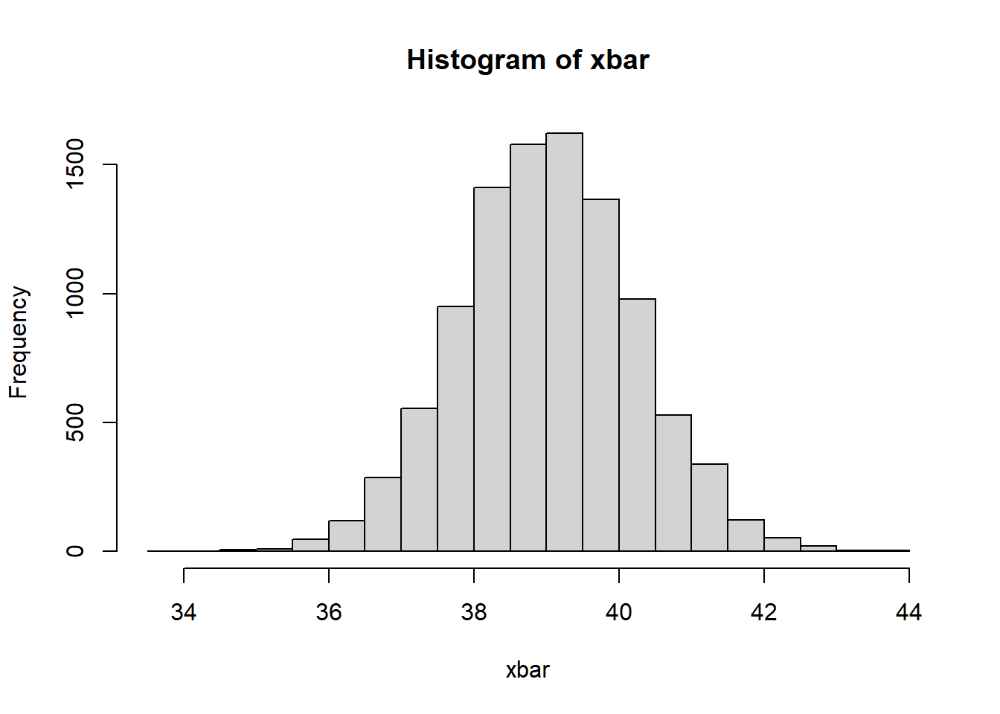
plot(density(xbar),col="blue",lwd=2)
points(density(rnorm(10^6,mean(x),sqrt(var(x)*((n-1)/n))/sqrt(n))),type="l",col="red",lwd=2)
2.6 Distribución muestral para la diferencia de medias
Sean dos poblaciones \(U_1\) y \(U_2\) independientes con medias y varianzas respectivamente: \(\mu_{x_1}\) y \(\mu_{x_2}\), \(\sigma^2_{x_1}\) y \(\sigma^2_{x_2}\).
Teorema:
La distribución muestral de las diferencias de media \(\bar{X_1}-\bar{X_2}\) esta tiene una distribución aproximadamente normal (\(n\rightarrow \infty\)) con medias y varianzas dadas por:
\[E[\bar{X_1}-\bar{X_2}]=\mu_{x_1}-\mu_{x_2}\]
\[V(\bar{X_1}-\bar{X_2})=\frac{\sigma^2_{x_1}}{n_1}+\frac{\sigma^2_{x_2}}{n_2}\] Demostración:
\[E[\bar{X_1}-\bar{X_2}]=E[\bar{X_1}]-E[\bar{X_2}]=\mu_{x_1}-\mu_{x_2}\]
\[V(\bar{X_1}-\bar{X_2})=V(\bar{X_1})+V(\bar{X_2})=\frac{\sigma^2_{x_1}}{n_1}+\frac{\sigma^2_{x_2}}{n_2}\]
Por el teorema del limite central con \(n\geq30\):
\[\bar{X_1}-\bar{X_2}\sim N\left(\mu_{x_1}-\mu_{x_2},\frac{\sigma^2_{x_1}}{n_1}+\frac{\sigma^2_{x_2}}{n_2}\right)\]
2.7 Distribución muestral para la proporción
La proporción no es nada más que un caso especial de la media para \(X\) que toma valores binarios según alguna característica de interés.
Sea \(P_A=\frac{\#A}{N}=\frac{\sum_U x_i}{N}\), \(x_i=1\) si \(i \in A\) \(x_i=0\) eoc. la proporción de alguna característica de la población.
Así la el estimador de la proporción sera:
\[\hat{P}_A=\frac{\sum_s{x_i}}{n}=\frac{\#a}{n}\]
Teorema:
Para el estadístico \(\hat{P}_A\) se cumple cuando \(n\) tiende a infinito los siguientes resultados:
- \(E[\hat{P}_A]=P_A\)
- \(V(\hat{P}_A)=\frac{\sigma^2_A}{n}\)
- \(\hat{P}_A\sim N(P_A,\frac{\sigma^2_A}{n})\), cuando \(n \rightarrow \infty\)
Donde \(\sigma^2_A\), sabiendo que \(x_i\) es binaria.
\[\sigma^2_A=\frac{\sum_U(x_i-\mu_x)^2}{N}= P_A *(1-P_A)\] Demostración
\[\mu_x=\frac{\sum_U{x_i}}{N}=\frac{\#A}{N}=P_A\] \[\sigma^2_A=\frac{\sum_U(x_i-P_A)^2}{N}=\frac{\sum_U x_i^2-2P_A \sum_U{x_i}+NP_A^2}{N}=\] \[=\frac{NP_A-2P_A NP_A+NP_A^2}{N}=P_A-P_A^2=P_A(1-P_A)\]
N<-100000
x<-round(runif(N,18,60))
a<-(x>30)*1
mean(a)#P_A## [1] 0.69976n<-100
r<-10000
pa<-NULL
for(i in 1:r){
s<-sample(a,n)
pa[i]<-mean(s)
}
PA<-mean(a)
plot(density(pa),col="blue",lwd=1.5)
points(density(rnorm(10^6,PA,sqrt(PA*(1-PA)/n))),col="red",type="l",lwd=2)
Ejercicio:
De una población de 150 estudiantes de la materia de estadística I se toma una muestra de 40 estudiantes, sobre los cuales se realiza un test sobre 100 puntos. Con los siguientes resultados:
59 54 61 58 66 56 35 42 49 65 61 61 58 57 57 60 55 63 66 48 52 54 49 54 55 32 60 40 53 67 54 60 44 74 55 24 43 56 62 50
Calcule:
- la probabilidad que el promedio de nota sea menor a 50,
- la probabilidad que el promedio de nota sea mayor a 60
- la probabilidad que el promedio de nota se encuentre entre 50 y 55
Solución,
Como información \(N=150\), \(n=40\),
\[\bar{X}=54.225\]
\[\hat{S}^2_x=99.35833\] Usando el teorema del limite central, podemos decir (aproximar) que:
\[\bar{X}\sim N\left(\mu_x\approx\bar{x},\frac{\sigma^2_x}{n}\approx \frac{\hat{S}^2_x}{n} \right)=N(54.225,2.484)\]
La probabilidad que el promedio de nota sea menor a 50,
\[P(\bar{X}<50)=P\left(\frac{\bar{X}-\mu_x}{\frac{\sigma_x}{\sqrt{n}}} <\frac{50-54.225}{\sqrt{2.484}}\right)=P(Z<-2.68)=\phi(-2.68)=\] \[=0.00368\]
- la probabilidad que el promedio de nota sea mayor a 60
\[P(\bar{X}>60)=P(Z>3.66)=1-P(Z\leq 3.66)=1-\phi(3.66)=0.00013\]
- la probabilidad que el promedio de nota se encuentre entre 50 y 55
2.8 Distribución muestral para la varianza
Recordar que para una población \(U\), si observamos a una variable de interés respecto sus características podemos obtener medidas de centralidad y también medidas de variabilidad, por ejemplo, sea \(X\) una variables definida para toda la población, y definamos los siguientes parámetros de \(X\).
\[\mu_x=\frac{\sum_U x_i}{N}\]
Esta \(\mu_x\) es una medida de centralidad, normalmente conocida como media, promedio de \(X\), la otra medida puede ser:
\[\sigma^2_x=\frac{\sum_U (x_i-\mu_x)^2}{N}\]
\(\sigma^2_x\) es la varianza poblacional
Ejemplo,
Sea una población de \(N=5\) elementos con la variable \(X=\{10,15,20,20,35\}\), calcular \(\mu_x\) y \(\sigma^2_x\).
- \(\mu_x=20\)
- \(\sigma^2_x=70\)
Suponer que se toman muestras aleatorias de esta población de tamaño \(n=3\) sin reposición. La cantidad de muestras posibles es 10.
x<-c(10,15,20,20,35)
s<-combn(x,3)
s## [,1] [,2] [,3] [,4] [,5] [,6] [,7]
## [1,] 10 10 10 10 10 10 15
## [2,] 15 15 15 20 20 20 20
## [3,] 20 20 35 20 35 35 20
## [,8] [,9] [,10]
## [1,] 15 15 20
## [2,] 20 20 20
## [3,] 35 35 35#distribución muestral de la media
mean(apply(s, 2, mean)) ## [1] 20Pensemos para el caso de la varianza en posibles estadísticos (estimadores):
\[\hat{\theta}_1=\hat{\sigma}^2_x=\frac{\sum_s (x_i-\bar{x})^2}{n}\]
\[\hat{\theta}_2=\hat{S}^2_x=\frac{\sum_s (x_i-\bar{x})^2}{n-1}\]
x<-c(10,15,20,20,35)
n<-3;N<-5
s## [,1] [,2] [,3] [,4] [,5] [,6] [,7]
## [1,] 10 10 10 10 10 10 15
## [2,] 15 15 15 20 20 20 20
## [3,] 20 20 35 20 35 35 20
## [,8] [,9] [,10]
## [1,] 15 15 20
## [2,] 20 20 20
## [3,] 35 35 35var(x)*((N-1)/N)## [1] 70theta1<-apply(s,2,var)*((n-1)/n)
theta2<-apply(s,2,var)
mean(theta1)-70## [1] -11.66667mean(theta2)-70## [1] 17.5plot(density(theta1),xlim=c(-50,300))
points(density(theta2),col="red",type="l")
Notar que para el ejemplo \(E[\hat{\theta_1}]\) ni \(E[\hat{\theta_2}]\) se acercan a \(\sigma^2_x\), sin embargo, \(E[\hat{\theta}_2]=S^2_x\).
\[S^2_x=\frac{\sum_U (x_i-\mu_x)^2}{N-1}\] Viendo los resultados en una simulación
N<-1000
set.seed(1527)
x<-round(rnorm(N,60,10),0)
mean(x)#mu## [1] 60.306sum((x-mean(x))^2)/N#sigma## [1] 97.67236n<-60
theta1<-NULL
theta2<-NULL
r<-20000
for(i in 1:r){
aux<-sample(x,n)
theta1[i]<-var(aux)*((n-1)/n)
theta2[i]<-var(aux)
}
plot(density(theta1),col="red")
points(density(theta2),col="blue",type="l")
abline(v=var(x)*((N-1)/N))
abline(v=mean(theta1),col="red")
abline(v=mean(theta2),col="blue")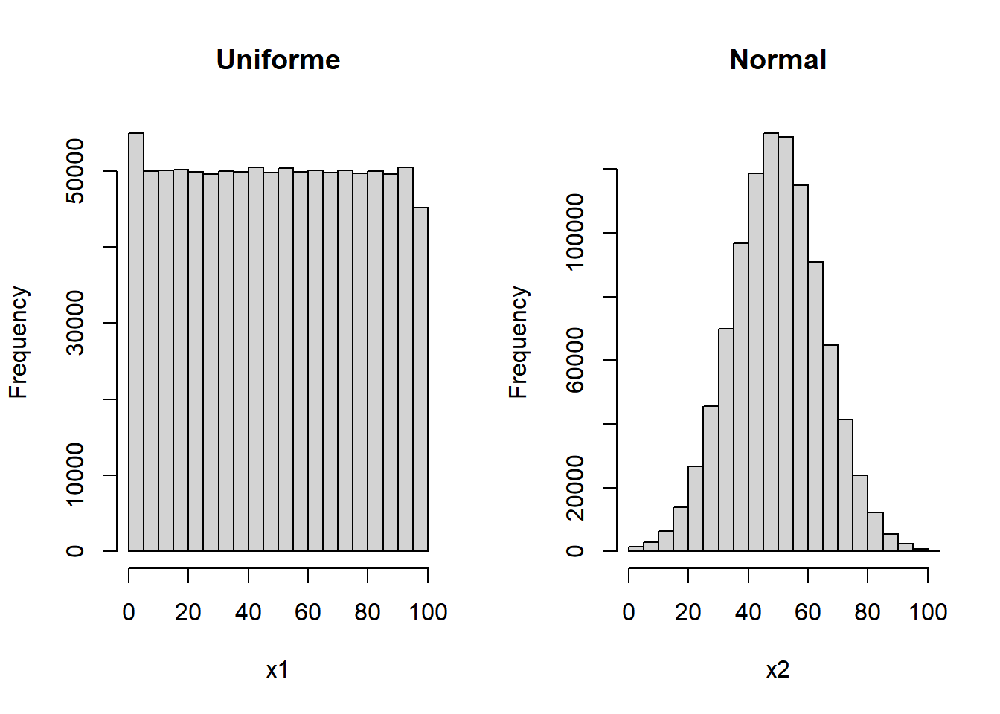
var(x)*((N-1)/N)#parámetro## [1] 97.67236mean(theta1)#estimador por copia /n## [1] 96.20363mean(theta2)#varianza muestral /n-1## [1] 97.8342Teorema
Sea \(X_1,X_2,\ldots,X_n\) una muestra aleatoria extraída de una población Normal \(N(\mu_x,\sigma^2_x)\), definamos al estadístico:
\[\hat{S}^2_x=\frac{\sum_s (x_i-\bar{x})^2}{n-1}\]
Entonces, se cumple
\[\chi^2=\frac{(n-1)\hat{S}^2_x}{\sigma^2_x}=\frac{\sum_s (x_i-\bar{x})^2}{\sigma^2_x}\sim \chi^2(n-1)\]
Simulación;
sigma2x<-var(x)*((N-1)/N)#parámetro
chi2<-(theta2*(n-1))/sigma2x
plot(density(chi2))
curve(dchisq(x,df=59),add=T,col="red")
2.9 Distribución \(\chi^2\)
Se dice que una variable aleatoria \(X\) tiene una distribución Chi-cuadrado \(\chi^2\) con \(v\) grados de libertad. Se escribe como: \(X \sim \chi^2(v)\), donde el \(Rx=\{x>0\}\), si su función de densidad es:
\[f(x)=\frac{1}{2^\frac{v}{2} \Gamma(\frac{v}{2})}*x^{\frac{v}{2}-1}*e^{-\frac{x}{2}}\]
curve(dchisq(x,1),xlim=c(0,60),ylim=c(0,0.4))
for(v in 2:50){
curve(dchisq(x,v),add=T,col=v)
}
curve(dchisq(x,10),xlim=c(0,60))
abline(v=10)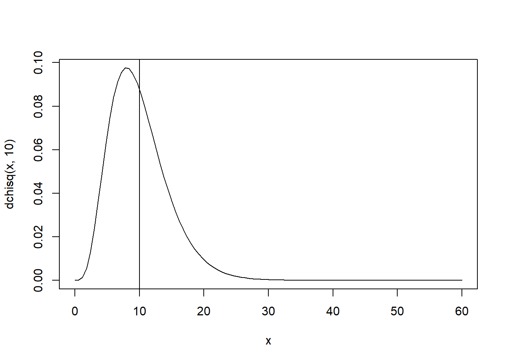
Donde,
\[E[X]=v\] \[V(X)=2v\]
Ejercicio 1,
Para una muestra aleatoria de \(n=30\), se busca estimar la varianza poblacional, mediante la varianza muestral, suponiendo que la variable de interés
\[X\sim N(\mu_x,\sigma_x^2=16)\]
Encuentre la probabilidad que la varianza muestral se encuentre entre 12 y 18.
Solución,
\[P(12<\hat{S}^2_x<18)=P\left(\frac{29*12}{16}<\frac{(n-1)\hat{S}^2_x}{\sigma^2_x}<\frac{29*18}{16}\right)=\]
\[=P(21.75<\chi^2<32.635)=F(32.635)_{\chi^2_{29}}-F(21.75)_{\chi^2_{29}}=0.5377\]
pchisq(32.635,29)-pchisq(21.75,29)## [1] 0.5376884Ejercicio 2,
Encuentre la probabilidad de que una muestra aleatoria de \(n=25\) de un población normal con varianza \(\sigma_x^2=9\), tenga una varianza muestral \(\hat{S^2}\) entre 4 y 15.
\[P(4<\hat{S}^2_x<15)=P(4*24/9<\frac{(n-1)\hat{S}^2_x}{\sigma^2_x}<15*24/9)=P(10.66<\chi^2 <40)\] \[P(10.66<\chi^2 <40)=F(40)-F(10.66)=0.9786-0.0087=0.9699\]
pchisq(40,24)#F(40) para un chi2(v=24)## [1] 0.9786132pchisq(10.66,24)#F(10.66) para un chi2(v=24)## [1] 0.008762108curve(dchisq(x,24),xlim=c(0,60))
abline(v=c(10.66,40),col="red")
Tomar en cuenta que:
\[\chi^2=\frac{(n-1)\hat{S}^2_x}{\sigma^2_x}=\frac{\sum_s (x_i-\bar{x})^2}{\sigma^2_x}\sim \chi^2(n-1)\]
#ejemplo para usar R para calcular probabilidades de la Chi2
pchisq(4,10) # F(t)=P(X<t): F(4)## [1] 0.05265302Nota,
\[\frac{\sum_s (x_i-\bar{x})^2}{\sigma^2_x}=\sum_s\left(\frac{x_i-\bar{x}}{\sigma_x}\right)^2\] En el fondo la distribución \(\chi^2\) es la suma de variables aleatorias Normales estándar al cuadrado.
2.10 Distribución t-student
Teorema
Sea \(Z\) una variable aleatoria normal estándar y \(V\) una variable aleatoria chi-cuadrado con \(v\) grados de libertad. Si \(Z\) y \(V\) son independientes, entonces la distribución de la variable aleatoria \(X\), donde:
\[X=\frac{Z}{\sqrt{V/v}}\] Se comporta como una distribución \(t\) con \(v\) grados de libertad. En notación, decimos \(X\sim t(v)\).
\[f(x)=\frac{\Gamma(\frac{v+1}{2})}{\Gamma{(\frac{v}{2})}\sqrt{v\pi} }\left(1+\frac{x^2}{v} \right)^{-(\frac{v+1}{2})}, \quad -\infty<x<\infty\]
Al igual que la distribución normal estándar, la \(t\) es simétrica al rededor del cero. Y levemente más plana que una normal.
Nota: Cuando \(v\rightarrow \infty\) la \(t \sim N(\mu=0,\sigma^2=\frac{v}{v-2})\)
v<-5
curve(dnorm(x,0,sqrt(v/(v-2))),xlim=c(-5,5),ylim=c(0,0.4),main="5 grados de libertad")
curve(dt(x,v),xlim=c(-5,5),main="t-student (v=10)",col="red",add=T)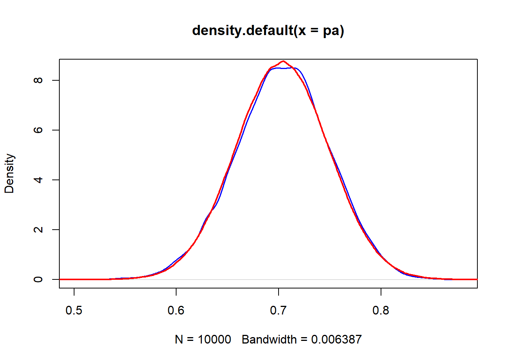
v<-50
curve(dnorm(x,0,sqrt(v/(v-2))),xlim=c(-5,5),ylim=c(0,0.4),main="50 grados de libertad")
curve(dt(x,v),xlim=c(-5,5),main="t-student (v=10)",col="red",add=T)
Corolario
Sean \(X_1, X_2, \ldots, X_n\) variables aleatorias e independientes e idénticamente distribuidas (iid) \(X_i\sim N(\mu,\sigma^2_x), \quad i=\{1,\ldots,n\}\). Sean los estimadores:
\[\bar{X}=\frac{\sum_s x_i}{n} \quad y \quad \hat{S}^2_x=\frac{\sum_s (x_i-\bar{X})^2}{n-1}\]
Entonces,
\[ \frac{\bar{X}-\mu}{\hat{S}/\sqrt{n}}\sim t(v=n-1) \]
Apariencia de la \(t\)
curve(dt(x,2),xlim=c(-5,5),ylim=c(0,0.4))
for(v in 3:30){
curve(dt(x,v),xlim=c(-5,5),col=v,add=T)
}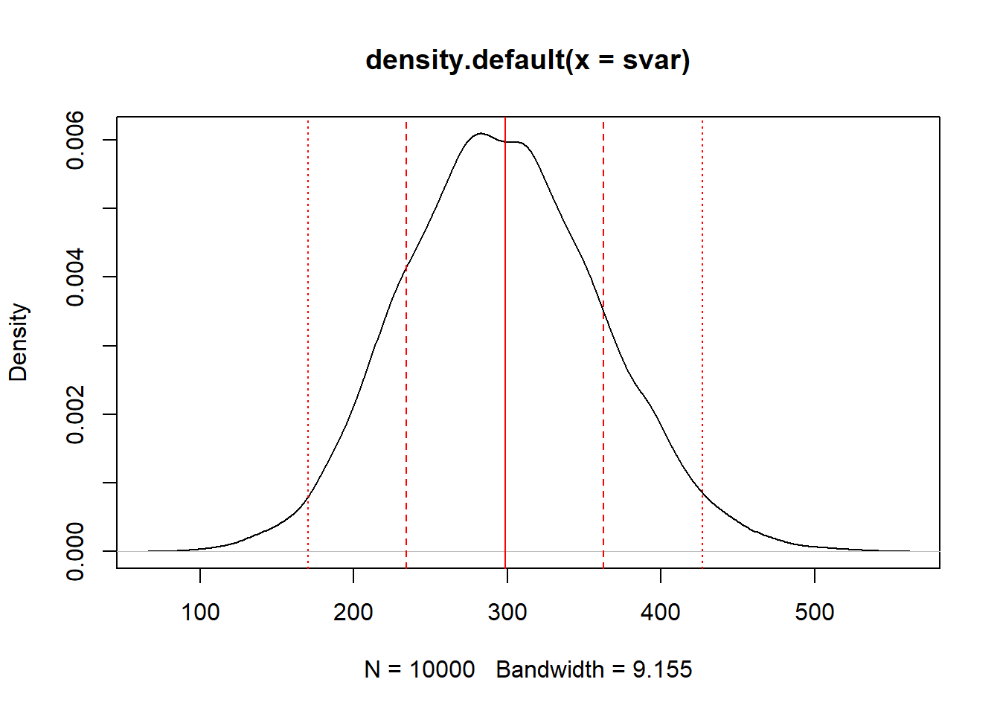
En R, para obtener \(P(X<t)=F(t)\) con \(X\sim t(v)\).
# P(X<2)=F(2), X ~ t(v=10)
pt(2,10)## [1] 0.963306Ejercicio 1, Sea \(X\sim t(v=14)\). Calcular:
- \(P(X>0.67)=1-P(X\leq 0.67)=1-F(0.67)=1-0.7431=0.2569\)
- \(P(X<0.5)=F(0.5)=0.6875\)
- \(P(-1.96<X<1.96)=F(1,96)-F(-1.96)=0.9649-0.0351=0.9298\)
Ejercicio 2, Sea \(X\sim t(v=20)\)
- \(P(X>0.5)=1-P(X\leq0.5)=1-F(0.5)=0.3113\)
- \(P(X>0)=1-P(X\leq 0)=F(0)=0.5\)
- \(P(X<1)=F(1)=0.8354\)
- \(P(-1<X<1)=F(1)-F(-1)=0.6707\)
2.11 Distribución Fisher
Teorema
Sean \(U\) y \(V\) dos variables aleatorias independientes, con \(U\sim \chi^2(v_1)\) y \(V \sim \chi^2(v_2)\). Y sea la variable \(X\) definida como:
\[X=\frac{U/v_1}{V/v_2}\] Así, decimos que \(X\) se distribuye como una Fisher, \(X\sim F(v_1,v_2)\), donde estas \(v_1\) y \(v_2\) son los grados de libertad de la Fisher. La forma de la distribución \(f(x)\) es:
\[ f(x)=\frac{\left(\frac{v_1}{v_2} \right)^{v_1/2} x^{v_1/2-1}\Gamma{(\frac{v_1+v_2}{2})} }{\Gamma{(\frac{v_1}{2})} \Gamma{(\frac{v_2}{2})}\left(1+\frac{v_1}{v_2}x \right)^{(v_1+v_2)/2}}, \quad x>0 \]
2.11.1 Para las varianzas muestrales
Suponga que las muetsras aleatorias de tamaños \(n_1\) y \(n_2\) se selecciona de 2 poblaciones normales con varianzas \(\sigma^2_1\) y \(\sigma^2_2\) respectivamente. Sabemos:
\[\chi^2_1=\frac{(n_1-1)\hat{S}_1^2}{\sigma^2_1}\sim \chi^2(v_1=n_1-1)\]
\[\chi^2_2=\frac{(n_2-1)\hat{S}_2^2}{\sigma^2_2}\sim \chi^2(v_2=n_2-1)\] > Teorema:
Si \(\hat{S_1}\) y \(\hat{S_2}\) son los estimadores de la varianza de muestras aleatorias independientes entre ellas de tamaño \(n_1\) y \(n_2\), tomadas de poblaciones normales con varianzas \(\sigma^2_1\) y \(\sigma^2_2\) entonces:
\[\frac{\hat{S_1}^2/\sigma^2_1}{\hat{S_2}^2/\sigma^2_2}=\frac{\hat{S}_1^2*\sigma^2_2}{\hat{S}_2^2*\sigma^2_1}\sim F(v_1=n_1-1,v_2=n_2-1)\]
curve(df(x,10,10),xlim=c(0,6))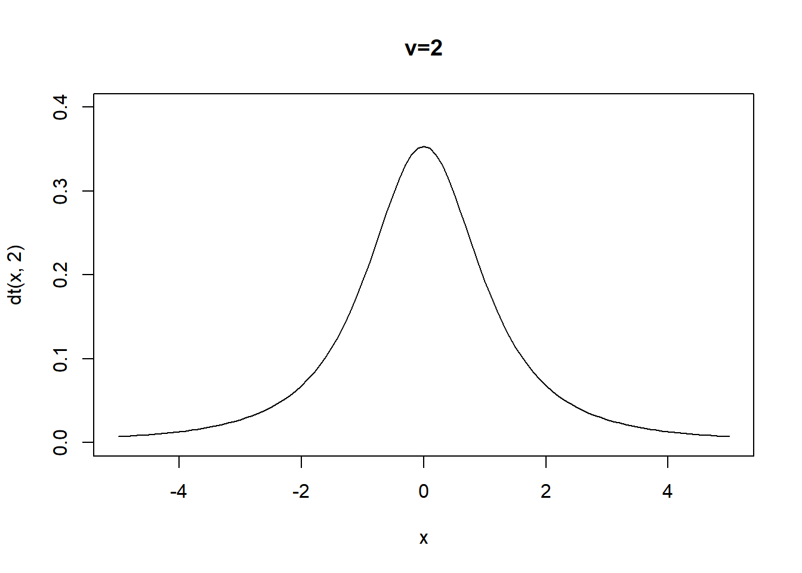
curve(df(x,15,10),xlim=c(0,6))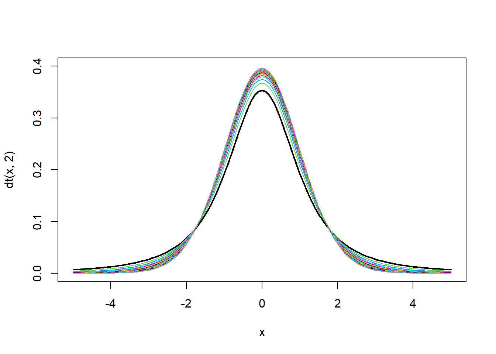
curve(df(x,100,100),xlim=c(0,6))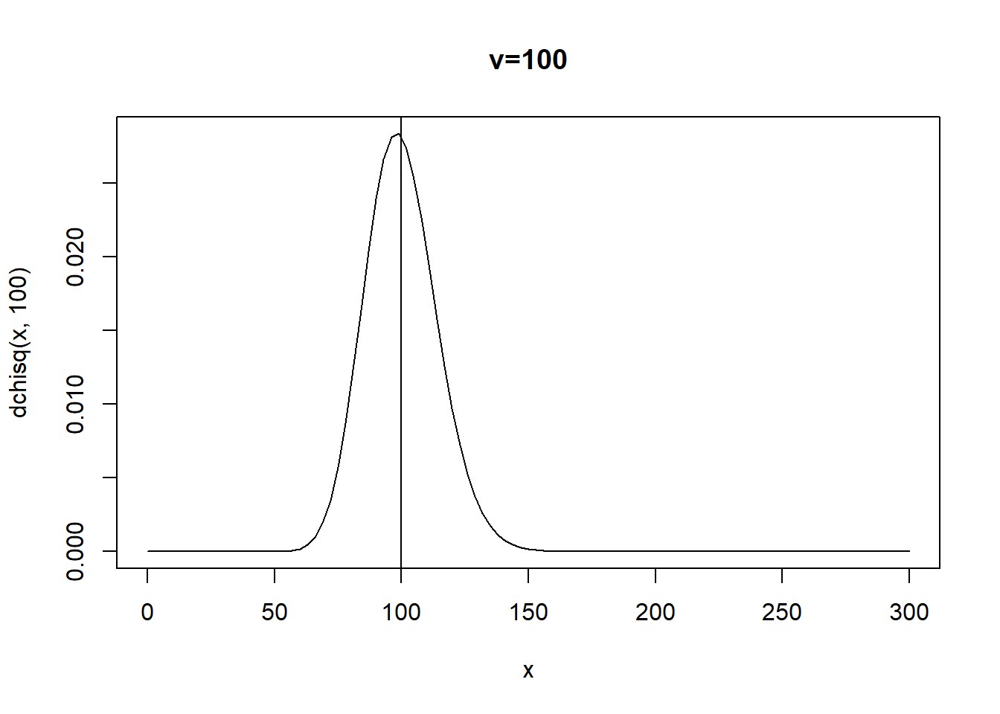
curve(df(x,1000,1000),xlim=c(0,6))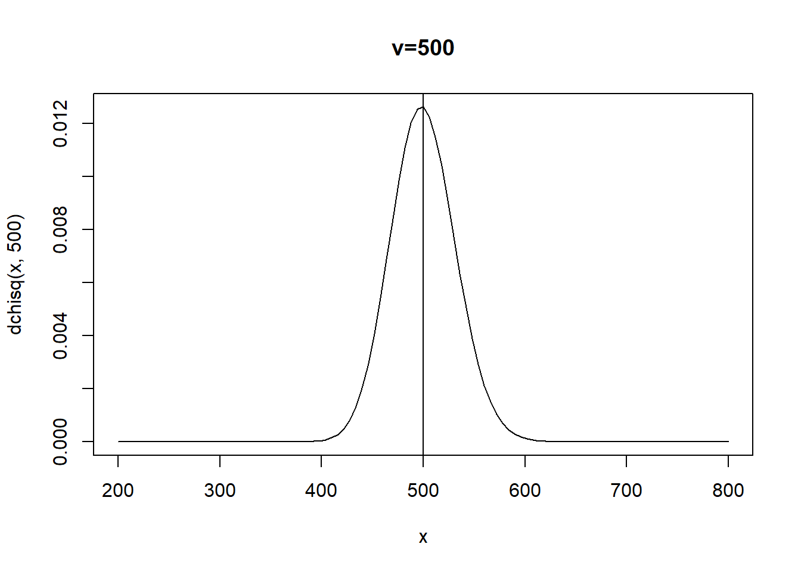
curve(df(x,30,30),xlim=c(0,6))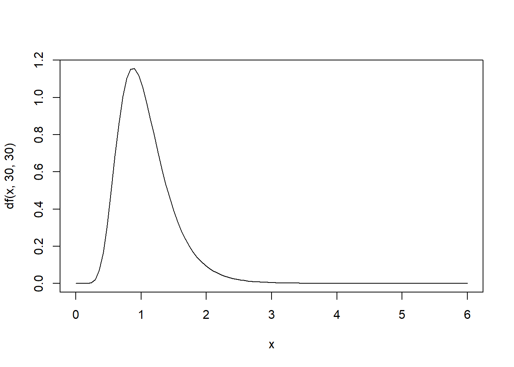
En R
#P(X<t)=F(t), donde X ~ F(v1,v2). F(10,10), P(X<1)=F(1)
pf(1,10,10)## [1] 0.5pf(1,50,50)## [1] 0.5pf(1,30,30)## [1] 0.5pf(1,25,60)## [1] 0.5184981pf(1,25,15)## [1] 0.48453682.12 Ejercicios
- Suponga que una variable aleatoria se distribuye normalmente con media \(\mu\) y varianza \(\sigma^2\). Extraiga una muestra aleatoria de cinco observaciones. ¿Cuál es la función de densidad conjunta de la muestra?
Solución, \(x\sim N(\mu,\sigma^2)\), \(n=5\), \(x_1,x_2,x_3,x_4,x_5\)
Se busca:
\[f(x_1,x_2,x_3,x_4,x_5)=f(x_1)*f(x_2)*\ldots*f(x_5)\]
Notar que las muestras son independientes e identicamente distribuidas.
\[f(x_1,x_2,x_3,x_4,x_5)=\frac{1}{\sigma\sqrt{2\pi}}e^{-(\frac{x_1-\mu}{\sigma})^2}*\ldots*\frac{1}{\sigma\sqrt{2\pi}}e^{-(\frac{x_5-\mu}{\sigma})^2}\]
- Los transistores tienen una vida de servicios que se distribuye exponencialmente con parámetro \(\lambda\). Se toma una muestra aleatoria de \(n\) transistores. ¿Cuál es la función de densidad conjunta de la muestra?
Solución, como información \(x\sim exp(\lambda)\), donde x: La vida de un transistor.
\[f(x_1, \ldots,x_n)=\prod_{i=1}^n f(x_i)=\prod_{i=1}^n \lambda e^{-\lambda x_i}=\lambda^n e^{-\lambda \sum_{i=1}^n x_i}\]
- Se tiene una población de 6 personas, de las cuales se toma una muestra aleatoria sin reposición de tamaño 3. Demostrar que el estimador de la media es insesgado. Los valores de la población para una variable X son {20,20,25,28,30,26}.
Solución, recordar que:
\[E[\bar{X}]=\mu\]
x<-c(20,20,25,28,30,26)
N<-6
n<-3
choose(N,n)## [1] 20s<-combn(x,3)
xbar<-apply(s,2,mean)
mean(x)#mu## [1] 24.83333sum(xbar*1/20)#E[xbar]## [1] 24.83333\[6C3= \frac{6!}{(6-3)!3!}=\frac{4*5*6}{6}=20\]
- Del ejercicio anterior demostrar que la varianza del estimador de la media para poblaciones finitas queda como:
\[V(\bar{X})=\left(1-\frac{n}{N}\right) \frac{S_x^2}{n}\]
sum((1/20)*(xbar-mean(xbar))^2)#V(xbar)## [1] 2.827778s2<-sum(((x-mean(x))^2)/(N-1))
s2<-var(x)
(1-n/N)*(s2/n)#formula## [1] 2.827778\[V(X)=E[(X-E[X])^2]=\sum_{Rx} (x_i-E[x_i])^2*P(X=x_i)\] \[S^2_x=\frac{\sum_U (x_i-\mu)^2}{N-1}\]
- La capacidad máxima de un ascensor es de 500 kilos. Si la distribución \(X\) de los pesos de los usuarios es
\[X\sim N(\mu=70,\sigma^2=100)\]
- Cuál es la probabilidad de que 8 pasajeros sobrepasen ese límite
- Cuál es la probabilidad de que 7 pasajeros sobrepasen ese límite
- Cuál es la probabilidad de que 6 pasajeros sobrepasen ese límite
Solución,
Sean \(X_1, X_2, \ldots,X_p\) con \(p\) la cantidad de pasajeros en el ascensor, suponemos que estas \(X_i\) son iid \(X_i\sim N(\mu=70,\sigma=10)\). Se pide:
\[P(Y=X_1+X_2+\ldots+X_p>500)\] Notar que la suma de variables normales es también normal. \(Y\sim N(\mu_y=p*\mu_x,\sigma^2_y=p*\sigma^2_x )\)
\[E[Y]=E[X_1+\ldots+X_p]=E[X_1]+\ldots+E[X_p]=\mu_x+\ldots+\mu_x=p*\mu_x\] \[V(Y)=V(X_1+\ldots+X_p)=V(X_1)+\ldots+V(X_p)=\sigma^2_x+\ldots+\sigma^2_x=p*\sigma^2_x\]
- Cuál es la probabilidad de que 8 pasajeros sobrepasen ese límite; \(Y\sim N(\mu_y=8*70=560,\sigma^2_y=8*100=800)\)
\[P(Y>500)=P(Z>\frac{500-560}{\sqrt{800}})=P(Z>-2.12)=1-P(Z\leq -2.12)=1-\phi(-2.12)=\]
\[=1-0.017=0.983\]
- Cuál es la probabilidad de que 7 pasajeros sobrepasen ese límite, \(Y\sim N(\mu_y=490,\sigma^2_y=700)\)
\[P(Y>500)=P(Z>0.3779)=1-\phi(0.3779)=1-0.647=0.353\]
- Cuál es la probabilidad de que 6 pasajeros sobrepasen ese límite. (Ejercicio)
- El viaje en un autobús especial para ir de un campus de una universidad al campus de otra en una ciudad toma, en promedio, 28 minutos, con una desviación estándar de 5 minutos. En cierta semana un autobús hizo el viaje 40 veces. ¿Cuál es la probabilidad de que el tiempo promedio del viaje sea mayor a 30 minutos?
Solución, \(n=40\), Sea \(X\) una va. que explica el tiempo de viaje entre los dos campus. \(X \sim .(\mu_x=28,\sigma=5)\), nos pide:
\[P(\bar{X}>30)\]
Recordar por el teorema del límite central que \(\bar{X} \sim N(\mu_{\bar{x}}=28,\sigma^2_{\bar{x}}= \sigma^2_x/n=25/40)\) cuando \(n>30\).
\[P(\bar{X}>30)=P\left(\frac{\bar{X}-\mu_x}{\sigma_x/\sqrt{n}} >\frac{30-28}{5/\sqrt{40}}\right)=P(Z>2.52)=1-P(Z\leq 2.52)\approx 1-\phi(2.52)=\]
\[=1-0.9941=0.0059\]
- La calificación promedio de los estudiantes de primer año en un examen de aptitudes en cierta universidad es 540, con una desviación estándar de 50. Suponga que las medias se miden con cualquier grado de precisión. ¿Cuál es la probabilidad de que dos grupos seleccionados al azar, que constan de 32 y 50 estudiantes, respectivamente, difieran en sus calificaciones promedio por:
más de 20 puntos?
una cantidad entre 5 y 10 puntos? _ Solución, como información se tienen 2 muestras, \(n_1=32\), \(n_2=50\). Sea \(X\sim . (\mu=540,\sigma=50)\), nos piden analizar la diferencia de las medias de los dos grupos, \(\bar{X_1}\), \(\bar{X}_2\):
más de 20 puntos?
\[P( |\bar{X_1}-\bar{X}_2| >20)=1-P( |\bar{X_1}-\bar{X}_2| \leq 20)=1-P( -20\leq \bar{X_1}-\bar{X}_2 \leq 20)\]
Para la diferencia de medias \(\bar{X_1}-\bar{X}_2\sim N(\mu_{\bar{X_1}-\bar{X}_2}=\mu_x-\mu_x=0,\sigma^2_{\bar{X_1}-\bar{X}_2}=\frac{\sigma^2_1}{n_1}+\frac{\sigma^2_2}{n_2}=50^2/32+50^2/50)\), entonces, \(Y=\bar{X_1}-\bar{X}_2\sim N(\mu_y=0,\sigma^2_y=128.125)\), bajo el supuesto que las \(\bar{X}_1\) y \(\bar{X}_2\) tienden a ser normales por el teorema del límite central.
\[P( -20\leq \bar{X_1}-\bar{X}_2 \leq 20)=P(-20/11.31\leq Z \leq 20/11.31)\approx \phi(1.77)-\phi(-1.77)=\]
\[=0.962-0.038=0.9232\] \[P( |\bar{X_1}-\bar{X}_2| >20)=1-0.9232=0.0768\]
- una cantidad entre 5 y 10 puntos? (ejercicio)
- Suponga que las varianzas muestrales son mediciones continuas. Calcule la probabilidad de que una muestra aleatoria de 25 observaciones, de una población normal con varianza \(\sigma^2 = 6\), tenga una varianza muestral \(\hat{S}^2\)
- mayor que 9.1
- entre 3.462 y 10.745.
\[P(\hat{S}^2>9.1)=P\left(\frac{(n-1)\hat{S^2}}{\sigma^2_x}> 24*9.1/6 \right)=P(\chi^2>36.4)=1-P(\chi^2\leq36.4)=\]
\[=1-0.9498=0.0502\]
Teniendo en cuenta que \(\chi^2\sim \chi^2(v=24)\)
- Un fabricante de cierta marca de barras de cereal con bajo contenido de grasa afirma que el contenido promedio de grasa saturada en éstas es de 0.5 gramos. En una muestra aleatoria de 8 barras de cereal de esta marca se encontró que su contenido de grasa saturada era de 0.6, 0.7, 0.7, 0.3, 0.4, 0.5, 0.4 y 0.2. ¿Estaría de acuerdo con tal afirmación? Suponga una distribución normal. (\(t\))